Syndroomgerichte Diagnostiek
Zie ook: Koorts na tropenverblijf voor gestructureerde anamnese, lichamelijk onderzoek en aanvullend onderzoek.
| Patroon | Kenmerk | Uitvraag | Denk aan |
|---|---|---|---|
| Bifasisch (zadeldak) | Koorts → afebriel 1-2d → koorts | "Eerst koorts, toen beter, nu weer koorts?" | Dengue, Leptospirose |
| Stepladder | Dagelijks hoger wordend | "Elke dag een beetje zieker?" | Buiktyfus |
| Tertiana | Om de 48 uur | "Om de dag koorts?" | P. vivax/ovale |
| Quartana | Om de 72 uur | "Elke 3 dagen koorts?" | P. malariae |
| Intermitterend | Afgewisseld met normaal | "Tussendoor koortsvrij?" | Malaria, Abces, Brucellose |
| Syndroom | Uitvraag | Denk aan | Diagnostiek |
|---|---|---|---|
| Koorts + icterus + nierinsufficiëntie | "Gele ogen? Minder plassen?" | Leptospirose (Weil), Malaria (ernstig) | Creat, Bili, LDH, PCR/MAT, Dikke druppel |
| Koorts + pijn rechts + schouder (referred pain) |
"Pijn rechts onder ribbenboog, uitstralend naar schouder?" | Amoebenabces | Echo abdomen, Amoeben-serologie |
| Koorts + hematurie (terminaal) | "Bloed aan eind van plassen?" | Schistosomiasis (S. haematobium) | Eieren in urine, serologie |
| Koorts + splenomegalie + pancytopenie | "Milt voelbaar + laag bloedbeeld" | Viscerale leishmaniasis (Kala-azar), HMS, Malaria | rK39-test, Beenmergpunctie |
| Koorts + hepatosplenomegalie + eosinofilie | "Lever en milt vergroot + hoge eosinofielen?" | Acute schistosomiasis (Katayama) | Serologie (eieren vaak nog afwezig) |
| Type rash | Kenmerk | Denk aan | Diagnostiek |
|---|---|---|---|
| Maculopapulair op romp | Rode vlekjes buik/borst, niet jeukend | Dengue, Zika, Chikungunya, HIV (acuut), Tyfus (roseolae) | NS1-Ag, HIV-test |
| Petechiën/purpura (drukken niet weg) |
Puntbloedinkjes | VHF, Meningokokken, Dengue (ernstig), Rickettsiose | Bloedkweek, PCR, Trombo's |
| Eschar (zwarte korst + rode rand) |
Tache noire op beetplaats | Rickettsiose (tekenbeet), Anthrax | Rickettsia-serologie |
| Roseolae (bleke vlekjes romp) |
Kleine bleke maculae, lastig zichtbaar bij donkere huid | Buiktyfus | Bloedkweek |
| Sjanker + lymfeklier (pijnloze zweer) |
Ulcus met opgezette klieren | Trypanosomiasis, Cutane Leishmaniasis, Syfilis | Uitstrijkje, Serologie |
| Syndroom | Uitvraag | Denk aan | Diagnostiek |
|---|---|---|---|
| Koorts + ernstige gewrichtspijn (invaliderend, symmetrisch) |
"Kunt u niet meer lopen van gewrichtspijn? Polsen, enkels, knieën?" | Chikungunya (kan weken-maanden persisteren), Dengue, Reactieve artritis | Chikungunya-serologie, NS1 |
| Koorts + gegeneraliseerde lymfadenopathie (meerdere stations) |
"Opgezette klieren in hals, oksels, liezen?" | Acute HIV (mononucleosis-achtig beeld), TBC, Filariasis | HIV-test (herhalen na 6 weken), Mantoux |
| Koorts + posterieure cervicale lymfadenopathie (achterkant hals) |
"Opgezette klieren achterin de hals?" | Trypanosomiasis (Winterbottom-teken) | Bloeduitstrijkje, Liquor |
| Koorts + faryngitis + rash + lymfadenopathie | "Keelpijn + uitslag + opgezette klieren?" | Acute HIV-seroconversie (mononucleosis-achtig beeld) | HIV-test (p24-Ag, RNA als recent) |
| Koorts + inguïnale lymfadenopathie + ulcus | "Opgezette liesklieren met zweer genitaal?" | Lymphogranuloma venereum, Syfilis, Herpes, Chancroïd | Chlamydia PCR (LGV), TPHA, HSV-PCR |
| Koorts + unilateraal lymfoedeem been | "Eén been veel dikker dan het andere?" | Lymfatische filariasis (elephantiasis) | Microfilarieën (nachtelijke afname), Serologie |
| Syndroom | Uitvraag | Denk aan | Diagnostiek |
|---|---|---|---|
| Koorts + hoesten >2-3 weken (chronisch) |
"Hoest al weken? Nachtzweten? Gewichtsverlies?" | Tuberculose | X-thorax, Sputumkweek, Mantoux/IGRA |
| Koorts + droge hoest + nachtelijk piepen + ernstige eosinofilie |
"Piepen 's nachts? Droge hoest? Vermoeidheid?" | TPE (Tropische Pulmonale Eosinofilie) | Eosinofielen, IgE, Filaria-serologie, X-thorax |
| Koorts + hoesten + migrerende infiltraten + eosinofilie |
"Hoesten met koorts? Recent uit tropen?" | Löffler syndroom (Ascaris, Strongyloides, Hookworm) | X-thorax (migrerende infiltraten), Feces O&P |
| Koorts + hemoptoë (bloed ophoesten) |
"Bloed opgehoest?" | TBC, Paragonimiasis (longbot), Bronchiëctasieën | X-thorax, Sputum (ZN-kleuring, kweek) |
| Koorts + ARDS/respiratoir falen | "Ernstige kortademigheid? IC-opname?" | Leptospirose (pulmonale bloeding), Malaria (ernstig), VHF | Dikke druppel, Leptospira-PCR, Bloedkweek |
| Syndroom | Uitvraag | Denk aan | Diagnostiek |
|---|---|---|---|
| Koorts + nekstijfheid + hoofdpijn + fotofobie | "Kunt u kin op borst leggen? Licht pijnlijk?" | Bacteriële meningitis, TBC-meningitis, Cryptococcen (HIV) | LP (celgetal, eiwit, glucose, kweek), PCR |
| Koorts + bewustzijnsdaling (acuut) | "Plotseling in de war? Reageert niet goed?" | Cerebrale malaria, Meningitis, Hypoglycemie | Dikke druppel (urgent), Glucose, LP |
| Koorts + slaapstoornissen + gedragsverandering | "Overdag slaperig? 's Nachts wakker? Agressief/prikkelbaar?" | Afrikaanse Trypanosomiasis (Slaapziekte) | Liquor, Bloeduitstrijkje (trypanosomen) |
| Koorts + epileptische aanvallen | "Insulten gehad?" | Neurocysticercose, Cerebrale malaria, Meningitis | CT/MRI hersenen, LP |
| Koorts + paraplegie/myelopathie | "Krachtverlies benen? Tintelingen?" | Neuroschistosomiasis, HTLV-1, TBC | MRI myelum, Schistosoma-serologie |
| Syndroom | Uitvraag | Denk aan | Diagnostiek |
|---|---|---|---|
| Bloederige diarree + tenesmus (dysenterie) |
"Bloed/slijm bij ontlasting? Aandrang maar weinig productie?" | Amoebendysenterie, Shigella, Campylobacter | Feces PCR, Microscopie (trofozoïeten) |
| Waterige diarree + winderigheid | "Opgeblazen buik? Veel winden? Stinkend?" | Giardiasis, Cryptosporidium (HIV) | Feces PCR, Antigeen-test |
| Koorts + diarree + eosinofilie | "Diarree met hoge eosinofielen?" | Strongyloides, Schistosomiasis (chronisch) | Feces O&P, Serologie |
| Koorts + buikpijn + hoesten (4-8 weken na zoetwater) |
"Recent gezwommen in Afrika? Hoesten + buikpijn?" | Katayama syndroom (acute schistosomiasis) | Eosinofielen, Serologie |
Per incubatietijd
| Timing na terugkeer | Denk aan | Diagnostiek |
|---|---|---|
| <10 dagen | Dengue, Chikungunya, Zika, Rickettsiose | NS1-Ag, Serologieën |
| 10-21 dagen | Malaria (P. falciparum), Buiktyfus, Leptospirose | Dikke druppel (herhaal tot 3x), Bloedkweek |
| 3-8 weken | Malaria (vivax/ovale), Katayama, Hepatitis A/E | Dikke druppel, Eosinofielen, HAV-IgM |
| >3 maanden | Malaria (vivax/ovale relapse), TBC, Visceral leishmaniasis, Hepatitis B/C | Dikke druppel, Mantoux, rK39, HBsAg |
Per specifieke expositie
| Expositie | Denk aan | Diagnostiek |
|---|---|---|
| Zoetwater contact (zwemmen, raften) | Schistosomiasis, Leptospirose | Serologie, Eieren urine/feces |
| Safari Oost-Afrika | T.b. rhodesiense (acuut beloop, snelle progressie) | Bloeduitstrijkje (trypanosomen) |
| Grottentocht (vleermuizen) | Histoplasmose, Rabiës-expositie | X-thorax, Histoplasma-Ag |
| Onbeschermd seksueel contact | Acute HIV, Hepatitis B, Syfilis | HIV-test (herhaal na 6 wk), HBsAg, TPHA |
| Hondenbeet | Rabiës (PEP geïndiceerd) | Diagnostiek niet afwachten, direct PEP starten |
| Syndroom | Uitvraag | Denk aan | Diagnostiek |
|---|---|---|---|
| Jeuk erger 's nachts + interdigitaal | "Jeuk tussen vingers? Erger 's nachts? Anderen in huis ook?" | Scabies | Schraapsel, Dermatoscopie |
| Snel migrerende urticaria (cm/uur, perianaal) |
"Bulten die snel verplaatsen? Rond anus?" | Larva currens (Strongyloides) | Serologie, Baermann-test |
| Calabar-zwelling (migrerende subcutane zwelling) |
"Zwellingen die migreren over dagen?" | Loiasis | Bloeduitstrijkje (afname rond middag), Serologie |
| Pijnloos ulcus + opgeworpen rand | "Zweer die niet pijn doet? Rand omhoog?" | Cutane leishmaniasis, Syfilis | Uitstrijkje (Giemsa), Biopt |
| Serpigineus spoor + jeuk (kronkelende lijn onder huid) |
"Kronkelende lijn onder de huid die beweegt?" | Larva migrans cutanea (hookworm) | Klinische diagnose |
| Worm in oog | "Ziet u iets bewegen in uw oog?" | Loa loa (oogworm) | Spleetlamp, Bloeduitstrijkje |
Dikke druppel/RDT is geïndiceerd bij patiënten met koorts na verblijf in malariagebied. Bij negatieve uitslag en persisterende klinische verdenking: herhaal tot 3x.
STAP 2: Basisonderzoek
- Bloedbeeld: Trombopenie (Dengue, Malaria), Leukopenie (Tyfus), Eosinofilie (Helminthen)
- Leverenzymen: ALAT, ASAT, Bilirubine
- Nierfunctie: Creatinine (Leptospirose Weil)
- CRP/BSE: Infectie vs inflammatie
STAP 3: Gerichte diagnostiek o.b.v. kliniek
| Bevinding | Aanvullende diagnostiek |
|---|---|
| Trombopenie | Dengue NS1-Ag + IgM/IgG |
| Rode ogen / kuitpijn / icterus+nier | Leptospira PCR (wk1), MAT (wk2+) |
| Eosinofilie | Schistosoma-, Strongyloides-, Filaria-serologie |
| Leukopenie + koorts | Bloedkweek (Tyfus), Dengue NS1 |
| Rash + koorts | HIV-test, Dengue, Rickettsia-serologie |
| Neurologisch | LP, CT/MRI, Dikke druppel (herhalen bij verdenking) |
STAP 4: Overweeg empirische behandeling
- Ernstig ziek + verdenking malaria: Start artemether-lumefantrine, wacht niet op uitslag
- Verdenking tyfus: Ceftriaxon of azitromycine
- Verdenking leptospirose: Doxycycline of penicilline
- Verdenking neuroschistosomiasis: Praziquantel + steroïden
Malaria vs Dengue
| Kenmerk | Malaria | Dengue |
|---|---|---|
| Koortspatroon | Intermitterend, tertiana/quartana | Bifasisch (zadeldak) |
| Splenomegalie | Ja (frequent) | Nee |
| Trombopenie | Variabel | Karakteristiek, uitgesproken |
| Rash | Zeldzaam | Maculopapulair (dag 3-5) |
| Ernst | Potentieel fataal (P. falciparum) | Meestal mild (DSS zeldzaam) |
Leptospirose vs Malaria
| Kenmerk | Leptospirose | Malaria |
|---|---|---|
| Rode ogen | Ja (kenmerkend) | Nee |
| Kuitpijn | Ja (pathognomonisch) | Nee (wel myalgie) |
| Icterus + nierinsufficiëntie | Weil-syndroom (hepatorenaal) | Alleen bij ernstige complicaties |
| Waterexpositie | Typisch (rivier, modder) | Niet relevant |
Eosinofilie: Protozoa vs Helminthen
- Protozoa (Malaria, Amoebe, Giardia, Leishmania) gaan doorgaans niet gepaard met eosinofilie
- Helminthen (weefselinvasieve wormen) zijn de belangrijkste oorzaak van eosinofilie in de tropen: Schistosoma, Strongyloides, Filaria, Toxocara, Ascaris
Koorts na tropenverblijf
Definitie koorts
Lichaamstemperatuur >38.0°C (rectaal) of >37.5°C (oraal/axillair)
Primair uit te sluiten
Frequent
- Dengue
- Buiktyfus
- Rickettsiosen
- Leptospirose (met leverproefstoornis)
- Luchtweginfecties (pneumonie)
- Urineweginfectie
Minder frequent maar belangrijk
- Acute HIV
- Acute schistosomiasis (Katayama)
- Amoebenabces
- Virale hepatitis
| Patroon | Kenmerken | Denk aan |
|---|---|---|
| Continu | Constante temperatuur >38°C | Buiktyfus, TBC |
| Intermitterend | Koorts afgewisseld met normale temperatuur | Malaria, abces, brucellose, trypanosomiasis |
| Tertiana | Om de dag (48 uur) | P. vivax, P. ovale |
| Quartana | Om de 2 dagen (72 uur) | P. malariae |
| Bifasisch (zadeldak) | Koorts → afebriel → koorts | Dengue |
| Incubatie | Ziektebeelden |
|---|---|
| < 10 dagen | Dengue, Chikungunya, Rickettsiose, VHF |
| 10-21 dagen | Malaria (P. falciparum), Buiktyfus, Leptospirose |
| > 21 dagen | Malaria (vivax/ovale), TBC, Leishmaniasis |
| Maanden-jaren | HIV, Hepatitis B/C, Strongyloidiasis |
| Vraag | Relevantie |
|---|---|
| Reisbestemming(en) | Endemiegebieden bepalen DD |
| Datum vertrek & terugkeer | Incubatietijden |
| Verblijf stad vs. ruraal | Vectorblootstelling |
| Zwemmen in zoet water | Schistosomiasis |
| Malariapreventie genomen? | Doorbraakmalaria |
| Diercontact | Rabiës, leptospirose |
| Seksueel contact | HIV, hepatitis B, SOA |
| Ziekenhuisbezoek/tatoeages | Hepatitis B/C |
| Vaccinatiestatus | Geelkoorts, tyfus, hep A/B |
| Cave-bezoek (vleermuizen) | Histoplasmose, rabiës |
| Zwangerschap/borstvoeding | Medicatiekeuze |
| Medische voorgeschiedenis | Risicofactoren |
| Medicatiegebruik | Interacties |
| Allergieën | Contra-indicaties |
| Immuunstatus | Asplenie, auto-immuun, immuunsuppressiva |
| Toegang gezondheidszorg aldaar | Zelfbehandeling overwegen |
| Bevinding | Denk aan |
|---|---|
| Hepatomegalie | Amoebenabces, hepatitis, malaria |
| Splenomegalie | Malaria, buiktyfus, leishmaniasis |
| Icterus | Malaria, leptospirose, hepatitis |
| Lymfadenopathie | HIV, TBC, filariasis |
| Eschar (zwarte korst) | Rickettsiose |
| Petechiën | Dengue, meningokokken, rickettsiose |
| Roseolae (bleke vlekjes romp) | Buiktyfus |
Eerste lijn
| Test | Indicatie |
|---|---|
| Dikke druppel + bloeduitstrijk | Geïndiceerd bij koorts na malariagebied |
| Malaria sneltest (RDT) | Aanvulling op microscopie, niet als enige diagnostiek |
| Bloedbeeld | Leukocytose, leukopenie, trombopenie, eosinofilie |
| Leverenzymen | ALT, AST, bilirubine |
| Nierfunctie | Creatinine, ureum |
| CRP | Aspecifiek, ernst |
| Bloedkweken | Bij ernstige sepsis |
| Urinesediment | UWI uitsluiten |
Tweede lijn
| Test | Indicatie |
|---|---|
| Serologieën | Dengue NS1-Ag + IgM/IgG, Leptospira, HIV, Hepatitis |
| Feces | O&P (ova & parasites), kweek |
| Lumbaalpunctie | Bij neurologische symptomen |
| Echo abdomen | Hepatosplenomegalie, abces |
| X-thorax | Pneumonie, TBC |
Diarree
Definitie
≥3 dunne/waterige ontlastingen per 24 uur, of afwijkend van normaal patroon
Classificatie op duur
| Type | Duur | Oorzaken |
|---|---|---|
| Acuut | < 2 weken | Infectieus (90%), toxines, medicatie |
| Persisterend | 2-4 weken | Giardia, Cryptosporidium, post-infectieus |
| Chronisch | > 4 weken | Parasitair, inflammatoir, malabsorptie |
Waterige vs. Bloederige diarree - Klinische kenmerken
| Kenmerk | Waterig (dunne darm) | Bloedig/dysenterie (dikke darm) |
|---|---|---|
| Volume | Groot | Klein |
| Frequentie | Matig | Hoog |
| Bloed/slijm | Afwezig | Aanwezig |
| Krampen | Periumbilic aal | Laag abdominaal |
| Tenesmus | Afwezig | Aanwezig |
| Koorts | Variabel | Vaak aanwezig |
- >1 miljard episodes per jaar bij kinderen wereldwijd
- ~3 miljoen doden per jaar
- Belangrijkste doodsoorzaak bij kinderen <5 jaar in ontwikkelingslanden
- Reizigers: 20-60% krijgt reizigersdiarree, afhankelijk van bestemming
Hoogrisico bestemmingen voor reizigersdiarree
- Hoog risico (>20%): Latijns-Amerika, Afrika, Zuid- en Zuidoost-Azië
- Matig risico (10-20%): Zuid-Europa, Rusland, China
- Laag risico (<10%): Noord-Amerika, West-Europa, Australië, Japan
Waterige diarree
- ETEC (Enterotoxische E. coli) - Reizigersdiarree #1
- Vibrio cholerae - Rijstwater-diarree
- Norovirus, Rotavirus
- Giardia lamblia
- Cryptosporidium
Bloederige diarree / Dysenterie
- Shigella
- Campylobacter
- Salmonella
- EHEC (Enterohemorrhagische E. coli)
- Entamoeba histolytica
- Clostridium difficile (na antibiotica)
Chronische diarree
- Giardia lamblia
- Strongyloides stercoralis
- Cryptosporidium (HIV)
- Isospora belli (HIV)
- Tropische spruw
- Inflammatoire darmziekten
- Lactose-intolerantie (secundair)
Secretoire diarree (dunne darm)
Kenmerken:
- Waterig, groot volume
- Geen leukocyten in feces
- Minimale koorts
- Periumbilikale krampen
Voorbeelden: ETEC, Vibrio cholerae, Rotavirus, Norovirus, Giardia
Invasieve/Inflammatoire diarree (dikke darm)
Kenmerken:
- Bloederig/slijmerig, klein volume
- Leukocyten + erythrocyten in feces
- Koorts vaak aanwezig
- Tenesmus, laag abdominale krampen
Voorbeelden: Shigella, Campylobacter, Salmonella, EHEC, Entamoeba histolytica
Gemengde pathogenese
Sommige pathogenen combineren mechanismen (bijv. Salmonella: invasie + enterotoxine productie)
Alarmsymptomen
- Bloederige diarree
- Koorts >38.5°C
- Ernstige dehydratie
- Diarree >7 dagen
- Immuungecompromitteerde patiënt
- Recent antibioticagebruik (denk C. difficile)
Dehydratiegraad - Klinische Assessment
| Parameter | Mild (3-5%) | Matig (6-9%) | Ernstig (≥10%) |
|---|---|---|---|
| Algemene toestand | Dorstig, alert | Onrustig of lusteloos | Slap, bewusteloos/comateus |
| Ogen | Normaal | Ingevallen ogen | Zeer ingevallen ogen |
| Tranen | Aanwezig | Verminderd/afwezig | Afwezig |
| Mond/tong | Droge mond, vochtige tong | Droge mond en tong | Zeer droge mond en tong |
| Huidturgor | Normaal (onmiddellijk terug) | Verminderd (langzaam terug) | Sterk verminderd (zeer langzaam terug) |
| Pols | Normaal | Snel, zwak | Zeer zwak of niet palpabel |
| Bloeddruk | Normaal | Licht verlaagd, orthostatische hypotensie | Shock (systolisch <90 mmHg) |
| Ademhaling | Normaal | Diep (compensatie acidose) | Diep en snel (Kussmaul) |
| Urine output | Licht verminderd | Verminderd (<0.5 ml/kg/u) | Anurie |
| Capillaire refill | <2 seconden | 2-3 seconden | >3 seconden |
- Mild: ORS oraal, ambulante behandeling mogelijk
- Matig: ORS oraal met monitoring, overweeg IV indien niet kan drinken
- Ernstig: Spoedeisende IV rehydratie! Start met bolus Ringer lactaat/NaCl 0.9% 20 ml/kg
Patiënt met acute diarree
STAP 1: Anamnese & Type bepalen
Waterige diarree:
|
Dysenterie (bloederig):
|
Vraag naar: Reisanamnese, voedsel, antibioticagebruik, duur klachten, immuunstatus
STAP 2: Alarmsymptomen? (rood = actie!)
- Bloederige diarree
- Koorts >38.5°C
- Ernstige dehydratie
- Duur >7 dagen
- Immuungecompromitteerd
- Recent antibiotica
→ Uitgebreide diagnostiek!
- Waterige diarree
- Geen/lage koorts
- Milde dehydratie
- Duur <7 dagen
- Immuuncompetent
→ Symptomatische behandeling
STAP 3: Dehydratiegraad beoordelen
Dorstig, alert
Droge mond
Ingevallen ogen
Verminderde turgor
Shock
Bewustzijnsdaling
STAP 4: Diagnostiek overwegen
| Situatie | Diagnostiek |
|---|---|
| Dysenterie/koorts | Feceskweek of DFT, eventueel bloedkweek |
| Chronisch (>14d) | Feces O&P (3x), Giardia Ag, DFT |
| Na antibiotica | C. difficile toxine |
| HIV/immuungecompromitteerd | Uitgebreid: DFT, O&P, Cryptosporidium, microsporidium |
| Ongecompliceerde reizigersdiarree | Geen diagnostiek nodig - empirische behandeling |
STAP 5: Behandeling starten
💧 Rehydratie (ALTIJD!)
- Mild-matig: WHO-ORS oraal
- Ernstig: IV Ringer lactaat/NaCl 0.9%
- Bolus: 20 ml/kg over 15-30 min
- Herhaal tot stabiel
💊 Medicamenteus
- Waterig, geen koorts:
- Loperamide (symptomatisch)
- ORS
- Dysenterie/koorts:
- Azitromycine 1g eenmalig
- GEEN loperamide!
- Giardia: Metronidazol 2g 1dd 3d
- C. difficile: Vancomycine/fidaxomicine
Follow-up & Monitoring
Verbetering verwacht binnen 24-48u | Persisterende klachten >7d → heroverweeg diagnose
- Ernstige/refractaire dehydratie ondanks ORS
- Hemodynamische instabiliteit/shock
- Niet kunnen drinken (aanhoudend braken)
- Toxisch beeld (hoge koorts, sepsis tekenen)
- Verdenking HUS (Shigella, EHEC)
- Verminderd bewustzijn
| Test | Indicatie |
|---|---|
| Feceskweek | Dysenterie, koorts, persisterende klachten |
| Feces O&P (3x) | Chronische diarree, eosinofilie |
| Clostridium difficile toxine | Na antibiotica |
| Giardia Ag in feces | Chronische diarree |
| Cryptosporidium (ZN-kleuring) | HIV, chronische diarree |
DFT - Dual-Feces-Test
Detecteert gelijktijdig:
- Bacteriën: Salmonella, Shigella, Campylobacter, EHEC, ETEC, Yersinia, Vibrio, C. difficile
- Virussen: Rotavirus, Norovirus, Adenovirus, Astrovirus, Sapovirus
- Parasieten: Giardia, Cryptosporidium, Entamoeba histolytica
Voordelen:
- Veel gevoeliger dan traditionele kweek + O&P
- Sneller resultaat (1-2 dagen vs 3-7 dagen)
- Detecteert co-infecties
- Kan niet-kweekbare pathogenen detecteren
Beperking: Geen resistentiepatroon (bij positieve PCR → overweeg aanvullende kweek voor antibiotica gevoeligheid)
Rehydratie - Hoeksteen van behandeling
WHO-ORS samenstelling per liter:
- 3.5g NaCl
- 2.9g Na-citraat
- 1.5g KCl
- 20g glucose
Medicamenteuze therapie
| Middel | Indicatie | Dosering |
|---|---|---|
| Loperamide | Symptomatisch Niet bij dysenterie! |
4mg start, dan 2mg na elke losse ontlasting (max 16mg/dag) |
| Azitromycine | Reizigersdiarree empirisch | 1000mg eenmalig OF 500mg 1dd 3 dagen |
| Ciprofloxacine | Alternatief (resistentie!) | 500mg 2dd 3 dagen |
| Metronidazol | Giardia, Amoebiasis | Giardia: 2g 1dd 3 dagen Amoebe: 750mg 3dd 5-10 dagen |
| Paromomycine | Cyste-eliminatie na amoeben | 500mg 3dd 7 dagen |
Loperamide - Uitgebreide richtlijnen
| Aspect | Details |
|---|---|
| Indicaties |
• Acute waterige diarree zonder koorts • Symptoomcontrole tijdens reizen • Geen tekenen invasieve infectie |
| Dosering |
• Start: 4mg direct • Onderhoud: 2mg na elke losse ontlasting • Maximum: 16mg/dag • Maximum behandelduur: 2 dagen |
- Bloederige diarree / dysenterie - risico toxisch megacolon!
- Hoge koorts (>38.5°C)
- Kinderen <12 jaar
- Zwangerschap (vooral eerste trimester)
- Verdenking invasieve infectie (Shigella, Salmonella, C. difficile)
- Inflammatoire darmziekte (colitis ulcerosa, Crohn)
Waarschuwing: Bij invasieve infecties kan loperamide leiden tot toxisch megacolon, vertraagde klaring van pathogenen, en verlengde ziekteduur!
Pathogenese: Infectie van enterocyten dunne darm → villus destructie → malabsorptie glucose/water
Transmissie: Feco-oraal, zeer besmettelijk
Incubatietijd: 1-3 dagen
Kliniek
- Voornamelijk kinderen <5 jaar
- Acute waterige diarree (kan profuus zijn)
- Braken (vaak prominent!)
- Koorts (38-39°C)
- Dehydratie risico bij jonge kinderen
- Duur: 3-8 dagen
Diagnostiek & Behandeling
Diagnostiek: Rotavirus Ag in feces (ELISA), PCR
Behandeling: Symptomatisch - ORS cruciaal! IV rehydratie bij ernstige dehydratie
Preventie: Vaccinatie beschikbaar (oraal, levend verzwakt)
Transmissie: Feco-oraal, zeer besmettelijk (10-100 viruspartikels voldoende!)
Incubatietijd: 12-48 uur (kort!)
Kliniek
- Explosief braken (prominent!)
- Waterige diarree
- Buikkrampen
- Lage koorts of geen koorts
- Malaise, hoofdpijn, spierpijn
- Duur: 1-3 dagen (kortdurend)
Diagnostiek & Behandeling
Diagnostiek: PCR op feces (geen kweek mogelijk - virus!)
Behandeling: Symptomatisch, ORS
Preventie: Strikte hygiëne, isolatie patiënten, desinfectie met chloor-bevattende middelen
Pathogenese: Productie van enterotoxinen (geen invasie!)
- Heat-labile toxin (LT): Lijkt op cholera toxine → verhoogde cAMP → secretie
- Heat-stable toxin (ST): Activatie guanylaat cyclase → cGMP → secretie
Transmissie: Feco-oraal, gecontamineerd voedsel/water
Incubatietijd: 1-3 dagen
Kliniek
- Acute waterige diarree
- Buikkrampen
- Misselijkheid (braken minder frequent)
- Koorts meestal afwezig of laag
- Duur: 3-5 dagen (self-limiting)
Diagnostiek & Behandeling
Diagnostiek: PCR (kweek identificeert toxine-genen niet)
Behandeling:
- ORS (meestal voldoende)
- Azitromycine 1g eenmalig bij ernstige klachten
- Loperamide voor symptoomcontrole (indien geen koorts)
Pathogenese: Cholera toxine → massale activatie adenylaat cyclase → extreme secretie Na+/H2O
Transmissie: Feco-oraal, gecontamineerd water (epidemieën!)
Incubatietijd: Uren tot 5 dagen
Kliniek
- Massale waterige diarree - "rijstwater" aspect (vlokjes)
- Kan 10-20 liter/dag verliezen!
- Braken
- Snelle dehydratie → hypovolemische shock
- Spierkrampen (hypokaliëmie)
- Geen koorts (toxine-gemedieerd)
Diagnostiek & Behandeling
Diagnostiek: Kweek op TCBS medium, microscopie (motiele bacteriën)
Behandeling:
- Agressieve rehydratie - hoeksteen! ORS of IV (Ringer lactaat)
- Antibiotica: Doxycycline 300mg eenmalig OF Azitromycine 1g eenmalig
- Verkort ziekteduur en vermindert transmissie
- Elektrolyten monitoren (K+!)
Risico HUS (Hemolytisch Uremisch Syndroom) bij S. dysenteriae type 1
Pathogenese: Invasie colonocyten → destructie mucosa → ulceratie → bloederige diarree
Transmissie: Feco-oraal, persoon-tot-persoon (zeer besmettelijk!)
Incubatietijd: 1-3 dagen
Kliniek
- Acute dysenterie: bloederige diarree met slijm
- Hoge koorts (38-40°C)
- Ernstige buikkrampen
- Tenesmus (pijnlijke aandrang)
- Klein volume, hoge frequentie
- Kan beginnen met waterige diarree → bloederig na 1-2 dagen
Diagnostiek & Behandeling
Diagnostiek: Kweek, PCR, microscopie (leukocyten+++)
Behandeling:
- Azitromycine 500mg 1dd 3 dagen (eerste keus - ciprofloxacine resistentie!)
- Ceftriaxone IV bij ernstige ziekte
- ORS/IV rehydratie
- GEEN loperamide - risico toxisch megacolon!
Complicaties: HUS (S. dysenteriae type 1), convulsies bij kinderen, reactieve artritis
Ontstaat 1-3 weken na diarree door moleculaire mimicry
Pathogenese: Invasie jejunum/ileum/colon → inflammatie
Transmissie: Gecontamineerd voedsel (pluimvee!), water, contact met dieren
Incubatietijd: 2-5 dagen
Kliniek
- Prodromaal: koorts, hoofdpijn, spierpijn (griepachtig)
- Diarree: waterig → vaak bloederig (30-50%)
- Ernstige buikkrampen (kan appendicitis nabootsen!)
- Misselijkheid, braken
- Koorts 38-40°C
- Duur: 3-7 dagen (vaak self-limiting)
Diagnostiek & Behandeling
Diagnostiek: Kweek (42°C, microaërofiele omstandigheden), PCR
Behandeling:
- Vaak self-limiting - geen antibiotica nodig bij milde ziekte
- Azitromycine 500mg 1dd 3 dagen indien:
- Ernstige ziekte/hoge koorts
- Bloederige diarree
- Immuungecompromitteerd
- Symptomen >1 week
- ORS/IV rehydratie
Complicaties: Guillain-Barré syndroom (1:1000), reactieve artritis, bacteriëmie (zeldzaam)
Huidafwijkingen
Verwekkers: Staphylococcus aureus, Streptococcus pyogenes (Groep A streptokok)
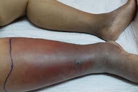
Cellulitis: diffuus erytheem, zwelling en warmte. Let op de demarkatielijn.
Onderscheid
| Erysipelas | Cellulitis | |
|---|---|---|
| Laag | Oppervlakkig (dermis) | Dieper (subcutis) |
| Begrenzing | Scherp afgegrensd, verheven rand | Diffuus, onscherp |
| Verwekker | Meestal Streptococcus | Staphylococcus én Streptococcus |
| Locatie | Vaak gelaat, onderbeen | Vaak onderbeen |
Kliniek
- Erytheem, warmte, zwelling, pijn
- Koorts, malaise (systemische symptomen)
- Porte d'entrée: wond, tinea pedis, ulcus
- Discrepant veel pijn t.o.v. huidbeeld - belangrijkste vroege teken!
- Crepitatie (gasvorming)
- Bullae, necrose, snel progressief
- Hemodynamische instabiliteit
Epidemiologisch: toename invasieve Groep A Streptokok (GAS) infecties. Vroege herkenning en chirurgisch debridement zijn levensreddend.
Behandeling
| Indicatie | Middel | Duur |
|---|---|---|
| 1e keus | Flucloxacilline 500mg 4dd | 7 dagen (mild) tot 14 dagen (ernstig) |
| Penicilline-allergie | Clindamycine 300-450mg 3dd | 7-14 dagen |
| MRSA-risico | Cotrimoxazol of Doxycycline | 7-14 dagen |
Aanvullend:
- Rust, elevatie aangedane extremiteit
- Behandel porte d'entrée (tinea pedis!)
- Bij recidief: profylaxe overwegen
Verwekker: Ancylostoma braziliense
Transmissie: Contact met gecontamineerd zand (stranden!)
Kliniek: Intensief jeukende, serpigineuze (kronkelende) lijnen
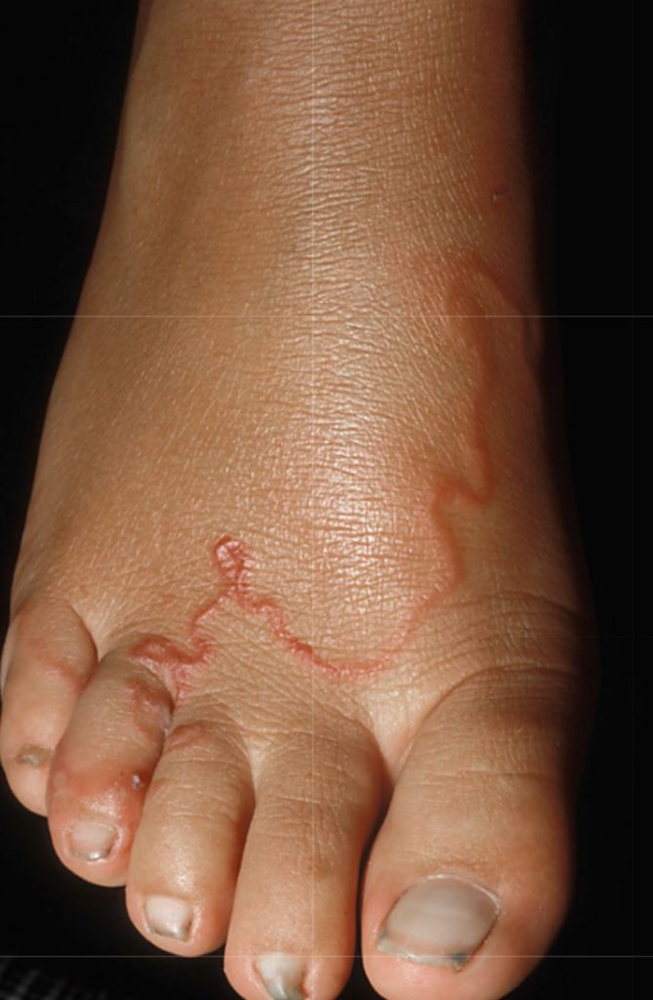
Cutaneous Larva Migrans met karakteristieke serpigineuze, jeukende track (~1 cm/dag)
Behandeling
Ivermectine 200 µg/kg eenmalig
OF Albendazol 400mg 1dd 3 dagen
Verwekker: Strongyloides stercoralis (rondworm)
Transmissie: Percutaan (lopen op blote voeten), auto-infectie mogelijk!

Larva currens - karakteristieke snel bewegende urticariële lijn (5-10 cm/uur)
Epidemiologie & Prevalentie
- Endemisch: Tropisch/subtropisch (Suriname, Indonesië, Sub-Sahara Afrika, Zuid-Amerika)
- Ook: Zuid-Europa (Spanje, Italië), Zuidoost-Azië
- Persistentie: Kan 45 jaar na expositie nog actief zijn! (Birma railroad studie: 33% ex-POWs geïnfecteerd)
- Risico: Auto-infectie → kan levenslang persisteren zonder re-expositie
- Trigger: Immunosuppressie (steroïden, TNF-α blokkers, HTLV-1 co-infectie, chemotherapie)
- Mechanisme: Massale auto-infectie → invasie darmen, longen, hersenen
- Kliniek: Sepsis (E. coli meningitis!), respiratoir falen, ileus, shock
- Mortaliteit: Tot 87% zonder behandeling
- Preventie: ALTIJD screenen voor Strongyloides vóór immunosuppressie bij reisanamnese!
Klinische Presentatie
| Stadium | Kliniek | Timing |
|---|---|---|
| Acute infectie |
• Penetratie: jeukende maculo-papuleuze rash voeten • Migratie longen: Löffler syndroom (hoest, dyspnoe, eosinofilie) • GI: buikpijn, diarree, misselijkheid |
Dagen-weken na expositie |
| Chronische infectie |
• Vaak asymptomatisch of milde GI-klachten • Intermittente diarree, obstipatie • Eosinofilie (niet altijd!) • Larva currens (zie onder) |
Jaren-decennia |
| Hyperinfectie |
• Massale GI/pulmonale invasie • Gram-negatieve sepsis/meningitis • Respiratoir falen, ARDS • Ileus, GI bloeding |
Bij immunosuppressie |
Larva Currens - Pathognomonisch!
- Snelheid: 5-10 cm/uur (veel sneller dan CLM!)
- Duratie: Enkele uren - dagen aanwezig, dan verdwijnen
- Lokalisatie: Perianaal, billen, bovenbenen, romp (auto-infectie)
- Sensatie: Intense jeuk, kruipend gevoel
- DD: CLM (veel langzamer: ~1 cm/dag), urticaria
Diagnostiek
| Test | Sensitiviteit | Opmerkingen |
|---|---|---|
| Feces (directe microscopie) | 30-50% (1× feces) | • Larven (geen eieren!) • 3× feces verhoogt sensitiviteit • Vaak negatief bij chronische infectie |
| Feces (Baermann methode) | ~70% | • Concentratie-techniek • Betere yield dan direct onderzoek |
| Serologie (ELISA) | 85-95% |
• Test van keuze bij verdenking! • O.D. waarde >0.5-0.7 positief • Kruisreactiviteit met andere helminten mogelijk • Blijft positief na behandeling (maanden-jaren) |
| Eosinofilie | 60-80% | • Niet altijd aanwezig! • Bij hyperinfectie vaak geen eosinofilie (immunosuppressie) |
- Anamnese van verblijf endemisch gebied
- Patiënt die immunosuppressie gaat starten
- → Doe altijd serologie!
Behandeling
Eerste keus:
Ivermectine 200 µg/kg 1dd voor 2 dagen
OF (bij niet beschikbaar ivermectine):
Albendazol 400mg 2dd voor 7 dagen
Hyperinfectie syndroom:
Ivermectine 200 µg/kg 1dd totdat feces/sputum negatief (vaak weken!)
+ Albendazol 400mg 2dd (combinatietherapie)
+ Ondersteunende zorg (ICU), antibiotica voor secundaire bacteriële infecties
Controle:
- 3× feces na 2-4 weken (moet negatief zijn)
- Serologie blijft positief → niet bruikbaar voor cure assessment
- Bij persisterende symptomen: herhaal kuur
- Denk aan Strongyloides bij:
- Reisanamnese (ook decennia geleden!) + onverklaarde eosinofilie
- Recidiverende urticaria/larva currens
- Voor start immunosuppressie (steroïden, biologicals)
- Onverklaarde gram-negatieve sepsis/meningitis bij immunosuppressie
- Larva currens snelheid is diagnostisch: 5-10 cm/uur vs CLM ~1 cm/dag
- Auto-infectie mechanisme maakt levenslange persistentie mogelijk zonder re-expositie
- Bij twijfel: behandel empirisch (veilig, effectief, voorkomt hyperinfectie)
Verwekker: Leishmania spp.
Kliniek: Pijnloze papel → nodulus → ulcus met opgeworpen rand

Cutane Leishmaniasis met typisch pijnloos ulcus en opgeworpen rand
Diagnose: Biopt (amastigoten), kweek, PCR
Behandeling Cutane Leishmaniasis (NVP Richtlijn 2020)
Lokale therapie (kleine laesies, Oude Wereld)
| Middel | Volwassenen ≥18 jaar | Kinderen |
|---|---|---|
| Intralesionaal: Natriumstibogluconaat | 0.5-2 ml per laesie, wekelijks 3-5 kuren | Zelfde dosering |
| Cryotherapie | 15-20 sec vloeibare stikstof, 2-3 wekelijkse sessies | Zelfde dosering |
Systemische therapie (grote/multipele laesies, Nieuwe Wereld, L. tropica)
| Middel | Volwassenen ≥18 jaar | Kinderen |
|---|---|---|
| 1e keus: Liposomaal amfotericine B | 3 mg/kg/dag dag 1-5, +dag 10 | Zelfde dosering |
| Alternatief: Miltefosine | 2.5 mg/kg/dag (max 150mg) 28 dagen | ≥12 jaar: 2.5 mg/kg/dag 28 dagen |
| Alternatief: Natriumstibogluconaat IV | 20 mg Sb/kg/dag 20 dagen | 20 mg Sb/kg/dag 20 dagen |
NB: Keuze afhankelijk van Leishmania species en geografische herkomst.
Definitie: Infestatie van levend weefsel door vliegenlarven (maden)

Furunculaire myiasis met centrale opening (ademgat larve)
Typen Myiasis
| Type | Verwekker | Geografische distributie | Kliniek |
|---|---|---|---|
| Furunculaire myiasis (subcutaan) |
• Cordylobia anthropophaga (tumbu fly) • Dermatobia hominis (botfly) • Wohlfahrtia spp. |
• Cordylobia: Sub-Sahara Afrika • Dermatobia: Midden/Zuid-Amerika • Wohlfahrtia: Rusland, Canada |
• Pijnlijke furunkel-achtige nodulus • Centrale opening (ademgat larve) • Bewegende/kruipende sensatie • Serosanguineus vocht |
| Wond myiasis |
• Diverse species (Calliphoridae, Sarcophagidae) • Lucilia spp. (greenbottle) • Cochliomyia spp. (screwworm) |
Wereldwijd (vooral tropisch/subtropisch) |
• Larven in open wond, ulcus, necrotisch weefsel • Kan therapeutisch (maggot debridement therapy) • Malodoreus, necrose, pijn • Risico: secundaire bacteriële infectie |
| Migratoire/creeping myiasis |
• Gasterophilus spp. (horse botfly) • Hypoderma spp. (cattle warble) |
• Gasterophilus: Wereldwijd (paarden contact) • Hypoderma: Europa, Noord-Amerika |
• Serpigineuze, jeukende track • Migreert enkele cm/dag • DD: CLM (CLM sneller en meer kronkelig) |
| Cavitaire myiasis | Diverse species | Wereldwijd |
• Neus, oor, oog, genitaal • Ernstig: destructie weefsel • Risico: intracraniale invasie (sinussen) |
Levenscyclus
- Cordylobia: Eieren gelegd op droge was/kleding → larven penetreren huid bij dragen
- Dermatobia: Eieren op mosquito → overgedragen bij steek
- Larve groeit subcutaan 5-10 weken
- Ademgat naar buiten (centrale opening)
- Larve verlaat huid spontaan om te verpoppen in grond
Diagnostiek
- Furunculaire: Klinischbeeld + reisanamnese (karakteristiek: opening + beweging)
- Visualisatie: Larve soms zichtbaar in opening (vooral na vaseline/afsluiting)
- Extractie: Morfologie larve bevestigt diagnose
Behandeling
Furunculaire myiasis:
Methode 1: Occlusie + extractie (voorkeur)
- Bedek opening met vaseline/petroleum jelly, bacon, tape (afsluiten zuurstof)
- Na 3-24u: larve migreert naar opening (zoekt zuurstof)
- Verwijder met pincet (voorzichtig, larve intact verwijderen)
- Inspecteer wond: alle delen verwijderd? (achtergebleven delen → infectie/granuloom)
Methode 2: Chirurgische extractie
- Lokaal anesthesie
- Verbreed opening (kleine incisie)
- Extraheer larve met pincet
- Inspecteer caviteit, spoelen
Methode 3: Ivermectine (off-label)
Ivermectine 200 µg/kg eenmalig
- Doodt larve → spontane ejectie of resorptie
- Nuttig bij multiple lesies of moeilijk bereikbare locaties
- Cave: dode larve kan granulomateuze reactie geven
Wond myiasis:
- Mechanische verwijdering alle larven
- Debridement necrotisch weefsel
- Wondverzorging + antibiotica bij secundaire infectie
- Cave: Sommige species therapeutisch bruikbaar (maggot debridement therapy met steriele Lucilia sericata)
Na extractie (alle types):
- Antibiotische zalf (preventie secundaire infectie)
- Tetanusprofylaxe indien geïndiceerd
- Follow-up: genezing wond, geen retentie larvaal materiaal
- Strijk was/kleding met hete strijkbout (doodt eieren)
- Droog kleding binnenshuis of in directe zon
- Vermijd drogen in schaduw waar vliegen bij kunnen
- Furunkel + reisanamnese + beweging: Denk aan myiasis!
- Cordylobia: Vaak multiple lesies (meerdere larven tegelijk)
- Dermatobia: Meestal solitaire lesie, zeer pijnlijk
- Ademgat: Pathognomonisch voor furunculaire myiasis (larve moet ademen!)
- Spontane resolutie: Mogelijk (larve verlaat na 5-10 weken), maar extractie geeft snellere symptoomverlichting
- Cave: Forceren bij extractie kan larve breken → granuloom/infectie
Verwekker: Tunga penetrans (sandflea, jigger, chigoe flea)
Geografische distributie: Tropisch Afrika, Midden/Zuid-Amerika, Caraïben, India
Transmissie: Zandige stranden, vochtige aarde - vlo penetreert huid (meestal voeten)
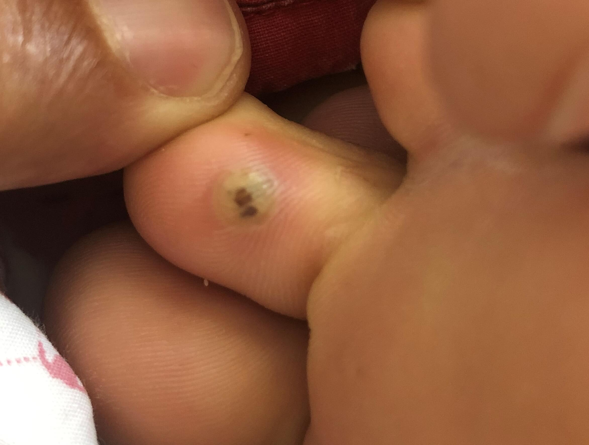
Tungiasis met karakteristieke witte nodulus en centrale zwarte dot (achtereind vlo)
Levenscyclus & Pathofysiologie
- Bevruchte vrouwtjesvlo penetreert epidermis (1-2 mm diep)
- Groeit tot 1 cm (gevuld met eieren) - neosoma formatie
- Achtereind blijft uitsteken (zwarte dot - ademgat + eieren afzetten)
- Na 2-3 weken: eieren afgezet, vlo sterft, laesie geneest spontaan
- Cave: Secundaire bacteriële infectie frequent!
Kliniek
| Stadium | Klinische presentatie | Timing |
|---|---|---|
| Penetratie |
• Lichte jeuk/prikkeling • Kleine rode macula |
Dag 0-1 |
| Groei neosoma |
• Witte nodulus (5-10 mm) • Centrale zwarte dot (achtereind vlo) • Halo van erytheem • Pijn, jeuk, branderig gevoel |
Dag 1-7 |
| Eieren afzetten |
• Maximale grootte (tot 1 cm) • Intense jeuk/pijn • Moeilijk lopen (bij voetzool) |
Dag 7-14 |
| Post-expulsie |
• Kraterachtig ulcus • Spontane genezing (weken) • Risico: superinfectie, tetanus |
Dag 14-21+ |
Lokalisatie
- Voeten (95%): Teenranden (vooral periunguaal!), voetzool, interdigitaal
- Handen: Vingers, periunguale regio
- Zelden: enkels, benen, ellebogen
- Cave: Subunguaal = moeilijk te behandelen, risico nageldestructie
Complicaties
- Secundaire bacteriële infectie: Staphylococcus, Streptococcus → cellulitis, abces
- Tetanus: Clostridium tetani via laesie (frequent in endemische gebieden!)
- Gangreen: Bij diabetes/PVD → amputatie
- Nageldestructie: Bij subunguaal locatie
- Tungiasis-podoconiose: Chronisch lymfoedeem voeten bij recidiverende infestaties
- Osteomyelitis: Invasie bot (zeldzaam, bij verwaarloosd)
Diagnostiek
- Klinisch: Karakteristiek beeld (witte nodulus + zwarte centrale dot)
- Dermatoscopie: Bruin-zwarte ring (achtereind vlo) + witte vlo-body
- Reisanamnese: Blootsvoets lopen op strand/zandige grond
- Microscopie: Na extractie - identificatie Tunga penetrans
Behandeling
Mechanische extractie (voorkeur):
- Desinfecteer gebied (alcohol, jodium)
- Lokaal anesthesie (optioneel, bij pijnlijk)
- Steriliseer naald/pincet
- Verwijder vlo intact met steriele naald/curette
- Open lesie voorzichtig
- Extraheer volledige vlo (inclusief achtereind)
- Inspecteer: vlo volledig verwijderd?
- Desinfecteer wond na extractie
- Antibiotische zalf (preventie superinfectie)
Medicamenteus (adjuvant of bij multiple lesies):
Ivermectine 200 µg/kg eenmalig (herhaal na 1-2 weken)
- Doodt vlo in situ
- Nuttig bij multiple/moeilijk bereikbare lesies
- Cave: dode vlo moet nog verwijderd worden (extractie of spontane expulsie)
OF (topicaal, off-label):
Petrolatum/zalf afsluiten → verstikking vlo (minder effectief dan extractie)
Tetanusprofylaxe:
- ESSENTIEEL - controleer vaccinatiestatus
- Booster indien >5-10 jaar geleden
- Bij niet-gevaccineerd: tetanusimmunoglobuline + actieve vaccinatie
Antibiotica (bij superinfectie):
Flucloxacilline 500mg 4dd 7d OF Co-amoxiclav 500/125mg 3dd 7d
Follow-up:
- Wondgenezing (7-14 dagen)
- Check tekenen infectie (roodheid, warmte, pus)
- Bij diabetes/immunocompromitteerd: nauwlettende follow-up
- Schoeisel: Altijd schoenen dragen op stranden/zandige grond
- Insecticide: DEET/permethrin op voeten/schoenen
- Accommodatie: Vloeren bedekken, insecticide spray
- Dagelijkse inspectie: Voeten controleren bij verblijf endemisch gebied
- Zwarte centrale dot = pathognomonisch (achtereind vlo)
- Periunguaal/subunguaal = typische lokalisatie (DD: melanoom, wrat)
- "White halo black center" - klassiek beschreven beeld
- Multiple lesies frequent (patiënt loopt blootsvoets → multiple vlooien)
- Tetanusprofylaxe NOOIT vergeten! (endemische gebieden = vaak lage vaccinatiegraad)
- Chronische tungiasis (arme gemeenschappen zonder schoenen) → lymfoedeem, invaliditeit
- DD periunguaal: melanoom, verruca, paronychia, glomustumor
Definitie: Verlengde/overdreven huidreactie op insectenbeten, persisteert weken-maanden na reis

Persisterende insectenbeten met papels en excoriaties op blootgestelde huid
Verwekkers
- Muggen (culicosis): Aedes, Culex, Anopheles
- Bedwantsen: Cimex lectularius
- Vlooien: Pulex irritans, kattenvlo (Ctenocephalides felis)
- Mijten: Diverse species
- Andere: Horseflies, sandflies
Pathofysiologie
- Type IV hypersensitiviteit: T-cel gemedieerde reactie op speekselantigenen
- Sensibilisatie bij herhaalde expositie (tijdens reis)
- Bij terugkeer: persisterende inflammatoire reactie (zonder nieuwe beten!)
- Kan weken-maanden aanhouden
Kliniek
- Primaire laesies:
- Erythemateuze papels (3-10 mm)
- Urticariële plaque
- Centrale punctum (steekplaats) vaak zichtbaar
- Bij persisteren:
- Papulovesiculeuze/bulleuze laesies
- Excoriaties (krabben)
- Hyperpigmentatie post-inflammatoir
- Prurigo nodularis-achtige noduli
- Distributie: Blootgestelde huid (armen, benen, nek, aangezicht)
- Symptomen: Intense jeuk (vooral 's nachts), branderig gevoel
Diagnostiek
- Anamnese: Recent verblijf tropisch gebied, insectenexpositie
- Klinisch beeld: Papels/noduli op blootgestelde huid
- Biopt (indien twijfel): Perivasculair lymfocytair infiltraat, eosinofilen
- DD: Scabies, folliculitis, prurigo nodularis, dermatitis herpetiformis
Behandeling
Topicaal (eerste lijn):
- Potente corticosteroïd: Betamethason crème 2dd 1-2 weken
- Antipruritisch: Menthol/polidocanol crème
- Bij infectie: Antibiotische zalf (fusidine zuur)
Systemisch (bij uitgebreid/refractair):
Antihistaminicum: Cetirizine 10mg 1dd of Desloratadine 5mg 1dd
Bij refractair:
Prednison 30-40mg 1dd gedurende 5-7 dagen (afbouwen)
Ondersteunend:
- Koude kompressen (jeukstilling)
- Vermijd krabben (nagels kort, handschoenen 's nachts)
- Emollientia (huidbarrière herstellen)
Prognose:
- Meestal spontane resolutie binnen weken-maanden
- Hyperpigmentatie kan maanden persisteren
- Frequent bij terugkeer uit tropisch gebied - geruststellen dat het vanzelf overgaat
- Geen nieuwe beten nodig voor persisteren (overgevoeligheid op eerdere beten)
- Distributie helpt DD: culicosis = blootgestelde huid, scabies = plooien/interdigitaal
- Bij bulleuze presentatie: denk ook aan bullous arthropod bite reaction (intens maar goedaardig)
Verwekker: Cimex lectularius (common bedbug), C. hemipterus (tropical bedbug)
Geografische distributie: Wereldwijd (toenemend, ook in Nederland!)
Transmissie: Nachtkelijke beten tijdens slaap (hotelproblemen, backpackers)

Bedwantsen beten met karakteristiek lineair "breakfast, lunch, dinner" patroon
Biologie
- Ovaal, plat, roodbruin insect (4-5 mm)
- Nachtactief - schuilt overdag in bedden, kieren, kasten
- Aangetrokken door CO₂ en lichaamswarmte
- Kunnen maanden zonder voedsel overleven
- Geen ziektetransmissie (in tegenstelling tot luizen/vlooien)
Kliniek
- Klassieke presentatie:
- Erythemateuze papels/urticaria (5-20 mm)
- "Breakfast, lunch, dinner" patroon: 3 beten op rij (lineair)
- Centrale hemorrhagische punctum mogelijk
- Intense jeuk (vooral 's nachts)
- Lokalisatie: Blootgestelde huid tijdens slaap (aangezicht, nek, armen, benen)
- Timing: Beten verschijnen binnen uren-dagen na expositie
- Variabiliteit:
- Sommigen: geen reactie (30-40%)
- Anderen: intense bulleuze reactie
Diagnostiek
- Klinisch: Lineair patroon beten + anamnese (hotel, hostel)
- Inspectie kamer:
- Bedwantsen in matrasnaden, bedframe
- Donkere vlekjes (ontlasting) op lakens
- Bloedvlekjes op beddengoed
- Zoete, muskusachtige geur (bij zware infestatie)
Behandeling Huidlaesies
Symptomatisch:
- Topicaal corticosteroïd: Hydrocortison 1% crème 2-3dd
- Oraal antihistaminicum: Cetirizine 10mg 's avonds (jeuk, slapen)
- Koude kompressen
Bij secundaire infectie:
Flucloxacilline 500mg 4dd 7d
Preventie nieuwe beten:
- Accommodatie: Verander van kamer/hotel
- Bagage: Inspecteer en was alle kleding (>60°C)
- Thuiskomst: Geen bagage op bed, direct wassen
- Professionele ongediertebestrijding bij thuisinfestatie
Prognose huidlaesies:
- Resolutie binnen 1-2 weken (zonder nieuwe beten)
- Hyperpigmentatie kan maanden persisteren
- Inspecteer hotelkamer bij aankomst (matras, bedframe, meubilair)
- Bagage niet op bed, gebruik bagagerek ver van bed
- Check reviews accommodatie (bedwantsen meldingen)
- Bij verdenking: meld receptie, wissel kamer
- "Breakfast, lunch, dinner" = klassiek patroon (3 lineaire beten)
- Bedwantsen zijn geen teken van slechte hygiëne (ook 5-sterren hotels!)
- Transmitteren geen ziektes (geruststellend voor patiënt)
- 30-40% van mensen reageert helemaal niet → reisgezellen kunnen asymptomatisch zijn
- Toenemend probleem wereldwijd door resistentie tegen pesticiden
- DD: scabies (plooien, intense jeuk), vlooienbeten (vooral benen/enkels)
Verwekker: Sarcoptes scabiei var. hominis (schurftmijt)
Transmissie: Huid-op-huid contact (langdurig!), seksueel contact, soms via beddengoed
Geografische distributie: Wereldwijd (niet specifiek tropisch, maar vaak opgelopen tijdens reizen)
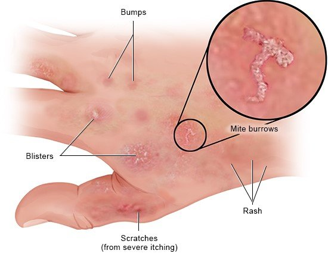
Scabies met karakteristieke gangetjes en excoriaties (intense jeuk!)
Levenscyclus & Pathofysiologie
- Bevruchte vrouwtjesmijt graaft gangetjes in stratum corneum (0.5-1 mm/dag)
- Legt 2-3 eieren per dag gedurende 4-6 weken
- Larven na 3-4 dagen, volwassen mijten na 10-14 dagen
- Incubatietijd: 3-6 weken bij primo-infectie (sensibilisatie!)
- Bij re-infectie: symptomen binnen 1-3 dagen (al gesensibiliseerd)
- Typisch aantal mijten: 10-15 (klassieke scabies)
Kliniek - Klassieke Scabies
- Kardinaal symptoom: Intense jeuk (erger 's nachts!) - door type IV overgevoeligheid op mijten/feces/eieren
- Primaire laesies:
- Gangetjes (cuniculi): Serpigineuze, draadachtige lijntjes (2-10 mm), grijs-bruin
- Kleine erythemateuze papels op gangetjes (mijt aan uiteinde)
- Secundaire laesies:
- Excoriaties (krabben)
- Eczematisatie
- Secundaire impetiginisatie (S. aureus, S. pyogenes)
- Prurigo-achtige noduli (vooral genitaal - persistent!
- Typische lokalisaties:
- Interdigitale ruimtes vingers/tenen (zeer frequent!)
- Polsplooien (flexorzijde)
- Ellebogen (extensor)
- Axillae
- Periumbilicaal
- Genitaal (♂: penis, scrotum - noduli!), mamillae (♀)
- Billen, bovenbenen
- Let op: Gezicht/rug meestal gespaard bij volwassenen!
Speciale Vormen
| Type | Kliniek | Risicopatiënten |
|---|---|---|
| Scabies crustosa (Noorse scabies) |
• Dikke, hyperkeratotische crusts • Miljoenen mijten! (vs 10-15 normaal) • Zeer besmettelijk • Kan minimale jeuk (immunosuppressie) |
• Immunosuppressie (HIV, chemotherapie) • Ouderen, dementie • Neurologische aandoeningen • Down syndroom |
| Nodulaire scabies |
• Persisterende prurigineuze noduli (vooral genitaal/inguinaal) • Kunnen maanden na succesvolle behandeling persisteren • Overgevoeligheidsreactie (geen levende mijten meer!) |
Iedereen (vooral ♂ genitaal) |
| Scabies incognito |
• Atypische presentatie door voorbehandeling met corticosteroïden • Minder jeuk, meer uitgebreid, moeilijker te diagnosticeren |
Patiënten met voorbehandeling topische corticosteroïden |
Diagnostiek
- Klinisch (vaak voldoende):
- Intense jeuk (erger 's nachts)
- Typische distributie (interdigitaal, polsen, genitaal)
- Meerdere gezinsleden/partners aangedaan
- Microscopie (bevestiging):
- Schraapsel van gangetje/papel met scalpel #15 (+ druppel olie/KOH)
- Identificatie: mijt, eieren, feces (scybala)
- Sensitiviteit: 50-70% (negatief sluit niet uit!)
- Dermatoscopie: "Deltaglider sign" (driehoekig bruine structuur = mijt)
- Biopt (zelden nodig): Bij nodulaire scabies (DD lymfoom)
Behandeling Scabiës (NVP Richtlijn 2020)
| Middel | Volwassenen ≥18 jaar | Kinderen |
|---|---|---|
| 1e keus: Permethrin 5% crème | Hele lichaam nek-tenen, 8-12u inwerken, herhaal na 7-14d | Idem (≥2 mnd) <2 jaar: ook hoofd/gezicht |
| Alternatief: Ivermectine oraal | 200 µg/kg eenmalig, herhaal na 1-2 weken | ≥15 kg: 200 µg/kg eenmalig, herhaal na 1-2 weken |
Toepassing Permethrin:
- Toepassing: Hele lichaam nek tot tenen (incl. onder nagels!)
- Bij kinderen <2 jaar: ook gezicht/hoofdhuid
- 8-12 uur laten inwerken (overnight)
- Daarna afspoelen
- Herhaal na 7-14 dagen (doodt eieren niet!)
Indicaties Ivermectine oraal:
- Scabies crustosa, uitgebreide scabies, therapiefalen permethrin, uitbraken (verpleeghuizen)
- Voordeel: systemisch, gemakkelijk toe te dienen
- Cave: niet bij zwangerschap, kinderen <15 kg
Bij scabies crustosa (Noorse scabies):
- Combinatie: Ivermectine oraal (dag 1, 2, 8, 9, 15) + permethrin dagelijks eerste week, dan 2× per week
- Keratolytica (salicylzuur) voor crusts
- Isolatie! (zeer besmettelijk)
Nodulaire scabies (post-scabies nodules):
- Potente corticosteroïd crème 2dd
- Intraleasionale corticosteroïden (persisterende noduli)
- Reassurance: geen actieve infectie meer, zal verdwijnen (weken-maanden)
Jeukbehandeling (symptomatisch):
- Antihistaminica: Hydroxyzine 25mg voor het slapen
- Emollientia
- Let op: jeuk kan 2-4 weken persisteren na succesvolle behandeling! (dode mijten/feces)
Secundaire bacteriële infectie:
Flucloxacilline 500mg 4dd 7d
ESSENTIEEL - Contactpersonen & omgeving:
- Behandel gelijktijdig: Alle huisgenoten + seksuele contacten (ook als asymptomatisch!)
- Kleding/beddengoed:
- Was op >60°C
- OF plastic zak, 3 dagen wachten (mijten sterven zonder host)
- Niet-wasbare items: plastic zak 1 week
- Stofzuigen vloeren/meubels
Therapie-evaluatie:
- Na 4 weken: jeuk moet afgenomen zijn
- Bij persisterende symptomen >4 weken:
- Therapiefalen? → herhaal behandeling
- Re-infectie? → check contactpersonen
- Post-scabies noduli? → geruststellen
- Secundaire impetiginisatie: Frequent (S. aureus, S. pyogenes)
- Post-streptococcen glomerulonefritis: (vooral tropisch - nephritogene Strep strains)
- Sepsis: Bij scabies crustosa + bacteriële superinfectie
- Uitbraken: Verpleeghuizen, gevangenissen (snel handelen!)
- "Jeuk die erger is 's nachts" = zeer suggestief voor scabies
- Interdigitale ruimtes = altijd checken! (zeer frequent)
- Genitale noduli bij ♂ = zeer karakteristiek (kunnen maanden blijven!)
- Incubatieperiode 3-6 weken → symptomen kunnen pas weken na transmissie beginnen
- Negatief schraapsel sluit scabies NIET uit (sensitiviteit 50-70%)
- Bij twijfel: behandel empirisch (veilig, voordeel > risico)
- Gezin behandelen = cruciaal (anders ping-pong re-infectie)
- Persisterende jeuk na behandeling (tot 4 weken) is normaal → geruststellen!
- Scabies crustosa: denk aan immunosuppressie, HIV testen
Verwekkers: Diverse Cnidaria species (kwallen, zeenemonen, Portugese man o' war)
Geografische distributie: Wereldwijd (vooral tropische/subtropische zeeën)
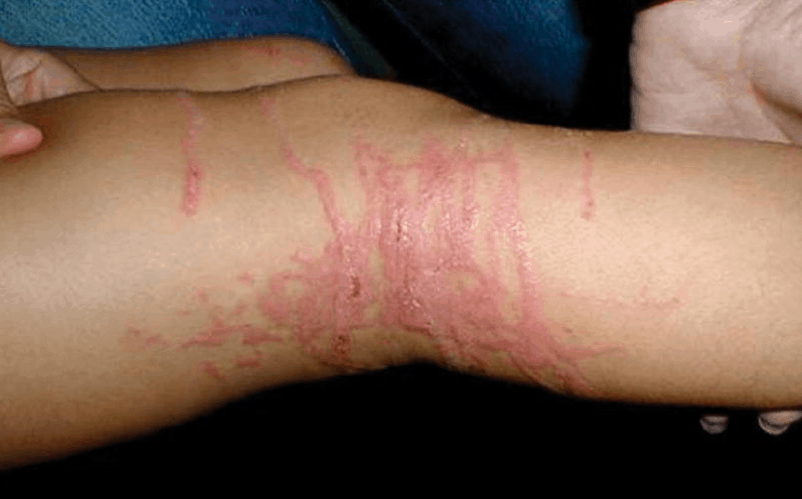
Kwallensteek met karakteristieke lineaire striemen (tentakel patroon)
Belangrijkste Species
| Species | Locatie | Ernst | Kliniek |
|---|---|---|---|
| Box jellyfish (Chironex fleckeri) |
Australië, Indo-Pacific | LETAAL |
• Intense pijn • Lineaire striemen • Cardiotoxiciteit → arrest • Mortaliteit hoog zonder antivenin |
| Irukandji jellyfish (Carukia barnesi) |
Australië, Indo-Pacific | Ernstig |
• Initieel milde sting • Na 5-40 min: Irukandji syndroom (hypertensie, tachycardie, pulmonaal oedeem) |
| Portuguese man o' war (Physalia physalis) |
Atlantisch, Pacific, Indisch | Matig |
• Intense pijn, lineaire welts • Systemisch: misselijkheid, hoofdpijn • Zeldzaam: anafylaxie |
| Zeekwal (meeste species) | Wereldwijd | Mild |
• Lokale pijn, erytheem • Urticaria • Zelfbeperkend |
Pathofysiologie
- Gespecialiseerde steekcellen met opgespiraliseerde draad + gif
- Trigger bij contact → explosieve ejectie draad in huid (seconds!)
- Gif bevat: proteases, fosfolipases, vasoactieve peptiden
- Effect: lokale weefselschade, pijn, systemische toxiciteit (ernstige species)
- Cave: Nematocysten blijven actief op strand (dode kwallen!) en op tentakels op huid
Kliniek
- Lokale symptomen:
- Directe intense pijn (seconds na contact)
- Lineaire erythemateuze striemen (patroon tentakels)
- Urticaria, papels, vesikels
- Bij ernstige species: necrose, ulceratie
- Systemische symptomen (ernstiger species):
- Misselijkheid, braken, hoofdpijn
- Spierkrampen, malaise
- Dyspnoe, bronchospasme
- Ernstig: Hypotensie, aritmieën, cardiale arrest
- Delayed reacties:
- Lokale recidiverende dermatitis (weken-maanden)
- Hyperpigmentatie, littekenvorming
Behandeling - First Aid (KRITIEK!)
⚠️ NIET DOEN (activeert nematocysten!):
- GEEN zoet water (osmotische trigger)
- GEEN wrijven/schuren (mechanische trigger)
- GEEN urine (mythe! kan activeren)
- GEEN alcohol (activeert nematocysten)
Stap 1: Verwijder tentakels (zonder activatie!):
- Spoel met zeewater (NIET zoet water!)
- Verwijder tentakels voorzichtig met pincet/stick (NIET met blote handen)
- Box jellyfish: Overgiet met azijn (acetic acid 4-6%) 30 seconden (inactiveert nematocysten)
- Andere species: Azijn controversieel (kan activeren bij sommige species) → prefereer zeewater
Stap 2: Pijnstilling:
- Heet water immersie (eerste keus):
- 40-45°C (zo heet als patiënt verdraagt, niet verbranden!)
- 30-90 minuten
- Thermolabiele toxines → pijnverlichting
- OF cold packs (ook effectief, minder evidenc dan heet water)
- Analgesie systemisch: Paracetamol, NSAIDs, opiaten bij ernstige pijn
- Topicaal: Lidocaïne gel (tijdelijke pijnverlichting)
Stap 3: Verdere behandeling:
- Milde stings:
- Topicale corticosteroïd (hydrocortison 1%)
- Oraal antihistaminicum bij jeuk
- Emollientia
- Ernstige stings (Box jellyfish, Irukandji):
- Antivenin (indien beschikbaar - Box jellyfish)
- IV toegang, monitoring vitale parameters
- Behandel aritmieën, hypotensie (resuscitatie)
- Ziekenhuisopname, ICU indien instabiel
- Anafylaxie: Adrenaline 0.3-0.5mg IM (EpiPen)
Delayed reacties:
- Recidiverende dermatitis: Potente corticosteroïd crème
- Hyperpigmentatie: Zonnebescherming, tijd
- Vermijd zwemmen tijdens kwallenperiode (lokale waarschuwingen)
- Protective clothing: Wetsuit, lycra suit
- Stinger nets: Zwem binnen afgeschermde gebieden (Australië)
- Check strand voor aangespoelde kwallen (ook dood = gevaarlijk!)
- Bij onbekende wateren: informeer lokaal over risico's
- Lineair patroon welts = typisch (tentakels)
- Azijn: ALLEEN voor Box jellyfish! Bij andere species controversieel
- Urine myth: Populaire misvatting, kan nematocysten activeren → NIET doen
- Heet water immersie = evidence-based eerste keus pijnbestrijding
- Irukandji syndroom: Delayed presentatie (30-40 min), ernstige systemische symptomen
- Dode kwallen op strand kunnen nog steken (nematocysten blijven actief!)
- Bij systemische symptomen: altijd ziekenhuisopname/observatie (risico deterioratie)
Definitie: Obstructie zweetklieruitgangsgangen → zweetretentie → inflammatoire reactie
Risicofactoren: Hitte, hoge luchtvochtigheid, occlusieve kleding, immobiliteit, koorts
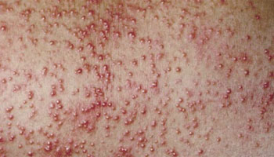
Miliaria rubra ("prickly heat") met erythemateuze papels en vesikels
Typen Miliaria
| Type | Niveau obstructie | Kliniek | Ernst |
|---|---|---|---|
| Miliaria crystallina | Stratum corneum (zeer oppervlakkig) |
• Kleine (1-2 mm) heldere vesikels • "Dauwdruppels" op huid • Geen erytheem • Geen jeuk/pijn • Fragiel (barsten gemakkelijk) |
Mild Zelfbeperkend |
| Miliaria rubra ("prickly heat") |
Dieper: epidermis (intraepidermaal) |
• Erythemateuze papels/vesikels (2-4 mm) • Intense jeuk! • Prikkelend/branderig gevoel • Rond zweetklieren • Kan conflueren |
Matig Meest frequent type |
| Miliaria profunda | Dermaal-epidermale junctie |
• Huidkleurige papels (1-3 mm) • Geen vesikels (te diep) • Minimale jeuk • Gevolg recidiverende miliaria rubra • Vooral tropisch klimaat |
Matig Cave: thermoregulatoire stoornis mogelijk! |
| Miliaria pustulosa | Zoals miliaria rubra + secundaire infectie |
• Pustels ipv vesikels • Secundaire bakteriële kolonisatie (S. aureus) • Meer pijnlijk |
Matig-ernstig Vereist antibiotica |
Lokalisatie
- Typisch: Romp, nek, huidplooien (axillae, lies)
- Bedekte/occlusieve gebieden (onder kleding, rugzak)
- Bij pasgeborenen: Ook gezicht, hoofdhuid mogelijk
Pathofysiologie
- Obstructie zweetkliergang (keratinenplug, bacterieel biofilm)
- Zweet accumuleert onder obstructie
- Rupture zweetkliergang → zweet lekt in omliggende huid
- Inflammatoire reactie → vesikels/papels
- Bij herhaaldelijke episodes: diepere obstructie → miliaria profunda
Diagnostiek
- Klinisch: Typisch beeld + anamnese (hitte-expositie, tropisch klimaat)
- DD:
- Folliculitis (haarfollikel-geassocieerd, pustels)
- Candidiasis (plooien, satellieten papels)
- Contactdermatitis
- Virale exanthemen
Behandeling
Primair: Preventie/omgevingsmaatregelen (ESSENTIEEL!):
- Koeling:
- Verplaats naar gekoelde omgeving (airco!)
- Koude douche/bad
- Ventilator
- Kleding:
- Luchtige, losse katoenen kleding
- Vermijd synthetische, occlusieve stoffen
- Regelmatig verschonen (nat van zweet)
- Huidverzorging:
- Frequent koel douchen
- Zachtjes drogen (niet wrijven)
- Huid droog houden
Miliaria crystallina:
- Meestal geen behandeling nodig
- Spontane resolutie binnen dagen (bij koeling)
Miliaria rubra:
- Topicaal:
- Calamine lotion (jeukstillend, drogend)
- Menthol/camphor crème (verkoelend)
- Milde corticosteroïd: Hydrocortison 1% crème 2dd (korte termijn, bij intense jeuk)
- Systemisch: Antihistaminica bij ernstige jeuk (cetirizine 10mg 1dd)
Miliaria pustulosa:
Flucloxacilline 500mg 4dd 7d (bij verdenking S. aureus superinfectie)
OF topicaal: Fusidine zuur crème 2-3dd
Miliaria profunda:
- Koeling is cruciaal
- Vermijd verdere hittewerven-expositie (risico anhidrose → heat stroke!)
- Cave: Bij uitgebreide miliaria profunda → verminderd zweten → thermoregulatoire problemen
Prognose:
- Resolutie binnen dagen-weken bij adequate koeling
- Recidief frequent bij opnieuw hitte-expositie
- Acclimatisatie geleidelijk (2-3 weken)
- Airconditioning gebruiken
- Katoenen, luchtige kleding
- Frequent douchen, huid droog houden
- Vermijd intensieve inspanning tijdens heetste deel van de dag
- Miliaria crystallina: "Dauwdruppels" - fragiele heldere blaasjes zonder erytheem
- Miliaria rubra: "Prickly heat" - intense jeuk is karakteristiek
- Miliaria profunda: Risico heat stroke bij uitgebreid (verminderd zweten!)
- Koeling + droge huid = basisbehandeling voor alle types
- Frequent bij niet-geacclimatiseerde reizigers in tropisch klimaat
- Bij pasgeborenen/infants: vaak miliaria crystallina (immature zweetklieren)
- Corticosteroïden: alleen kort (kunnen zweet klieren verder blokkeren)
Definitie: Abnormale huidreactie op blootstelling aan UV-straling (zonlicht) +/- fotosensibiliserende stof
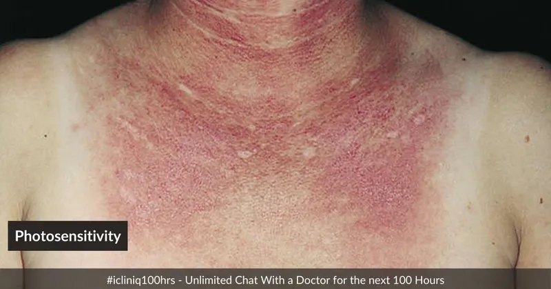
Phototoxische reactie met scherpe demarcatie tussen UV-blootgestelde en bedekte huid
Phototoxic vs Photoallergic - Vergelijking
| Kenmerk | Phototoxic | Photoallergic |
|---|---|---|
| Mechanisme |
• Directe weefselschade • UV + stof → reactieve oxygen species • Niet-immunologisch |
• Immunologisch (Type IV hypersensitiviteit) • UV + stof → fotoantigeen • T-cel gemedieerd |
| Incidentie | Frequent (iedereen bij voldoende dosis) | Zeldzaam (alleen bij gesensibiliseerde personen) |
| Dosis-relatie | Ja - dosis-afhankelijk | Nee - kan bij minimale dosis |
| Eerste expositie | Kan bij eerste expositie | Vereist eerdere sensibilisatie (10-14 dagen) |
| Onset | Minuten-uren | 24-72 uur (delayed) |
| Kliniek |
• Exaggerated sunburn • Erytheem, oedeem • Kan bulleuze reactie • Scherpe demarcatie (alleen UV-blootgesteld) |
• Eczemateus • Erytheem, papels, vesikels • Jeuk++ • Kan uitbreiden buiten UV-gebied |
| Distributie | Strikt UV-blootgestelde huid | Vooral UV-blootgesteld, maar kan verspreiden |
| Hyperpigmentatie | Frequent | Zeldzaam |
| Patch test | Negatief | Positief (photopatch test) |
Belangrijkste Fotosensibiliserende Stoffen
| Categorie | Medicatie/Stof | Type reactie |
|---|---|---|
| Antibiotica |
• Tetracyclines (doxycycline!) • Fluoroquinolones (ciprofloxacine) • Sulfonamiden |
Phototoxic > photoallergic |
| NSAIDs |
• Ketoprofen (topicaal++) • Piroxicam • Diclofenac |
Photoallergic |
| Diuretica |
• Furosemide • Hydrochloorthiazide (thiaziden) |
Phototoxic |
| Antimalaria |
• Chloroquine • Hydroxychloroquine • Quinine |
Phototoxic |
| Antifungals |
• Griseofulvine • Voriconazole |
Phototoxic |
| Psychotropica |
• Fenothiazines (chloorpromazine) • Tricyclische antidepressiva |
Phototoxic |
| Dermatologica |
• Retinoïden (isotretinoïne, tretino ine) • Benzoylperoxide |
Phototoxic |
| Zonnebrandcrème |
• Oxybenzone • PABA esters • Octocrilene |
Photoallergic (paradox!) |
| Planten (Phyto-phototoxic) |
• Citrusvruchten (bergamot, limoen) • Vijgen • Wilde peterselie • Meadow grass |
Phototoxic (furocoumarins = psoralenen) |
Phyto-Phototoxische Dermatitis
- Berloque dermatitis: Citrusolie (bergamot in parfum) + zon → streaky hyperpigmentatie
- Lime disease (margarita photodermatitis): Limoen/citrus sap op handen + zon → striped bulla/hyperpigmentatie
- Mechanisme: Psoralenen (furocoumarins) in plantensap + UVA → phototoxic reactie
- Kliniek: Bizarre patronen (drupsels, handprints), erytheem → bullae → hyperpigmentatie (maanden!)
Diagnostiek
- Anamnese:
- Medicatie review (inclusief topicals, OTC, supplements)
- UV-expositie tijdsverloop
- Contact met planten/parfums
- Eerdere episodes
- Klinisch: Distributie (UV-blootgestelde vs bedekte gebieden)
- Photopatch testing: Bij verdenking photoallergic (patch + UV expositie)
Behandeling
Primair: Stop/vermijd fotosensibiliserende stof!
- Review medicatie - overweeg alternatief (overleg voorschrijver)
- Bij essentiële medicatie: strikte fotoprotectie
Acute fase:
- Koeling: Koude kompressen
- Topicale corticosteroïden:
- Potent: Betamethason 0.1% crème 2dd
- Bij gezicht: minder potent (hydrocortison 1%)
- Systemische corticosteroïden (bij ernstig):
Prednison 30-40mg 1dd gedurende 5-7 dagen - Analgesie: NSAIDs (cave: sommige NSAIDs zelf fotosensibilizerend!), paracetamol
- Bij bullae: Aseptisch prikken, intact laten, antibiotische zalf bij ruptuur
Ondersteunend:
- Emollientia
- Antihistaminica bij jeuk (vooral photoallergic)
Hyperpigmentatie (post-inflammatoir):
- Zonnebescherming (crucial - voorkomt verdere verergering)
- Tijd (kan maanden-jaren duren)
- Hydroquinone crème (off-label, beperkt effectief)
Preventie (bij voortgezet gebruik fotosensibiliserende medicatie):
- Zonnebescherming:
- Breed-spectrum SPF 50+ (UVA + UVB)
- Regelmatig herappliceren (q2h)
- Fysische blokkeren (zinc oxide, titanium dioxide)
- Gedrag:
- Vermijd zon 10:00-16:00
- Beschermende kleding (UPF 50+, lange mouwen, hoed)
- Schaduw zoeken
- Cave: Sommige zonnebrand ingredients zelf photoallergic!
- Doxycycline malaria profylaxe = frequent fotosensibilizerend!
- Waarschuw reizigers
- Strikte zonnebescherming
- Bij problemen: overweeg alternatief (atovaquon/proguanil, mefloquine)
- Chloroquine/hydroxychloroquine: ook fotosensibilizerend
- Quinolonen (traveler's diarree): fotosensibilizerend (azithromycin als alternatief)
- Phototoxic = exaggerated sunburn, Photoallergic = eczeem-achtig
- Doxycycline + tropische zon = klassieker bij reizigers (adviseer preventie!)
- "Margarita photodermatitis": Bizarre streaky patronen na citrus + zon
- Paradox: sommige zonnebrand ingredients zijn photoallergic (oxybenzone)
- Scherpe demarcatie zonblootgesteld vs bedekt = hint phototoxic
- Hyperpigmentatie na phototoxic kan maanden-jaren persisteren
- Altijd complete medicatie review inclusief topicals, OTC, supplements
Verwekkers: Rickettsia species (obligaat intracellulaire gram-negatieve bacteriën)
Transmissie: Tekenbe ten (diverse tekensoorten afhankelijk van species/regio)
Belangrijkste Rickettsia Species & Geografische Distributie
| Species | Ziekte | Geografische distributie | Teek vector |
|---|---|---|---|
| R. africae | African tick-bite fever (ATBF) | Sub-Sahara Afrika, Caraïben | Amblyomma spp. (bont tick) |
| R. conorii | Mediterranean spotted fever (boutonneuse koorts) | Mediterrane regio, Midden-Oosten, India | Rhipicephalus sanguineus (hondenteek) |
| R. rickettsii | Rocky Mountain spotted fever (RMSF) | Noord/Zuid-Amerika | Dermacentor spp. |
| R. typhi | Murine typhus (vlo-gedragen) | Wereldwijd (tropisch/subtropisch) | Rattenvlo (NIET teek!) |
| R. prowazekii | Epidemic typhus (louse-borne) | Hooglanden Oost-Afrika, Zuid-Amerika | Lichaamsluis (NIET teek!) |
| Orientia tsutsugamushi | Scrub typhus | Azië-Pacific (India, Zuidoost-Azië, Australië) | Trombiculid mijten |
Klassieke Klinische Triade
- Eschar (tache noire) - zwarte korst op plek tekenbeet
- Koorts - binnen 3-14 dagen na tekenbeet
- Exantheem - maculopapulair rash
Cave: Eschar NIET bij alle species! (R. rickettsii vaak zonder eschar)
Klinische Presentatie per Species
| Kenmerk | African tick-bite fever (R. africae) | Mediterranean SF (R. conorii) | Rocky Mountain SF (R. rickettsii) |
|---|---|---|---|
| Eschar | Frequent (50-100%) Vaak multipele eschars! |
Frequent (60-70%) "Tache noire" |
Zeldzaam (<10%) |
| Rash | Matig (40-50%) Macu lopapulair |
Frequent (90-100%) Maculo papulair |
Zeer frequent (90%) Maculopapulair → petechiae Palmoplantair++ |
| Regionale lymfadenopathie | Zeer frequent | Frequent | Variabel |
| Koorts | Matig (38-39°C) | Hoog (>39°C) | Zeer hoog (>40°C) |
| Ernst | Mild-matig Zelden ernstig |
Matig Kan ernstig |
ERNSTIG Mortaliteit 5-10% onbehandeld! |
| Bijzonderheden | • Meest frequente rickettsiosis bij Afrika-reizigers • Safari's, game parks |
• Hondencontact (hondenteek) • Zuid-Europa vakantie |
• Vasculitis → DIC, orgaanfalen • MEDISCHE URGENTIE |
Eschar (Tache Noire) - Pathognomonisch!
- Locatie: Plek tekenbeet (vaak verborgen: haargrens, oksels, lies, scrotum)
- Evolutie:
- Dag 1-3: Rode papel op beëtplaats
- Dag 3-7: Centrale necrose → zwarte korst (eschar)
- Omringd door erythemateuze halo
- Niet pijnlijk!
- Frequentie: Sterk afhankelijk van species (zie tabel)
Diagnostiek
- Klinisch (vaak voldoende bij verdenking):
- Anamnese: Tekenbeet + verblijf endemisch gebied (binnen 3 weken)
- Eschar + koorts + rash = sterk suggestief
- Start empirische behandeling NIET uitstellen voor diagnostiek!
- Laboratorium:
- Serologie (IFA): IgM/IgG (seroconversie 7-10 dagen!) - retrospectieve bevestiging
- PCR: Eschar biopt, bloed (vroege fase, vóór antibiotica) - beste test acute fase
- Thrombocytopenie, verhoogd CRP, transaminasen (niet-specifiek)
- DD eschar: Anthrax (malignant pustule - zwarte eschar maar pijnlijk!), tularemia, leishmaniasis, spider bite
Behandeling
Eerste keus (ALLE rickettsiosis):
Doxycycline 100mg 2dd voor 7 dagen
- Start onmiddellijk bij klinische verdenking (wacht NIET op laboratorium!)
- Ook bij kinderen <8 jaar en zwangeren (risico onbehandeld >> risico doxycycline)
- Klinische verbetering binnen 24-48u (defervescentie)
Alternatief (bij contra-indicatie doxycycline):
Azithromycin 500mg 1dd voor 3 dagen (minder effectief, alleen bij milde gevallen)
OF Chloramphenicol (historisch, nu zelden gebruikt)
Rocky Mountain SF (R. rickettsii) - URGENTIE!
- Start doxycycline ONMIDDELLIJK bij verdenking (mortaliteit stijgt met elke dag uitstel!)
- Ziekenhuisopname bij ernstige presentatie
- Ondersteunende zorg: IV vocht, monitoring orgaanfunctie
- Cave: Fluoroquinolones, beta-lactams, macroliden (behalve azithromycin) zijn NIET effectief!
Prognose:
- Meeste species: Goede prognose met behandeling, resolutie binnen week
- R. rickettsii: Ernstig zonder behandeling (mortaliteit 20-30% onbehandeld, <5% behandeld)
- Petechiae/purpura (vooral palmoplantair!)
- Zeer hoge koorts (>40°C)
- Meningismus, verwardheid (CNS betrokkenheid)
- Hypotensie, shock
- Anamnese: Noord/Zuid-Amerika
- → START DOXYCYCLINE ONMIDDELLIJK!
- Tekenbescherming: DEET, permethrin op kleding, lange broek/mouwen
- Tekencontrole: Dagelijks volledig lichaam controleren (ook verborgen plekken!)
- Tekenverwijdering: Zo snel mogelijk met pincet (risico transmissie stijgt na >24u)
- Geen profylaxe: Geen preventieve antibiotica na tekenbeet
- Eschar + koorts + rash + tekenbeet anamnese = rickettsiosis tot bewezen tegendeel
- African tick-bite fever (R. africae): Meest frequente bij safari's, vaak multiple eschars
- Palmoplantaire petechiae: Denk aan RMSF (R. rickettsii) → URGENTIE!
- "Doxycycline test": Snelle defervescentie binnen 24-48u bevestigt diagnose
- Eschar vaak op verborgen lokaties → volledig lichaamsonderzoek! (genitaal, haargrens, oksels)
- Serology seroconvert laat (7-10 dagen) → niet bruikbaar acute fase
- Start doxycycline empirisch bij verdenking - wacht NIET op labbevestiging
- R. rickettsii zonder eschar + geen rash in eerste dagen → gemakkelijk gemist!
Definitie: Bacteriële infectie interdigitale ruimtes voeten door maceratie, vochtigheid en slechte hygiëne
Verwekkers: Pseudomonas aeruginosa + secundaire mycose (Candida, dermatofyten)
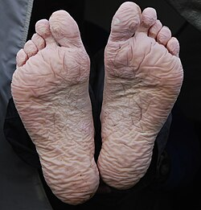
Toe web infection met pathognomonische groene verkleuring (pyocyanin pigment P. aeruginosa)
Risicofactoren
- Tropisch klimaat: Hoge luchtvochtigheid, frequente regen
- Trekking/wandelen: Lange afstanden, transpiratie voeten
- Occlusief schoeisel: Rubberen laarzen, niet-ademende schoenen
- Slechte voetverzorging: Nat schoeisel niet drogen, geen sokken wisselen
- Militairen: Lange marches (historisch: "trench foot" WO1)
- Backpackers/reizigers: Trekkings in tropisch klimaat (Azië, Zuid-Amerika)
Pathofysiologie
- Maceratie: Langdurige vochtigheid → verzachting stratum corneum
- Fissuren: Barrière dysfunctie → entry point bacteriën
- P. aeruginosa kolonisatie: Prolifereert in vochtige omgeving
- Secundaire mycose: Candida/dermatofyten superinfectie
- Chronificatie: Zonder behandeling → diepere infectie, ulceratie
Kliniek
- Lokalisatie: Interdigitale ruimtes voeten (vooral 3e/4e teen web)
- Vroege fase:
- Maceratie (wittige, geweekte huid)
- Roodheid, oedeem
- Fissuren
- Pijn, branderig gevoel
- Gevorderd stadium:
- Groene verkleuring (pathognomonisch voor P. aeruginosa - pyocyanin pigment!)
- Erosies, oppervlakkige ulcera
- Malodoreus (zoet-fruitige geur P. aeruginosa)
- Seropurulent exsudaat
- Complicaties:
- Cellulitis (uiten naar voetrug)
- Lymfangitis
- Bij diabetes/PVD: risico diepe infectie, osteomyelitis
Diagnostiek
- Klinisch: Typisch beeld (maceratie + groene verkleuring) + anamnese (trekking, tropisch klimaat)
- Kweek (optioneel): Bevestigt P. aeruginosa, resistentiepatroon
- DD:
- Tinea pedis (interdigitaal type) - maar geen groene verkleuring
- Erythrasma (Corynebacterium) - roodbruine fluorescente onder Wood's lamp
- Candidose
Behandeling
Stap 1: Hygiënemaatregelen (ESSENTIEEL!):
- Droog houden:
- Was voeten 2× daags met water/zeep
- Grondig drogen (vooral tussen tenen!)
- Laat voeten ventileren (sandalen, blootsvoets indien mogelijk)
- Schoeisel:
- Wissel sokken minimaal 2× daags
- Droog schoenen volledig (bij kampvuur, zon)
- Gebruik absorberende (katoenen) sokken
- Ademend schoeisel prefereren
Stap 2: Antibiotische behandeling:
Oraal (eerste keus - P. aeruginosa dekking):
Ciprofloxacine 500mg 2dd voor 7-14 dagen
Topicaal (mild, adjuvant):
- Azijnzuur 1% compressen: 2-3× daags 15-20 min (zuur milieu, P. aeruginosa-bactericide)
- OF Gentamicine zalf: 2-3dd (indien alleen topicaal gewenst bij zeer milde gevallen)
Stap 3: Antimycotische behandeling (bij mycose component):
Miconazol/clotrimazol crème 2dd voor 2-4 weken
Bij uitgebreide tinea pedis: Terbinafine 250mg 1dd voor 2-4 weken
Bij cellulitis/complicaties:
- Ziekenhuisopname overwegen (vooral diabetes, immunocompromised)
- IV antibiotica: Bredere dekking (ciprofloxacine IV + anti-stafylokok)
Preventie tijdens trekking:
- Wissel sokken dagelijks (neem extra's mee!)
- Droog voeten/schoenen elke stop
- Talkpoeder in sokken (absorbeert vocht)
- Bij eerste tekenen maceratie: rust, ventilatie, azijncompressen
- Sandalen dragen in kamp ('s avonds voeten luchten)
Prognose:
- Goede respons op antibiotica + hygiëne binnen 5-7 dagen
- Recidief frequent bij onvoldoende preventie
- Voorbereiding: Neem voldoende extra sokken mee (2-3× aantal dagen)
- Dagelijks: Was + droog voeten grondig, wissel sokken
- Pauzes: Schoenen/sokken uit, ventileer voeten
- Schoeisel: Goed geventileerde trekkingschoenen, geen rubberlaarzen (tenzij noodzakelijk)
- Signalering: Bij eerste tekenen maceratie → intensiveer hygiëne, start azijncompressen
- Groene verkleuring = pathognomonisch voor P. aeruginosa (pyocyanin pigment)
- Zoete geur = ook karakteristiek voor P. aeruginosa
- Ciprofloxacine = eerste keus (goede P. aeruginosa dekking)
- Azijnzuur compressen = simpel, effectief, veldgeschikt (zuur milieu ongunstig voor P. aeruginosa)
- Frequent bij backpackers na trekking Azië/Zuid-Amerika (jungle treks)
- Hygiëne > antibiotica: Zonder drooghouden recidiveert ondanks antibiotica
- Combinatie bacterieel + mycose zeer frequent → behandel beide!
- Historische term "trench foot" (WO1) refereert aan ergere vorm met necrose (vries+vocht), dit is milder
Eosinofilie
| Graad | Waarde (×10⁶/L) |
|---|---|
| Normaal | < 400-500 |
| Mild | 500 - 1500 |
| Matig | 1500 - 5000 |
| Ernstig | > 5000 |
Parasiet-geïnduceerde eosinofilie: mechanisme
Protozoa - geven doorgaans geen eosinofilie
| Groep | Voorbeelden | Lokalisatie |
|---|---|---|
| Apicomplexa (voorheen Sporozoa) |
Plasmodium, Toxoplasma, Cryptosporidium | Intracellulair → Th1-respons |
| Rhizopoda | Entamoeba histolytica | Darmlumen/weefselin vasie |
| Flagellaten | Giardia, Trichomonas, Trypanosoma, Leishmania | Extracellulair (meest) of intracellulair (Leishmania) |
Helminthen - inductie eosinofilie
| Type | Kenmerken | Eosinofilie | Voorbeelden (hoge eosinofilie) |
|---|---|---|---|
| Nematoden (rondwormen) |
Volledig spijsverteringskanaal, cilindrisch | +++ | Strongyloides, Ascaris (migratie), Filaria, Toxocara |
| Trematoden (zuigwormen/flukes) |
Plat, zuignappen, hermafrodiet* | ++ | Schistosoma (Katayama), Fasciola, Paragonimus |
| Cestoden (lintwormen) adult |
Gesegmenteerd (proglottiden), geen darm | +/- | Taenia (adult darmlumen - beperkt) |
| Cestoden larvaal stadium |
Cyste-vorm in weefsels | ++ | Cysticercose, Echinococcose |
*Behalve Schistosoma (dioecisch - gescheiden geslachten)
Klinische relevantie
- Weefselmigratie: Hoogste eosinofilie tijdens larvale migratie door weefsels (Löffler bij Ascaris, larva currens bij Strongyloides)
- Acute vs chronische infectie: Acute schistosomiasis (Katayama) → hoge eosinofilie; chronisch → lagere waarden
- Diagnostisch hulpmiddel: Eosinofilie bij reiziger wijst richting helminthen, niet protozoa
- Tropische pulmonale eosinofilie (TPE): Extreme eosinofilie bij filariasis door hypersensitiviteitsreactie op microfilariën
Allergie
- Atopie
- Medicamentallergie
Infectieziekten
- Helminthen (weefselinvasief)
- Bacteriële/virale infecties (zeldzaam)
Maligniteiten
- Metastatisch carcinoom
- Hodgkin lymfoom
- Hypereosinofiel syndroom
Auto-immuun
- Churg-Strauss syndroom (EGPA)
- Polyarteriitis nodosa
- Reumatoïde artritis
- Eosinofiele fasciitis
- Huidziekten (pemphigus, dermatitis herpetiformis)
Overig
- Endocrinopathieën
- Toxines
Familiair (zeldzaam)
Autosomaal dominant
Primair (verworven)
Mannen >> vrouwen, clonaal
- Clonaal
- Idiopathisch
Secundair (verworven)
- Weefselinvasieve helminthen
- Medicamenten/toxines
- Allergie
- Auto-immuun
- Maligniteit
- Endocrinopathieën
| Parasiet | Eosinofilie | Opmerking |
|---|---|---|
| Strongyloides | +++ | Asymptomatisch |
| Schistosoma (acuut) | +++ | Katayama |
| Filaria (TPE) | +++ | Pulmonale eosinofilie |
| Toxocara | +++ | VLM |
| Ascaris (migratie) | ++ | Löffler |
Stap 1: Feces O&P
3× feces, Baermann voor Strongyloides
Stap 2: Serologieën
Schistosoma, Filaria, Strongyloides, Toxocara
Stap 3: Empirisch
Albendazol 400mg 2dd 3 dagen
Transmissie: Contact met besmette bodem (warme, vochtige (sub)tropische gebieden)
Incubatie: 2-3 weken
Kliniek
- Vaak asymptomatisch, kan jarenlang persisteren
- Larva currens: Snel migrerende urticariële rash (diagnostisch!)
- Hoesten, dyspneu, piepen (Löffler syndroom)
- Buikpijn, indigestie, waterige diarree
- Eosinofilie +++
- Koorts, enteritis, obstructie, sepsis, shock
- Pulmonale infiltraten, meningitis
- Peritonitis, endocarditis
- Larven overal (bloed, urine, sputum, BAL, CSF)
- Kan fataal zijn!
Diagnose
Larven in feces (Baermann-test, kweek, agarplaat) of duodenum, serologie
Behandeling
Ongecompliceerd
Ivermectin 200 µg/kg éénmalig
of
Albendazol 400mg 2dd 3 dagen
Hyperinfectie / immuunsuppressie
Ivermectin 200 µg/kg 1dd minimaal 3 dagen
Secundaire profylaxe: 1 dosis elke 2-4 weken
of
Albendazol 400mg 2dd 14 dagen
Daarna 1 dosis elke 2-4 weken
Soorten: S. mansoni, S. haematobium, S. japonicum, S. mekongi, S. intercalatum
Transmissie: Zwemmen in zoet water
Acuut: Katayama Syndroom
- Langdurige/intermitterende koorts
- Malaise, buikpijn, diarree
- Hoesten, piepen
- Urticaria, oedeem
- Lymfadenopathie
- Hoge eosinofilie
Chronisch
Granulomateuze reactie op eieren → weinig/geen eosinofilie
- Hepatosplenische schistosomiasis (pre-sinusoïdale portale hypertensie)
- S. haematobium: blaas, hydroureter, hydronefrose
Diagnose
Eieren in feces/urine, serologie (antigen & antistoffen), eosinofilie (acuut hoog, chronisch laag/normaal)
Behandeling
S. mansoni & S. haematobium
Praziquantel 40 mg/kg éénmalig
S. japonicum
Praziquantel 2× 30 mg/kg op 1 dag
CNS-betrokkenheid / Katayama
Praziquantel + corticosteroïden
Soorten: W. bancrofti (lymfatisch), Brugia malayi, Loa loa, Onchocerca volvulus
Lymfatische filariasis
- Elephantiasis
- Diagnose: microfilarieën in bloed/urine, serologie
- Behandeling: Diethylcarbamazine (DEC), Ivermectin, Doxycycline
Etiologie: W. bancrofti of Brugia malayi - trapping van microfilarieën & adulten in longen
Meest voorkomend: India
Kliniek
- Man : Vrouw = 4 : 1
- Koorts, niet-productieve hoest, vooral 's nachts piepen
- Malaise, moeheid, gewichtsverlies
- Ernstige eosinofilie (marked!)
- IgE verhoogd
- Geen microfilarieën in bloed
- Serologie positief
- X-thorax: diffuse kleine interstitiële, reticulo-nodulaire infiltraten
Behandeling = Diagnose
DEC (Diethylcarbamazine)
3dd 2 mg/kg - opbouwen!
Duur: 10-21 dagen (totale dosis ~72 mg/kg)
+ Corticosteroïden
Behandeling geeft meestal snel klinisch herstel → therapeutische diagnose
Definitie: Passerende pulmonale eosinofiele infiltraten door longmigratie van larven
Oorzaken
- Ascaris lumbricoides (meest frequent)
- Hookworm (Ancylostoma, Necator)
- Strongyloides
Kliniek
- Hoesten, koorts
- Eosinofilie
- Migrerende infiltraten op X-thorax
- Minimale klinische verschijnselen
- Zelflimiterend
Geelzucht (Icterus)
| Type | Conjugatie | Oorzaken |
|---|---|---|
| Pre-hepatisch | Ongeconjugeerd ↑ | Hemolyse (malaria!), Gilbert |
| Hepatocellulair | Beide ↑ | Hepatitis, cirrose, leptospirose |
| Post-hepatisch | Geconjugeerd ↑ | Galstenen, tumor, parasitair |
Infectieus
- Virale hepatitis - A, B, C, E
- Malaria - Hemolyse
- Leptospirose - Weil syndroom
- Buiktyfus - Complicatie
- Gele koorts
- Dengue - Zeldzaam
- Amoebenabces - Obstructie
- Fasciola hepatica, Clonorchis - Galwegen
- Acute schistosomiasis
Niet-infectieus
- G6PD-deficiëntie + trigger
- Sikkelcelcrisis
- Medicamenteus - Rifampicine, isoniazide
- Alcoholische hepatitis
| Test | Reden |
|---|---|
| Bilirubine (totaal + direct) | Type icterus |
| ALT, AST | Hepatocellulaire schade |
| AF, γGT | Cholestase |
| LDH, haptoglobine, reticulocyten | Hemolyse |
| Dikke druppel | Malaria |
| Hepatitis serologie | HAV IgM, HBsAg, anti-HBc IgM, HCV |
| INR | Leverfunctie |
| Echo abdomen | Galwegen, abces, structuur lever |
| Type | Transmissie | Chroniciteit | Behandeling |
|---|---|---|---|
| Hep A | Feco-oraal | Nooit chronisch | Supportief, vaccin preventie |
| Hep B | Bloed, seksueel, perinataal | Leeftijdsafhankelijk: 80% bij kinderen, <5% volwassenen | Antiviraal (levenslang), 75% reversie cirrose |
| Hep C | Bloed (transfusie, naalden, tandarts endemisch gebied) | 55% chronisch (hoger bij immuuncompromittatie) | DAA's: 98% genezing! |
| Hep D | Bloed, seksueel (alleen met Hep B) | Co-infectie: <5%, Superinfectie: 70-90% | Peginterferon, bulevirtide |
| Hep E | Feco-oraal (varkensvlees, water) | Zelden, risico bij zwangerschap/immuunsuppressie | Meestal supportief |
Progressie Chronische Hepatitis C
Chronisch (55%) → Cirrose (30%) → HCC (1-4%/jaar) of Leverfalen (2-5%/jaar)
| Marker | Betekenis |
|---|---|
| HBsAg | Surface antigen - actieve infectie (acuut of chronisch) |
| Anti-HBs | Immuniteit (na vaccinatie of doorgemaakte infectie) |
| Anti-HBc IgM | Acute infectie |
| Anti-HBc IgG | Doorgemaakte of chronische infectie |
| HBeAg | Hoge virale replicatie, hoge besmettelijkheid |
Interpretatie Combinaties
| HBsAg | Anti-HBs | Anti-HBc | Interpretatie |
|---|---|---|---|
| + | - | + (IgM) | Acute infectie |
| + | - | + (IgG) | Chronische infectie |
| - | + | + | Doorgemaakte infectie (immuun) |
| - | + | - | Vaccinatie (immuun) |
| - | - | - | Niet immuun, niet geïnfecteerd |
Kliniek Levercirrose
- Portale hypertensie: Ascites, splenomegalie, varices (oesofagus/rectum)
- Hepatische encefalopathie: Verwardheid, asterixis, coma
- Coagulopathie: Verhoogde bloedingsneiging (verminderde stollingsfactoren)
- Spider naevi en palmar erytheem
- Gynaecomastie en testisatrofie (bij mannen)
Kliniek Leverfalen
- Icterus (geconjugeerd bilirubine)
- Hypoglycemie (verminderde gluconeogenese)
- Hypoalbuminemie → oedeem
- Hepatorenaal syndroom
Hepatosplenomegalie
| Acuut | Chronisch |
|---|---|
| Malaria | Malaria (herhaald) |
| Buiktyfus | Schistosomiasis (hepatisch) |
| Virale hepatitis | Viscerale leishmaniasis (kala-azar) |
| Leptospirose | Hyperreactieve malariale splenomegalie |
| Amoebenabces | Cirrose (hepatitis B/C) |
| Dengue | Sikkelcelziekte |
| Rickettsiose | Hematologische maligniteiten |
Kliniek
- Langdurige koorts
- Enorme splenomegalie
- Hepatomegalie
- Pancytopenie
- Gewichtsverlies
- Hypergammaglobulinemie
Diagnose
Beenmerg/miltpunctie (amastigoten), serologie (rK39), PCR
Behandeling Viscerale Leishmaniasis (NVP Richtlijn 2020)
| Middel | Volwassenen ≥18 jaar | Kinderen |
|---|---|---|
| 1e keus: Liposomaal amfotericine B | 3-5 mg/kg/dag, totaal 21-30 mg/kg Bijv. dag 1-5 en 10 (of 14, 21) |
Zelfde dosering |
| Alternatief: Miltefosine | 2.5 mg/kg/dag (max 150mg) 28 dagen | ≥12 jaar en ≥30 kg: 2.5 mg/kg/dag 28 dagen |
HIV-coinfectie: Hogere totaaldosis liposomaal amfotericine B (40 mg/kg). Secundaire profylaxe overwegen.
Let op: Zonder behandeling vrijwel 100% mortaliteit. Post-kala-azar dermale leishmaniasis (PKDL) kan optreden.
- Chronische hyperimmune reactie op malaria
- Massieve splenomegalie
- Hoge IgM, malaria antistoffen
Behandeling
Langdurige malariaprofylaxe
Neurologische Klachten
| Syndroom | Oorzaken |
|---|---|
| Meningitis | Bacterieel, TBC, Cryptococcen (HIV), malaria, viraal |
| Encefalitis | Japanse encefalitis, rabiës, malaria cerebri |
| Focale laesie | Neurocysticercose, toxoplasmose (HIV), TBC, abces |
| Myelitis / Paraplegie | Schistosomiasis (myelum!), HTLV-1 |
Stap 2: Glasgow Coma Scale Calculator
| Response | Pt | |
|---|---|---|
| E - Eyes | ||
| Spontaan | 4 | |
| Op aanspreken | 3 | |
| Op pijn | 2 | |
| Geen | 1 | |
| V - Verbal | ||
| Georiënteerd | 5 | |
| Verward | 4 | |
| Inadequaat | 3 | |
| Onverstaanbaar | 2 | |
| Geen | 1 | |
| M - Motor | ||
| Opdrachten uitvoeren | 6 | |
| Lokaliseert pijn | 5 | |
| Terugtrekken | 4 | |
| Flexie (decorticate) | 3 | |
| Extensie (decerebrate) | 2 | |
| Geen | 1 | |
Stap 3: Lichamelijk onderzoek
Beoordeel op:
- Meningitis: koorts, hoofdpijn, nekstijfheid
- Lateralisatie: papiloedeem, convulsies, hemiparese → focale laesie → CT eerst!
Pathofysiologie
Sekwestratie parasitaire erytrocyten in cerebrale capillairen
Kliniek
- Bewustzijnsdaling
- Convulsies
- Decorticatie/decerebratie
- Retinale bloedingen
Behandeling
IV artesunaat
IC-bewaking, hypoglycemie behandelen
Definities
- Nekstijfheid: verminderde anteflexie door ontsteking/bloed in subarachnoïdale ruimte
- Meningitis: infectie meningen met pleocytose in liquor
- Encefalitis: infectie van cerebrum
- Aseptische meningitis: virale meningitis (abacterieel)
- Sereuze meningitis: meningeale prikkeling + pleocytose zonder micro-organisme
- Meningismus: tekenen van meningeale prikkeling zonder pleocytose
Oorzaken Meningitis
70-80% bacteriële meningitis: N. meningitidis, H. influenzae, S. pneumoniae
- Neonaten: E. coli, S. agalactiae
- Tot 5 jaar: H. influenzae (afhankelijk vaccinatiestatus)
- TBC-meningitis: laag glucose in liquor
Diagnostiek LP
| Leukocyten (×10⁶/L) | Eiwit (g/L) | Glucose ratio CSF/bloed | |
|---|---|---|---|
| Normaal | 0-3 (lymfo) | <0.45 | ½ - ⅔ |
| Viraal | tot 500 (lymfo) | tot 1.0 | normaal |
| Bacterieel | >3000 (poly) | 0.5-3.0 | <½ |
Empirische behandeling per leeftijd
| Leeftijd | Verwekkers | Behandeling |
|---|---|---|
| <3 maanden | S. agalactiae, E. coli, L. monocytogenes | Ampicilline + Cefalosporine |
| 3 mnd - 18 jr | N. meningitidis, S. pneumoniae, H. influenzae | Cefalosporine (+ Ampi/Chloramf) |
| 18-50 jr | S. pneumoniae, N. meningitidis | Cefalosporine (+ Ampicilline) |
| >50 jr | S. pneumoniae, L. monocytogenes, Gram-neg. | Ampicilline + Cefalosporine |
| Verminderde immuniteit | L. monocytogenes, Gram-neg. | Ampicilline + Cefalosporine |
| Trauma/chirurgie | Stafylokokken, S. pneumoniae, Gram-neg. | Vancomycine + Cefalosporine |
Behandelduur
- Pneumokokken/Haemophilus: 10 dagen
- Meningokokken: 7 dagen
- Dexamethason heeft bewezen effect in hoge-inkomenslanden
Contactprofylaxe meningokokken
Huishoudcontacten: 500-800x verhoogd risico
Rifampicine: 2×10 mg/kg/dag (max 600mg), 2 dagen
| Aandoening | Verwekker | Kliniek/Opmerkingen |
|---|---|---|
| Amoeben-hersenabces | E. histolytica | Hersenabces, zeldzaam, vaak fataal |
| Primaire amoeben-meningoencefalitis | Naegleria, Acanthamoeba | Vrijlevende amoeben (water), meningitis/encefalitis |
| Trypanosomiasis | T. gambiense, T. rhodesiense | Slaapziekte, encefalitis |
| Trichinose | Trichinella spiralis | Epilepsie; soms encefalitis met focale uitval |
| Angiostrongyliasis | Angiostrongylus cantonensis | Eosinofiele meningitis |
| Gnathostomiasis | Gnathostoma spinigerum | Laesies hersen/ruggenmerg; eosinofiele meningitis |
| Schistosomiasis | S. mansoni, S. japonicum, S. haematobium | Katayama-syndroom; granuloom (epilepsie); myelitis |
| Paragonimiasis | Paragonimus westermani | Granuloom (epilepsie); niet frequent |
| Cysticercose | Taenia solium | Cysten in hersenen; epilepsie (wereldwijd meest voorkomende oorzaak) |
| Echinococcose | Echinococcus granulosus | Cysten hersen/ruggenmerg; niet frequent |
Overige CZS-verwekkers
| Type | Verwekkers |
|---|---|
| Virussen | Mazelen, bof, varicella, HIV, HTLV-I, rabiës, arbovirussen |
| Bacteriën | T. pallidum, Leptospira, B. burgdorferi, Borrelia, Brucella, Rickettsiae |
| Protozoa | P. falciparum, Trypanosoma spp., E. histolytica, Naegleria |
| Fungi | Cryptococcus (bij AIDS) |
Verwekkers virale meningoencefalitis
- Epidemisch: Enterovirussen, echovirus 9 (met rash), poliovirus, coxsackie B
- Sporadisch: HSV
- Arbovirussen (vectorovergedragen):
- Japanse B-encefalitis (Zuidoost-Azië)
- St. Louis encefalitis
- Eastern/Western equine encefalitis
- FSME (Früh-sommer meningoencephalitis)
- Overige: Dengue, Lassa koorts, rabiës
Kliniek
Aspecifiek begin: hoofdpijn, bewustzijnsverandering, delier, coma, convulsies. Klassieke meningitis-tekenen kunnen minder duidelijk zijn.
Behandeling
- Herpes encefalitis: Aciclovir 30 mg/kg/dag i.v. in 3 doses
- Fungale meningitis (Crypto): Amfotericine B 0.3-0.7 mg/kg/dag
Cryptococcen meningitis
Meest voorkomend bij AIDS. Subacute presentatie met koorts, hoofdpijn, visuele stoornissen.
Kliniek
- Epilepsie
- Hoofdpijn
- Focale uitval
Diagnose
CT/MRI (cysten, calcificaties), serologie
Behandeling Neurocysticercose (NVP Richtlijn 2020)
| Middel | Volwassenen ≥18 jaar | Kinderen |
|---|---|---|
| Albendazol | 15 mg/kg/dag in 2 doses (max 800mg/dag), 8-30 dagen | 15 mg/kg/dag in 2 doses, 8-30 dagen |
| + Praziquantel (bij >2 laesies) |
50 mg/kg/dag 10-14 dagen | 50 mg/kg/dag 10-14 dagen |
| + Dexamethason | 0.1 mg/kg/dag (start 1 dag vóór anti-parasitair) | 0.1 mg/kg/dag |
| Anti-epileptica | Gedurende en na behandeling | Gedurende en na behandeling |
Cave: Oculaire/spinale cysticercose: geen antihelminthica (risico blindheid/paralyse). Eerst neurochirurgische interventie.
Transmissie: Rauw/onvoldoende verhit varkensvlees (T. solium) of rundvlees (T. saginata)
Behandeling Taeniasis (NVP Richtlijn 2020)
| Middel | Volwassenen ≥18 jaar | Kinderen |
|---|---|---|
| 1e keus: Praziquantel | 10 mg/kg eenmalig | 10 mg/kg eenmalig |
| Alternatief: Niclosamide | 2g eenmalig (goed kauwen) | 11-34 kg: 1g; ≥35 kg: 1.5g eenmalig |
NB: Bij T. solium: laxeren na behandeling om auto-infectie te voorkomen.
Acute toestanden met koorts, verwardheid, bewustzijnsverandering, desoriëntatie, onrust, hallucinaties kunnen voorkomen bij:
- Malaria
- Pneumonie
- Buiktyfus
- Vroege meningitis/encefalitis
- Metabole encefalopathie (zonder koorts)
Acute verwardheid ZONDER koorts
Overweeg:
- Intoxicaties (alcohol, opioïden, cocaïne)
- Hypoglycemie (vaker in tropen door alcohol, malaria, hepatitis, ondervoeding)
- Shock
- Lever-/nierfalen
- Vitamine deficiënties
- Trauma, CVA, subduraal hematoom
Heat Stroke (Zonnesteek)
Mechanisme: Verminderde transpiratie
Behandeling:
- Koelen (natte sponzen + ventilatie)
- Koele omgeving
- Vocht/rehydratie
Empirische behandeling bij coma
- Glucose 50%: 50 ml i.v.
- Naloxon: 0.4-0.8 mg i.v.
- Thiamine: 100 mg i.v.
Malaria
QuizTaxonomische classificatie
- Rijk: Protozoa (eencellige eukaryoten)
- Stam: Apicomplexa (voorheen Sporozoa)
- Klasse: Aconoidasida
- Orde: Haemosporida
- Familie: Plasmodiidae
- Genus: Plasmodium (5 soorten infecteren mens)
Apicomplexa kenmerken
Gastheer-relaties
- Definitieve gastheer = Anopheles mug: Seksuele vermenigvuldiging (gametogonie) vindt plaats in de mug
- Tussengastheer = mens: Aseksuele vermenigvuldiging (clonale expansie) in lever en erytrocyten
- De mug lijkt niet ziek te worden van de malaria-infectie
- P. falciparum, vivax, ovale, malariae zijn strikt humaan; P. knowlesi is een zoönose (primaten-reservoir)
Gametocyten
- Gametocyten zijn de seksuele vormen die door de mug worden opgenomen
- Niet pathogeen voor de mens (veroorzaken geen ziekteverschijnselen)
- Moeilijk te elimineren met standaard antimalarica; primaquine heeft gametocytocidale werking
Ziektelast (WHO 2023)
- 249 miljoen cases per jaar (2022)
- 608.000 sterfgevallen per jaar
- 95% van de cases en sterfgevallen in Sub-Sahara Afrika
- 80% van de sterfte betreft kinderen <5 jaar
- Zwangeren: verhoogd risico op ernstige anemie, laag geboortegewicht, maternale sterfte
- P. falciparum = ~75% van alle malaria wereldwijd; Nigeria en Congo samen >20% van globale burden
- Semi-immuniteit: Na meerdere infecties op jonge leeftijd ontwikkelt zich partiële immuniteit (vanaf ~5 jaar), waardoor minder risico op ernstig beloop
Transmissie
- Vector: Vrouwelijke Anopheles mug (>40 soorten kunnen malaria overdragen)
- Bijtijd: Voornamelijk schemering tot dageraad (crepusculair/nachtelijk)
- Mug = definitieve gastheer (seksuele voortplanting in mug)
- Mens = tussengastheer (aseksuele vermenigvuldiging)
- Andere transmissieroutes (zeldzaam): bloedtransfusie, naaldprik, congenitaal
Geografische distributie per species
| Species | Primaire regio's | Opmerkingen |
|---|---|---|
| P. falciparum | Sub-Sahara Afrika, Zuidoost-Azië, Amazone | Dominant in Afrika (>99% van cases), meest lethaal |
| P. vivax | Zuid-/Zuidoost-Azië, Latijns-Amerika, Hoorn van Afrika | Meest wijdverspreid, zeldzaam in West-Afrika (Duffy-negatief) |
| P. ovale | West-Afrika, Filipijnen | Relatief zeldzaam |
| P. malariae | Wereldwijd in tropische gebieden | Lage prevalentie, chronische infecties mogelijk |
| P. knowlesi | Zuidoost-Azië (Maleisië, Borneo) | Zoönose (apen-reservoir), dagelijkse koortscyclus |
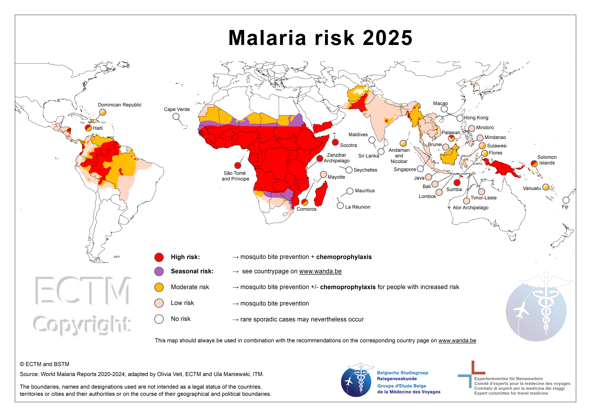
Risicofactoren voor transmissie
- Klimaat: Temperatuur 20-30°C optimaal; parasiet overleeft niet onder ~20°C
- Hoogte: Transmissie neemt af >1500-2000m (te koud voor mug/parasiet)
- Seizoen: Piek tijdens/na regenseizoen
- Urbanisatie: Lagere transmissie in steden (minder broedplaatsen)
Geïmporteerde malaria (Nederland)
- ~200-300 gevallen per jaar (pre-COVID, stijgend na reishervatting)
- >90% P. falciparum, vooral uit West-Afrika
- Risicogroepen: VFR-reizigers (Visiting Friends & Relatives), expats, toeristen zonder profylaxe
- Gemiddeld 1-3 sterfgevallen per jaar (vaak door vertraagde diagnose)
| P. falciparum | P. vivax | P. ovale | P. malariae | P. knowlesi | |
|---|---|---|---|---|---|
| Koortscyclus | 48u (tertiana) | 48u (tertiana) | 48u (tertiana) | 72u (quartana) | 24u (quotidiana) |
| Hypnozoïeten | Nee | Ja | Ja | Nee | Nee |
| Relaps mogelijk | Nee | Ja (mnd-jaren) | Ja (mnd-jaren) | Recrudescence (jaren) | Nee |
| Primaquine nodig | Nee* | Ja (radicale cure) | Ja (radicale cure) | Nee | Nee |
| Ernst | Ernstig/lethaal | Mild-matig | Mild | Mild, chronisch | Kan ernstig zijn |
| Parasitemie | Alle stadia RBC | Reticulocyten | Reticulocyten | Oudere RBC | Alle stadia RBC |
| Max parasitemie | Onbeperkt, >10% | Zelden >2% | Zelden >2% | <1% | Kan hoog zijn |
*Primaquine bij P. falciparum alleen als gametocytocide.
Relaps = uit hypnozoïeten (lever). Recrudescence = uit persisterende bloedparasieten.
Fase 1: Exo-erytrocytaire schizogonie (lever)
- Sporozoïeten worden geïnjecteerd door vrouwelijke Anopheles mug
- Migratie naar lever binnen 30 minuten
- Invasie van hepatocyten via circumsporozoïet proteïne (CSP)
- Tissue schizont: de delingsvorm van de parasiet in de lever - ingekapseld in hepatocyten en niet detecteerbaar in het bloed
- Slechts enkele sporozoïeten bereiken de lever → zeer lage aantallen, haast niet aan te tonen
- Na 7-10 dagen is de eerste replicatiecyclus voltooid → 10.000-30.000 merozoïeten per hepatocyt worden vrijgelaten
- Duur totale leverfase: 5-16 dagen (soort-afhankelijk) - asymptomatisch
- Hypnozoïeten: slapende leverstadia bij P. vivax en P. ovale - kunnen maanden-jaren persisteren
Fase 2: Erytrocytaire schizogonie (bloed)
- Merozoïeten infecteren erytrocyten via verschillende receptoren (P. vivax: Duffy-antigen)
- Bloedstadia progressie:
- Ring stadium: Vroege vorm direct na invasie, karakteristieke ring-morfologie op bloeduitstrijk (centrale vacuole)
- Trofozoïet: Actief voedende en groeiende vorm, vult geleidelijk de erytrocyt, metabolisch zeer actief
- Schizont: Delingsvorm met meerdere kernen, bevat rijpende merozoïeten (8-32 stuks)
- Cyclus: 24u (P. knowlesi), 48u tertiana (P. falciparum, vivax, ovale), 72u quartana (P. malariae)
- Schizont-ruptuur veroorzaakt koortspieken (pyrogene cytokines)
- P. falciparum: cytoadherentie aan endotheel via PfEMP1 → sequestration → microvasculaire obstructie
- Haem-detoxificatie: Parasiet verteert hemoglobine en moet toxisch Fe²⁺ detoxificeren door polymerisatie tot hemozoïne - target voor antimalarica (chloroquine, artemisinine)
Fase 3: Gametocytogenese (seksuele voortplanting)
- Enkele merozoïeten differentiëren tot gametocyten (♂ en ♀)
- Opname door mug tijdens bloedmaal
- In mugdarm: fusie tot zygote → ookineet → oöcyst → sporozoïeten
- Sporozoïeten migreren naar speekselklieren - cyclus compleet
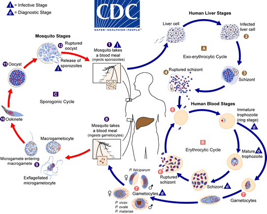
| Soort | Incubatie | Kenmerk | Ernst |
|---|---|---|---|
| P. falciparum | 7-14d | Geen hypnozoïeten | Fataal |
| P. vivax | 12-17d | Hypnozoïeten, tertiana, Duffy-afhankelijk | Mild |
| P. ovale | 15-18d | Hypnozoïeten, tertiana | Mild |
| P. malariae | 18-40d | Quartana, chronische infectie mogelijk | Mild |
| P. knowlesi | 9-12d | Zoönose (apen), dagelijks (24u) | Ernstig |
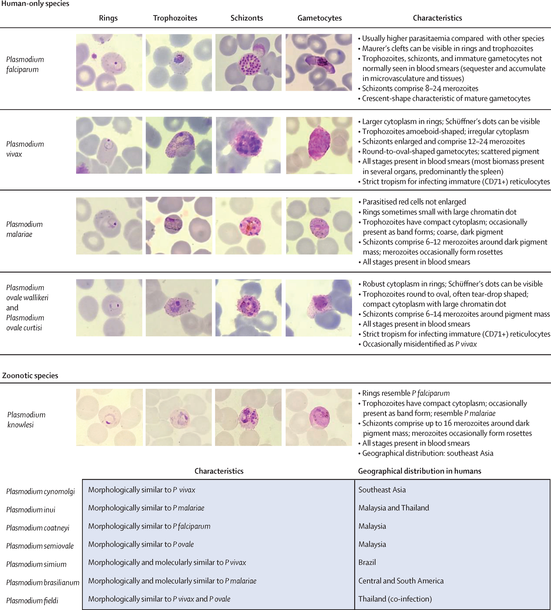
Klinische urgentie
- Een patiënt kan er "goed uitzien" maar een hoge parasitemie hebben die snel kan verslechteren
- Parasitemie bij P. falciparum: >5% = gecompliceerde malaria
- P. vivax, P. ovale, P. malariae: parasitemie blijft meestal <2% (infecteren alleen reticulocyten of oude erytrocyten)
- Bij P. falciparum correleert stijgende parasitemie met verhoogd mortaliteitsrisico
Microscopisch onderzoek
| Test | Doel | Sensitiviteit | Details |
|---|---|---|---|
| Dikke druppel | Screening - parasieten detecteren | ~50 parasieten/µL (~0,002%) |
• Geconcentreerd (30-40× meer bloed dan dunne druppel) • Erytrocyten zijn gehemolyseerd → parasieten liggen "los" • Detectielimiet: 6 min kijken, 0,6 µL bloedvolume • Gouden standaard voor detectie • Let op: Soortbepaling lastiger (morfologie verloren) • Bij negatief: herhaal na 8-24u |
| Dunne druppel (bloeduitstrijk) | Species-identificatie & parasitemie kwantificeren | 50-100 parasieten/µL |
• Erytrocyten intact - morfologie beoordelbaar • Species-determinatie (P. falciparum vs vivax/ovale/malariae) • Parasitemie % bepalen • Stadium herkenning (ring/trofozoïet/schizont/gametocyt) |
Giemsa kleuring - techniek
| Stap | Dunne druppel (thin smear) | Dikke druppel (thick smear) |
|---|---|---|
| 1. Prepareren | Druppel bloed uitstrijken in dunne monolaag | Druppel bloed uitsmeren over ~1 cm² (dikke laag) |
| 2. Drogen | Aan de lucht laten drogen | Volledig laten drogen (minimaal 30 min, liefst overnight) |
| 3. Fixeren | Methanol fixeren (essentieel!) - behoudt erytrocyt-morfologie | NIET fixeren - erytrocyten moeten lyseren |
| 4. Kleuren | Giemsa kleuring: standaard 30 minuten voor optimaal contrast. Quick stain (3-5 min) mogelijk maar minder nauwkeurig | |
| 5. Beoordelen | Olie-immersie objectief (100× vergroting) | |
- Observer-ervaring: Detectie en species-identificatie sterk afhankelijk van training
- Beoordelingstijd: Minimaal 100-200 velden bij dikke druppel voordat "negatief" geconcludeerd wordt
- Bloedvolume: Te weinig bloed = lagere sensitiviteit
- Kleuringskwaliteit: Suboptimale kleuring bemoeilijkt morfologische beoordeling
- Dikke druppel: Parasieten liggen los na hemolyse → morfologie minder duidelijk → soortbepaling lastiger
- Dikke druppel: Snel screenen op aanwezigheid parasieten
- Dunne druppel: Species bepalen en parasitemie meten
- Bij negatief: herhalen na 8-12u (minimaal 2-3× bij verdenking)

Dunne druppel morfologie van Plasmodium species - verschillende levensstadia en species-specifieke kenmerken
Morfologische beoordeling dunne druppel
- Stap 1: Wat voor preparaat is het? (dikke druppel of uitstrijk)
- Stap 2: Beoordeel erytrocyten - dicht bij elkaar, niet teveel over elkaar (goede spreiding)
- Stap 3: Van buiten naar binnen kijken - cellen, plasma, karakteristieken
Herkenning parasiet: Zoek naar kern + vacuole + cytoplasma samen. Bij meerdere exemplaren met deze kenmerken = bevestiging malaria.
| Kenmerk | Species | Beschrijving |
|---|---|---|
| Maurer clefts | P. falciparum | Grove, onregelmatige rode/roze vlekken in geïnfecteerde erytrocyt. Zichtbaar in trofozoïet stadium. |
| Schüffner dots | P. vivax, P. ovale | Fijne, regelmatige kleine paarse stipjes verspreid over de erytrocyt. |
| Vergrote erytrocyt | P. vivax, P. ovale | Geïnfecteerde erytrocyt is vergroot (infecteren reticulocyten). |
| Normale/kleine erytrocyt | P. falciparum, P. malariae | Erytrocyt behoudt normale grootte of is verkleind. |
| Banaanvormige gametocyten | P. falciparum | Karakteristieke halvemaanvorm, pathognomonisch voor falciparum. |
Parasietendichtheid & Interpretatie
| Parasietendichtheid | Parasitemie % | Klinische betekenis |
|---|---|---|
| <50 parasieten/µL | <0.1% | Lage parasitemie - vroege infectie of suppletie door profylaxe |
| 50-1000 parasieten/µL | 0.1-2% | Matige parasitemie - typisch ongecompliceerde malaria |
| 1000-10,000 parasieten/µL | 2-20% | Hoge parasitemie - risico complicaties |
| >10,000 parasieten/µL | >20% | Hyperparasitemie - WHO criterium gecompliceerde malaria (>10% niet-immuun, >2% semi-immuun) |
- Sequestration (P. falciparum): Mature stadia plakken aan endotheel → niet zichtbaar in perifeer bloed → onderschatting parasitemie!
- Schizonten in perifeer bloed: Indicatie van hoge parasite densiteit in weefsel (normaal sequestreren schizonten)
- Semi-immuun personen: Hoge parasitemie mogelijk met minimale klachten (tolerantie)
- Niet-immuun personen: Ernstige klachten mogelijk bij lage parasitemie
- Behandeling: Kliniek bepaalt ernst, niet alleen parasitemie!
Rapid Diagnostic Tests (RDT)
| Antigeen | Detecteert | Voordelen | Beperkingen |
|---|---|---|---|
| HRP-2 (Histidine-Rich Protein 2) |
P. falciparum specifiek |
• Hoge sensitiviteit • Stabiel bij hoge temp • Ook bij lage parasitemie |
• Blijft 2-6 weken positief na kuur! • Niet bruikbaar voor therapie-evaluatie • HRP-2 deletie (genetische variant) |
| pLDH (pan-Lactaat Dehydrogenase) |
Alle Plasmodium species |
• Pan-malaria detectie • Negatief binnen 1 week na succesvolle behandeling |
• Lagere sensitiviteit dan HRP-2 • Minder stabiel bij opslag |
- NOOIT alleen RDT gebruiken - altijd combineren met microscopie
- RDT kan fout-negatief zijn bij zeer lage parasitemie
- RDT geeft geen parasitemie % (kan niet ernst beoordelen)
- Species-specificiteit beperkt (bijv. kan P. vivax/ovale/malariae niet onderscheiden)
- HRP-2: 99% van P. falciparum heeft HRP-2 antigeen; detectielimiet ~100 p/µL
Alternatieve detectiemethoden
| Methode | Detectielimiet | Toepassing |
|---|---|---|
| LAMP (Alethia) |
~1 parasiet/µL | Hoge sensitiviteit screening voor lage parasitemie (<50 p/µL). Moleculaire test. |
| QBC tube (Quantitative Buffy Coat) |
~5 parasieten/µL | Bloed afdraaien, buffy coat analyseren onder UV-licht. Snelle screening. |
| PCR | <1 parasiet/µL | Gouden standaard sensitiviteit. Duur, niet point-of-care. Confirmatie/research. |
Screeningstesten bij reizigers
- Post-reis screening (asymptomatisch):
- Langdurig verblijf (>3 maanden) in endemisch gebied
- Frequente korte reizen naar hoogrisico gebied
- VFR (Visiting Friends & Relatives) zonder profylaxe
- Screening kan met dikke druppel of PCR
- Koorts binnen 3 maanden na terugkeer uit endemisch gebied:
- ALTIJD malaria uitsluiten - ook bij andere diagnose!
- Dikke + dunne druppel (minimaal 2-3×)
- P. vivax/ovale kunnen tot 1 jaar na reis debuteren (hypnozoïeten)
- Bloeddonatie: 3-12 maanden uitstel na verblijf malariagebied (risico transfusie-malaria)
Ongecompliceerde malaria
- Koorts - Vaak intermitterend, maar kan ook continu
- Koude rillingen → koorts → zweten (klassieke cyclus)
- Hoofdpijn
- Spierpijn, malaise
- Misselijkheid, braken, diarree
- Splenomegalie (bij herhaalde infecties)
Laboratoriumafwijkingen
- Trombocytopenie: Frequent, maar plaatjes zijn functioneel (in tegenstelling tot dengue). Bloedingen pas bij zeer lage waarden (<3-4 × 10⁹/L) of bij co-infectie
- Anemie: Hemolyse door erytrocyt-destructie + milt-klaring
- Leukocyten: Normaal of licht verlaagd. Leucocytose/linksverschuiving suggereert bacteriële co-infectie
Splenomegalie - mechanisme
Vasculaire sequelae (P. falciparum)
Door cytoadherentie (PfEMP1) hopen geïnfecteerde erytrocyten zich op in capillairen van eindorganen, wat leidt tot:
- Cerebraal: Coma, hersenzwelling (cerebrale malaria)
- Renaal: Acute nierinsufficiëntie, malaria-nefropathie (IgA-depositie bij recidiverende infecties)
- Pulmonaal: ARDS door capillaire lekkage
- Placentair: Laag geboortegewicht, maternale anemie
Rapid Clinical Assessment
- Uitputting - Extreme vermoeidheid, verminderd bewustzijn
- Snel ademhalen (Sepsis) - Tachypneu, tekenen respiratoire nood
- Neurologische achteruitgang - Verminderd bewustzijn, convulsies, focale tekenen
- Hemodynamische instabiliteit - Hypotensie, tachycardie, tekenen shock
WHO-criteria gecompliceerde malaria
| Criterium | Definitie |
|---|---|
| Cerebrale malaria | Coma (GCS ≤11), niet door andere oorzaak |
| Ernstige anemie | Hb <5 g/dL of Ht <15% |
| Acute nierinsufficiëntie | Creat >265 µmol/L of urine <400mL/24u |
| ARDS | Pulmonaal oedeem |
| Hypoglycemie | Glucose <2.2 mmol/L |
| Shock | SBP <80 mmHg met tekenen hypoperfusie |
| Hyperparasitemie | >10% (niet-immuun) of >2% (semi-immuun) |
| Acidose | pH <7.35 of bicarbonaat <15 mmol/L |
| Hemoglobinurie | Blackwater fever |
| DIC | Spontane bloedingen |
| Herhaald braken/convulsies | Onvermogen medicatie in te nemen |
Malaria tropica (P. falciparum) - Ongecompliceerd
| Middel | Volwassenen ≥18 jaar | Kinderen |
|---|---|---|
| 1e keus: Artemether/lumefantrine (Riamet®) | 4 tab op t=0, 8, 24, 36, 48, 60u (met vetrijk voedsel) | 5-<15 kg: 1 tab; 15-<25 kg: 2 tab; 25-<35 kg: 3 tab; ≥35 kg: 4 tab per gift |
| Alternatief: Atovaquon/proguanil (Malarone®) | 4 tab 1dd gedurende 3 dagen | 5-8 kg: 2 ped tab; 9-10 kg: 3 ped tab; 11-20 kg: 1 tab; 21-30 kg: 2 tab; 31-40 kg: 3 tab |
| Alternatief: DHA-piperaquine (Eurartesim®) | Gewichtsafhankelijk, 1dd 3 dagen | 36-<75 kg: 3 tab; 75-100 kg: 4 tab 1dd 3 dagen |
Malaria tropica - Gecompliceerd (WHO-criteria)
| Fase | Behandeling | Dosering |
|---|---|---|
| Acuut | Artesunaat IV | 2.4 mg/kg op t=0, 12, 24 uur, daarna elke 24 uur |
| Na stabilisatie | Orale artemether/lumefantrine | Completeer 3-daagse kuur zodra orale intake mogelijk |
Malaria tertiana (P. vivax / P. ovale)
| Fase | Middel | Volwassenen | Kinderen |
|---|---|---|---|
| Bloedstadium | Chloroquine | 600mg base dag 1, 300mg dag 2-3 | 10 mg base/kg dag 1, 5 mg/kg dag 2-3 |
| Hypnozoïeten | Primaquine | 0.25-0.5 mg/kg (max 30mg) 1dd 14 dagen | 0.25-0.5 mg/kg 1dd 14 dagen |
Malaria quartana (P. malariae)
| Middel | Volwassenen | Kinderen |
|---|---|---|
| Chloroquine | 600mg base dag 1, 300mg dag 2-3 | 10 mg base/kg dag 1, 5 mg/kg dag 2-3 |
Geen hypnozoïeten, dus geen primaquine nodig
Malaria knowlesi (P. knowlesi)
| Ernst | Behandeling |
|---|---|
| Ongecompliceerd | Artemether/lumefantrine (als P. falciparum) |
| Gecompliceerd | Artesunaat IV (als ernstige P. falciparum) |
Follow-up & Monitoring
| Moment | Controle |
|---|---|
| Dag 2 en 3 | Parasitemie moet dalen |
| Dag 7 | Controle parasitemie (moet negatief) |
| Dag 28 | Late recrudescence uitsluiten |
| P. vivax/ovale | Controle tot 1 jaar (relapse door hypnozoïeten mogelijk) |
Preventie (4 onderdelen)
- Awareness - Bewustzijn van risico
- Bite prevention - Muggenbeten voorkomen
- Chemoprophylaxis - Medicamenteuze preventie
- Diagnosis - Snelle diagnose bij koorts
Beslisboom Malariapreventie
Risicogebieden - Details
| Risico | Voorbeelden |
|---|---|
| Hoog | Sub-Sahara Afrika, Papua Nieuw-Guinea, Haïti, Solomon eilanden |
| Matig | Ruraal India, ruraal Zuidoost-Azië, Amazonegebied, delen Midden-Amerika |
| Laag | Stedelijk India/Zuidoost-Azië, sommige Caribische eilanden, toeristische resorts |
| Geen | >2000m hoogte, grote steden Zuid-Amerika, Noord-Afrika, Midden-Oosten (meeste) |
| Middel | Dosering | Schema |
|---|---|---|
| Malarone (Atovaquon-proguanil) |
1 tablet/dag | 1-2d voor → tijdens → 7d na |
| Doxycycline | 100mg/dag | 1-2d voor → tijdens → 4 weken na |
| Lariam (Mefloquine) |
1 tablet/week | 2-3 weken voor → tijdens → 4 weken na |
Keuzeoverwegingen
| Situatie | 1e keus | Contra-indicatie |
|---|---|---|
| Standaard / kort (<1 mnd) | Malarone | - |
| Lang (>1 mnd) | Doxycycline / Lariam | - |
| Zwangerschap | Lariam | Doxy, Malarone |
| Borstvoeding | Malarone / Lariam | Doxycycline |
| Psychiatric VG | Malarone / Doxycycline | Lariam |
| Epilepsie | Malarone / Doxycycline | Lariam (overleg neuroloog) |
| Photosensitief | Malarone / Lariam | Doxycycline |
| Asplenie / immuungecompromitteerd | Laagdrempelig profylaxe | Ook bij laag risico gebied |
Belangrijkste bijwerkingen
| Middel | Bijwerkingen | Preventie/advies |
|---|---|---|
| Malarone | Misselijkheid, buikpijn (mild) | Innemen met voedsel |
| Doxycycline | Photosensitivity, oesofagitis | Zonnebrand! Met water, rechtop blijven 30min |
| Lariam | Neuropsychiatrisch (angst, slapeloosheid, nachtmerries) | Testdosis 2-3 weken voor! Bij klachten stoppen |
| Maatregel | Details |
|---|---|
| DEET 30-50% | Op onbedekte huid, herhaal om 4-6u |
| Permethrine | Op kleding en klamboe, houdt meerdere wasbeurten |
| Klamboe | Geïmpregneerd, gaten dicht, instop onder matras |
| Kleding | Lange mouwen/broek bij schemer en 's nachts |
| Accommodatie | Airconditioning of gaas voor ramen |
RTS,S/AS01 (Mosquirix™)
- Antigeen: Recombinant circumsporozoïet proteïne (CSP) van P. falciparum
- Werkingsmechanisme: Richt zich op pre-erythrocytaire fase (sporozoïeten/hepatocyten)
- Schema: 4 doses (6, 10, 14 weken + booster op 18 maanden)
- Effectiviteit: ~30-40% reductie klinische malaria, ~30% reductie ernstige malaria
- Doelgroep: Kinderen 5 maanden - 2 jaar in hoog-endemische gebieden
- Beperking: Partiële en kortdurende protectie, soort-specifiek (alleen P. falciparum)
R21/Matrix-M
- Nieuwer vaccin met vergelijkbaar mechanisme als RTS,S
- Hogere effectiviteit gerapporteerd (~75% in trials)
- WHO prequalificatie verkregen in 2023
- Snellere en goedkopere productie mogelijk
Uitdagingen malaria vaccinontwikkeling
- Antigene variatie: PfEMP1 en andere oppervlakte-eiwitten zijn extreem polymorf
- Complexe levenscyclus: Verschillende antigenen per stadium (sporozoïet, merozoïet, gametocyt)
- Immuun-evasie: Intracellulaire lokalisatie, antigene shift tijdens infectie
- Soort-specificiteit: 5 Plasmodium soorten infecteren mens, elk met eigen antigenen
- Geen steriele immuniteit: Natuurlijke infectie geeft geen complete bescherming
Klinische toepassing reiziger
Huidige malaria vaccins zijn niet geïndiceerd voor reizigers naar endemische gebieden vanwege:
- Beperkte effectiviteit (30-40%) onvoldoende voor individuele bescherming
- Chemoprofylaxe biedt substantieel betere protectie (>90%)
- Complex vaccinatieschema (4 doses over 18 maanden)
- Vaccin ontwikkeld voor mass-vaccinatie programma's in endemische gebieden
Buiktyfus (Typhoid Fever)
Verwekker: Salmonella enterica serovar Typhi (S. Typhi), gram-negatief
Verwant: S. Paratyphi A, B, C (paratyfus) - klinisch zelfde beeld
Nomenclatuur: Enteric fever = typhoid fever = paratyphoid fever
- Transmissie: Feco-oraal (mens is enig reservoir)
- Incubatie: 3-21 dagen (gemiddeld ~14 dagen)
- Beloop: 90% ongecompliceerd/subklinisch
- Risicogroepen: Kinderen en jong volwassenen (hogere incidentie)
- Mortaliteit: Laag bij adequate behandeling
Vaccinatie
- Beschermende werking is matig
- Beschermingsduur slechts 2-3 jaar
- Overweeg bij reizen naar hoog-endemische gebieden
| Week | Symptomen |
|---|---|
| Week 1 | Geleidelijk stijgende koorts, hoofdpijn, malaise, obstipatie |
| Week 2 | Continue koorts (39-40°C), roseolae, hepatosplenomegalie, relatieve bradycardie |
| Week 3-4 | Complicaties: perforatie, bloeding, encefalopathie |
Klinische Clues voor Buiktyfus
| Bevinding | Toelichting |
|---|---|
| Relatieve bradycardie | Pols past niet bij koorts (Faget's sign) |
| Trombocytopenie | Trombo's lage kant |
| Leukopenie | Leuco's lage kant (ongebruikelijk bij bacteriële infectie) |
| Verwardheid | "Typheus" - encefalopathie |
| Rose spots (roseolae) | Bleke vlekjes op romp, lastig te zien bij donkere huid |
| Splenomegalie | Hepatosplenomegalie |
| ALAT/ASAT verhoogd | Mild verhoogd |
| Obstipatie | Vaker dan diarree! |
| "Stepladder fever" | Geleidelijk stijgende koorts |
Diagnostiek
| Test | Timing | Sensitiviteit |
|---|---|---|
| Bloedkweek | Week 1-2 | 40-80% |
| Beenmergkweek | Beste | 90% |
| Feceskweek | Week 2-3 | 30% |
| Widal serologie | Week 2+ | Lage specificiteit, beperkt bruikbaar |
Behandeling
Ongecompliceerd (poliklinisch)
Azitromycine 1g 1dd gedurende 7 dagen
Eerste keus, met name bij reizen naar Azië
Opname / sepsis
Ceftriaxon 2g 1dd IV 10-14 dagen
Ceftriaxon-resistent (Pakistan e.a.)
Meropenem of Azitromycine
Complicaties (zeldzaam maar ernstig)
- Intestinale perforatie (2-3%) - week 2-3
- GI-bloeding
- DIC (diffuus intravasale stolling)
- Tyfeuze encefalopathie
Sequelae
- Cholecystitis - kolonisatie in galwegen
- Myocarditis
- Chronisch dragerschap (1-5%, galblaas)
Dengue
Verwekker: Denguevirus (flavivirus), 4 serotypes (DENV-1 t/m 4)
- Incubatie: 4-10 dagen
- Verspreiding: Tropisch/subtropisch, stedelijke gebieden
- Hoge koorts (39-40°C) - Bifasisch (zadeldak)
- Ernstige hoofdpijn, retro-orbitale pijn
- Artralgie, myalgie - "Breakbone"
- Misselijkheid, braken
- Uitslag (maculopapulair, 2e fase)
- Leukopenie, trombopenie
- Buikpijn, lever >2cm palpabel
- Persisterend braken
- Vocht-accumulatie (ascites, pleuravocht)
- Slijmvliesbloeding
- Lethargie, rusteloosheid
- Snelle Ht-stijging met dalende trombocyten
Ernstige dengue
- Plasma leakage → shock (DSS)
- Ernstige bloeding
- Orgaanfalen (lever, hart, CNS)
Diagnostiek
| Test | Timing | Opmerking |
|---|---|---|
| NS1 antigeen | Dag 1-5 | Vroege fase |
| IgM serologie | Dag 4-5+ | Blijft maanden positief |
| IgG serologie | Week 2+ | Eerdere infectie, secundaire infectie |
| PCR | Dag 1-5 | Specifiek, niet overal beschikbaar |
Behandeling
Geen specifieke therapie!
- Supportive: vocht, pijnstilling (paracetamol)
- Geen NSAID's/aspirine!
- Monitoring trombocyten, Ht
- Geen profylactische trombocytentransfusie
Differentiatie andere arbovirussen
| Kenmerk | Dengue | Chikungunya | Zika |
|---|---|---|---|
| Koorts | +++ | ++ | + |
| Artralgie | + | +++ (invaliderend) | + |
| Uitslag | ++ | ++ | +++ |
| Conjunctivitis | - | - | ++ |
| Trombopenie | +++ | + | - |
| Complicatie | Shock, bloeding | Chronische artritis | Microcefalie, GBS |
Indicatie
- ≥1 jaar na doorgemaakte dengue-infectie
- Doel: preventie ernstige dengue bij herinfectie met ander serotype
Nuancering DSS-risico
Dengue shock syndroom wordt gevreesd, maar risico blijkt in praktijk laag:
- Verhoogd risico: ouderen, immuungecompromitteerden, kinderen
- Laag risico: gezonde jonge volwassenen/militairen
Arbovirus & VHF
Definitie: Virussen overgedragen door geleedpotigen (arthropoden): muggen, teken, spinnen, etc.
Belangrijke Arbovirussen
| Virus | Vector | Kliniek | Ernst |
|---|---|---|---|
| Dengue | Aedes mug | Koorts, artralgie, trombopenie, shock | Mild - Ernstig |
| Zika | Aedes mug | Koorts, uitslag, conjunctivitis, microcefalie (zwangerschap) | Mild |
| Chikungunya | Aedes mug | Koorts, invaliderende artralgie (chronisch) | Matig |
| West-Nijlvirus | Culex mug | Koorts, encefalitis (zeldzaam) | Mild - Ernstig |
| TBE | Teek (Ixodes) | Koorts, meningoencefalitis | Matig - Ernstig |
| Usutu | Culex mug | Meestal asymptomatisch, soms encefalitis | Mild |
| Gele koorts | Aedes/Haemagogus mug | Koorts, icterus, hemorrhagie | Ernstig |
Arbovirussen in Nederland & Europa
- Nederland: TBE (o.a. Utrecht), West-Nijlvirus, Usutuvirus
- EU: Dengue steeds vaker autochtoon (Zuid-Europa)
| Ziekte | Verwekker | Transmissie | Regio | Mortaliteit |
|---|---|---|---|---|
| Ebola | Ebolavirus Filovirus | Direct contact (bloed, lichaamsvloeistoffen) | Centraal/West-Afrika | 25-90% |
| Marburg | Marburgvirus Filovirus | Direct contact, vleermuizen | Afrika (Oeganda, DRC) | 24-88% |
| Lassa | Lassavirus Arenavirus | Knaagdieren (Mastomys), mens-mens | West-Afrika (Nigeria) | 1-15% |
| Krim-Congo (CCHF) | CCHF-virus Nairovirus | Teek (Hyalomma), slachtvee | Balkan, Turkije, Midden-Oosten, Afrika | 10-40% |
| Rift Valley | RVF-virus Phlebovirus | Mug, direct contact (vee) | Afrika, Arabisch schiereiland | 1-3% (50% bij hemorrhagisch) |
| Gele koorts | Yellow fever virus Flavivirus | Aedes mug | Afrika, Zuid-Amerika | 20-50% (toxische fase) |
| Dengue hemorrhagisch | Dengue virus Flavivirus | Aedes mug | Tropen/subtropen | <1% (met behandeling) |
Kliniek VHF
- Prodromale fase: Koorts, malaise, myalgie, hoofdpijn
- Hemorrhagische fase: Petechiën, ecchymosen, bloedingen (GI, tandvlees, neus)
- Shock: Capillaire lekkage, hypotensie, multi-orgaanfalen
Diagnostiek & Beleid
- PCR (BSL-4 lab) - nooit lokaal verwerken bij verdenking
- Strikte isolatie (PBM: overdrukpak, N95/FFP3)
- Contact GGD/RIVM/LCI
- Supportief; specifieke therapie beperkt (ribavirin bij Lassa, antilichamen Ebola)
Leptospirose
Transmissie
- Contact met water/bodem besmet met urine van knaagdieren
- Penetratie via huid (wondjes) of slijmvliezen
Voorkomen
- Tropen: Overal, vooral na overstromingen
- Nederland: Mud runs, city swims, rioolwerkers, agrariërs
Incubatietijd: 1-4 weken (gemiddeld 10 dagen)
Milde vorm (90%)
- Griepachtig beeld
- Koorts, hoofdpijn, myalgie
- Rode ogen (conjunctivale injectie) - typisch!
Ziekte van Weil (ernstige vorm, 10%)
- Icterus (lever)
- Acute nierinsufficiëntie
- Bloedingen (trombopenie, DIC)
- ARDS
- Myocarditis
Denk aan leptospirose bij:
Onbegrepen koorts uit tropen MET lever- én nierfunctiestoornis
| Test | Timing | Opmerking |
|---|---|---|
| PCR (bloed/urine) | Week 1 | Vroege diagnose |
| Serologie (MAT) | Vanaf week 2 | Gouden standaard, serovar-specifiek |
| Kweek | Weken | Te langzaam voor acute diagnostiek |
Laboratoriumafwijkingen
- Leverenzymen ↑ (ASAT/ALAT)
- Bilirubine ↑
- Creatinine ↑ (nierfunctie)
- Trombopenie
- CK ↑ (myositis)
| Ernst | Behandeling | Duur |
|---|---|---|
| Mild | Doxycycline 100mg 2dd | 7 dagen |
| Ernstig | Penicilline G IV of Ceftriaxon 2g IV | 7 dagen |
Alternatief: Amoxicilline
Spirolept vaccin
- Alleen tegen ziekte van Weil (L. interrogans serovar icterohaemorrhagiae)
- Beschermt NIET tegen andere serovars
- Indicatie: beroepsmatige blootstelling (rioolwerkers, agrariërs)
Exposurepreventie
- Vermijd contact met mogelijk besmet water
- Wondjes afdekken bij wateractiviteiten
- Niet zwemmen in stilstaand zoet water na overstromingen
Lyme Borreliose
Spirocheet Gram-negatief
Epidemiologie Nederland
- 1 op 5 teken in Nederland draagt Borrelia
- 2-3% ontwikkelt Lyme na tekenbeet
- Seroprevalentie: ~10% in NL (doorgemaakt, niet per se actief)
Regionale Variatie Borrelia-species
| Regio | Dominante manifestatie |
|---|---|
| Europa | Late huidafwijkingen (ACA) |
| Verenigde Staten | Lyme-artritis |
| Oost-Europa/Azië | Neuroborreliose |
| Stadium | Timing | Manifestatie | Frequentie |
|---|---|---|---|
| Vroeg gelokaliseerd | Dagen-weken | Erythema migrans | 75-90% |
| Vroeg gedissemineerd | Weken-maanden | Neuroborreliose (meningitis, radiculopathie, facialisparese) | ~10-15% |
| Lyme-artritis (grote gewrichten) | ~5% | ||
| Lyme-carditis (AV-blok) | <1% | ||
| Laat | >1 jaar | Acrodermatitis chronica atroficans (ACA) | 1-3% |
Beperkingen serologie
- Antistoffen kunnen lang positief blijven → lage specificiteit voor actieve infectie
- Seroprevalentie ~10% in NL maakt interpretatie lastig
- Bij erythema migrans: niet wachten op serologie
Diagnostische aanpak
| Manifestatie | Diagnose |
|---|---|
| Erythema migrans | Klinisch - geen serologie nodig, direct behandelen |
| Neuroborreliose | Liquor: lymfocytaire pleiocytose + intrathecale antilichaamproductie |
| Lyme-artritis | Serologie + PCR op synoviaalvocht |
| Manifestatie | Behandeling | Duur |
|---|---|---|
| Erythema migrans | Doxycycline 2dd 100mg | 10 dagen |
| Neuroborreliose | Doxycycline 2dd 100mg of Ceftriaxon 1dd 2g IV | 14-21 dagen |
| Lyme-artritis | Doxycycline 2dd 100mg | 28 dagen |
| Lyme-carditis | Ceftriaxon 1dd 2g IV (bij AV-blok) | 14-21 dagen |
| ACA | Doxycycline 2dd 100mg | 28 dagen |
Preventie
- DEET op huid
- Permethrine op kleding
- Lange kleding, broek in sokken
- Lichaamscontrole na buitenactiviteiten
Teekverwijdering
- Bij de kop pakken (pincet of tekenverwijderaar)
- Recht eruit trekken, niet draaien
- Desinfecteren na verwijdering
Antibioticaprofylaxe
- Doxycycline eenmalig 200mg
Schistosomiasis (Bilharzia)
| Soort | Distributie | Doelorgaan |
|---|---|---|
| S. mansoni | Afrika, Arabië, Zuid-Amerika | Darm, lever |
| S. haematobium | Afrika, Midden-Oosten | Urinewegen, genitaal |
| S. japonicum | Azië (China, Filippijnen) | Darm, lever (ernstigst) |
| S. intercalatum | Centraal-Afrika | Darm |
| S. mekongi | Mekong-regio | Darm, lever |
Kliniek
- Koorts, koude rillingen
- Hoesten, dyspneu
- Urticaria
- Hepatosplenomegalie
- Ernstige eosinofilie
Behandeling
Praziquantel + corticosteroïden
In acute fase zijn eieren nog niet detecteerbaar - behandel op klinische verdenking!
| S. mansoni/japonicum | S. haematobium |
|---|---|
| Diarree, buikpijn | Hematurie (terminaal) |
| Hepatomegalie | Dysurie |
| Periportale fibrose (pipe-stem) | Ureterobstructie |
| Portale hypertensie | Hydronefrose |
| Splenomegalie | Blaascarcinoom (SCC) |
Ectopische schistosomiasis
- Neuroschistosomiasis - Myelitis, ruimte-innemend proces
- Pulmonale hypertensie
Diagnostiek
| Test | Bevinding |
|---|---|
| Feces (S. mansoni/japonicum) | Eieren met laterale doorn (mansoni) |
| Urine (S. haematobium) | Eieren met terminale doorn |
| Serologie | Vroege infectie, screening |
| Biopsie (rectum/blaas) | Eieren |
| Echo lever | Periportale fibrose ("pipe-stem") |

Behandeling (NVP Richtlijn 2020)
| Soort | Volwassenen ≥18 jaar | Kinderen |
|---|---|---|
| S. mansoni, S. haematobium, S. intercalatum, S. mekongi | Praziquantel 40 mg/kg in 2 doses op 1 dag | 40 mg/kg in 2 doses op 1 dag |
| S. japonicum | Praziquantel 60 mg/kg in 3 doses op 1 dag | 60 mg/kg in 3 doses op 1 dag |
Speciale situaties
| Indicatie | Behandeling | Opmerkingen |
|---|---|---|
| Katayama syndroom | Praziquantel + prednison 1-2 mg/kg/dag | Steroïden starten vóór praziquantel; herhaal praziquantel na 6-8 weken |
| Neuroschistosomiasis | Praziquantel + dexamethason | Hoge dosis steroïden om ontstekingsreactie te onderdrukken |
| Zwangerschap | Praziquantel mag gegeven worden | WHO: voordelen > risico's |
- Praziquantel werkt alleen tegen volwassen wormen, niet tegen onrijpe vormen
- Bij acute infectie (Katayama): behandel eerst met steroïden, praziquantel later herhalen
- Controle: feces/urine onderzoek 4-6 weken na behandeling
Strongyloidiasis
- Verspreiding: Tropisch/subtropisch, vochtige gebieden
- Transmissie: Filariform larven in bodem penetreren huid
- Kan decennia asymptomatisch persisteren
Mild
- Cutaan: Larva currens (pathognomonisch) - Snel bewegende urticariële lijn
- GI: Epigastrische pijn, diarree, misselijkheid
- Pulmonaal: Hoest, piepen (Löffler-achtig)
Hyperinfectie Syndroom
- Massieve larvale invasie
- Septische shock (gram-negatieve bacteriëmie door darmdoorbraak)
- Pneumonie, ARDS
- Meningitis
- Mortaliteit tot 70%!
Diagnostiek
| Test | Sensitiviteit | Opmerking |
|---|---|---|
| Feces O&P (1x) | 30% | Intermittente uitscheiding |
| Feces (3x) | 50-70% | |
| Baermann concentratie | 80% | Beste directe test |
| Agarplaat cultuur | 90% | Larvensporen zichtbaar |
| Serologie | 85-95% | Kan kruisreageren, blijft lang positief |
Behandeling (NVP Richtlijn 2020)
| Situatie | Volwassenen ≥18 jaar | Kinderen |
|---|---|---|
| Ongecompliceerd (1e keus) | Ivermectine 200 µg/kg dag 1 en 2 | >15 kg: Ivermectine 200 µg/kg dag 1 en 2 |
| Ongecompliceerd (alternatief) | Albendazol 400 mg 2dd 7 dagen | <15 kg: Albendazol 200 mg 2dd 7 dagen |
| Hyperinfectie syndroom | Ivermectine 200 µg/kg/dag tot min. 2 weken na negatieve feces | Idem, aanpassen op gewicht |
| Disseminatie | Ivermectine dagelijks + breedspectrum AB (gram-neg dekking) | Idem |
Andere Darmparasieten
Twee hoofdgroepen
- Protozoa (eencelligen) → behandeling: metronidazol
- Helminthen (wormen) → behandeling: mebendazol/albendazol
Diagnostische uitdagingen
- Lage parasietload: Concentratietechnieken nodig om opbrengst te vergroten
- Intermitterende uitscheiding: Patiënt kan geïnfecteerd zijn maar niet aantoonbaar in feces → triple feces (3x op verschillende dagen)
Rol 1e lijns arts
- Herkennen van zieke patiënt
- Feces testen aanvragen (i.o.m. microbioloog)
- Doorsturen indien nodig
| Parasiet | Type | Transmissie | Symptomen |
|---|---|---|---|
| PROTOZOA (behandeling: metronidazol/tinidazol) | |||
| Giardia lamblia | Protozoa | Feco-oraal, water | Diarree, malabsorptie |
| Entamoeba histolytica | Protozoa | Feco-oraal | Dysenterie, leverabces |
| Cryptosporidium | Apicomplexa | Feco-oraal, water | Waterige diarree (HIV!) |
| Cyclospora cayetanensis | Apicomplexa | Water, voedsel | Krampen, diarree (self-limiting) |
| Cystoisospora belli | Apicomplexa | Water, fruit | Diarree (immuungecompromitteerd) |
| NEMATODEN (rondwormen - behandeling: albendazol/mebendazol) | |||
| Ascaris lumbricoides | Nematode | Feco-oraal | Löffler, obstructie |
| Hookworm | Nematode | Huid (bodem) | Anemie, eosinofilie |
| Enterobius vermicularis | Nematode | Feco-oraal | Perianale jeuk (NL!) |
| Trichuris trichiura | Nematode | Feco-oraal | Dysenterie, prolaps |
| Strongyloides stercoralis | Nematode | Huid (bodem) | Hyperinfectie syndroom! |
| CESTODEN (lintwormen - behandeling: praziquantel) | |||
| Taenia saginata/solium | Cestode | Rauw vlees | Asymptomatisch, cysticercosis |
| TREMATODEN (zuigwormen - behandeling: praziquantel) | |||
| Schistosoma spp. | Trematode | Huid (zoetwater) | Katayama, blaas/lever |
| Fasciola hepatica | Trematode | Oraal (waterkers) | Hepatobiliaire klachten |
Epidemiologie: Warmere gebieden, met name kinderen (15/100.000), ouderen ~5/100.000. Bij huisarts: 2-15% van GE >1 week. Vaak asymptomatisch dragerschap.
Transmissie: Feco-oraal. Met name cysten in feces, trofozoïeten weinig in feces.
Kliniek: Waterige, foul-smelling diarree, flatulentie, malabsorptie, gewichtsverlies
Diagnose
Feces antigeen (ELISA), microscopie (cysten/trofozoïeten). NB: Intermitterende uitscheiding → triple feces onderzoek nodig!
Behandeling (NVP Richtlijn 2020)
| Middel | Volwassenen ≥18 jaar | Kinderen |
|---|---|---|
| 1e keus: Tinidazol | 2g eenmalig | 50 mg/kg eenmalig (max 2g) |
| Alternatief: Metronidazol | 500 mg 3dd 5-7 dagen of 2g 1dd 3 dagen |
15 mg/kg/dag in 3 doses, 5-7 dagen |
Zwangerschap: Paromomycine 500mg 3dd 7 dagen (niet-resorbeerbaar). Metronidazol liefst na 1e trimester.
Transmissie: Feco-oraal, met name tropen/subtropen
Levenscyclus: Cysten in feces (infectieus), trofozoïeten niet infectieus → orale inname cysten
Vormen
- Asymptomatisch cystendragerschap (grootste deel patiënten per WHO)
- Luminale infectie: Gastro-enteritis
- Weefselinvasie: Dikke darm → bloed → lever → evt. long/cerebraal
Kliniek dysenterie: Geleidelijke bloederige diarree, krampen, tenesmus, minimale koorts
Kliniek leverabces: Koorts, RBP-pijn uitstralend naar schouder, leukocytose (geen eosinofilie!). Kenmerkend: vervloeid leverweefsel ("chocolademelk-achtig" i.p.v. pus)
Diagnostiek
- PCR feces: Standaard, onderscheidt E. histolytica van E. dispar
- Microscopie: Cysten met jodiumkleuring, trofozoïeten kunnen erytrocyten bevatten (erytrofagie)
- Serologie: Bij verdenking leverabces
Behandeling (NVP Richtlijn 2020)
Amoebendysenterie / Leverabces
| Middel | Volwassenen ≥18 jaar | Kinderen |
|---|---|---|
| Stap 1: Metronidazol (weefselamoebicide) |
750 mg 3dd 5-10 dagen | 30-50 mg/kg/dag in 3 doses (max 2250 mg/dag) |
| Stap 2: Paromomycine (aansluitend, cyste-eradicatie) |
500 mg 3dd 7 dagen | 25-35 mg/kg/dag in 3 doses, 7 dagen |
NB: Bij leverabces >5-10 cm of dreigende ruptuur: percutane aspiratie overwegen.
Asymptomatisch cystendragerschap
Paromomycine 500 mg 3dd 7 dagen (kinderen: 25-35 mg/kg/dag in 3 doses)
Intracellulaire parasieten uit dezelfde groep als malaria en Toxoplasma.
Cryptosporidium spp.
- Epidemiologie: Wereldwijd, ~200.000 jonge kinderen overlijden jaarlijks in Sub-Sahara Afrika en Zuid-Azië
- Transmissie: Feco-oraal, drinkwater, rauwe melk, direct contact mens/dier
- Kliniek: 5-6% van acute gastro-enteritis, 2-4% van persistente diarree. Self-limiting bij immuuncompetenten; ernstig en chronisch bij HIV/AIDS
- Behandeling: Nitazoxanide (bij immuuncompetenten). Bij HIV: cART meest effectief
Cyclospora cayetanensis
- Epidemiologie: Tropisch en subtropisch
- Transmissie: Via water en vers voedsel (groenten, fruit)
- Kliniek: Intracellulair in intestinaal epitheel. Krampen, diarree, 1-3 maanden self-limiting; bij immuungecompromitteerden kan het langdurig zijn
- Behandeling: Cotrimoxazol
Cystoisospora belli
- Epidemiologie: Tropen en subtropen
- Transmissie: Via water en fruit. Rijpingsstap nodig → geen directe mens-op-mens transmissie
- Kliniek: Met name bij immuungecompromitteerden. Kan outbreaks geven in ziekenhuizen
- Behandeling: Cotrimoxazol
Kenmerken: Zoönotisch, ingewikkelde levenscyclus. Larvale stadium (tussenstadium) geeft de ernstigste klinische uiting.
Taenia saginata (Rundervlees) / T. solium (Varkensvlees)
- Transmissie: Consumptie rauw/onvoldoende verhit vlees met larven → volwassen worm in darm
- Kliniek adulte worm: Meestal asymptomatisch dragerschap, bijna altijd aantoonbaar in feces. Bij behandeling kan een lange worm uitkomen
- Cave T. solium: Klassiek varkensvlees, in NL zeldzaam door screening
Ontstaat door feco-orale inname van eieren (niet door eten van vlees!). Larven migreren naar weefsels.
Neurocysticercosis
- Epidemiologie: ~50% van epilepsie wereldwijd in endemische gebieden (NL zeldzaam)
- Kliniek: Spier (meestal asymptomatisch) of cerebraal → epilepsie
- Cave: Bij vinden van lintworm in feces → uitsluiten cysticercosis!
- Diagnostiek: MRI/CT hersenen, serologie
Behandeling
- Taeniasis (adulte worm): Praziquantel 10 mg/kg eenmalig of Niclosamide
- Neurocysticercosis: Zie neurocysticercosis sectie (albendazol + corticosteroïden)
Kenmerken: Platte wormen (niet lintvorming), levenscyclus altijd via schelpdier (zoetwaterslak). Komen alleen voor bij zoetwatercontact.
Schistosomiasis
Zie Schistosomiasis sectie voor uitgebreide informatie.
- Transmissie: Via de huid bij zoetwatercontact
- Acute fase: Katayama syndroom (immuunreactie op worm)
- Chronisch S. haematobium: Blaaskanker, hematurie
- Chronisch S. mansoni/japonicum: Hepatische sequelae (portale hypertensie)
Fasciola hepatica (Leverbot)
- Epidemiologie: Komt ook voor in klimaat als Nederland ("sheep liver rot")
- Transmissie: Oraal via zoetwater/vegetatie (bijv. waterkers)
- Locatie: Hepatobiliaire wegen, levensduur ~10 jaar
- Kliniek: Koorts, RBP-pijn, eosinofilie, hepatomegalie, cholangitis
- Diagnostiek: Altijd ook serologie (naast feces onderzoek)
- Behandeling: Triclabendazol (1e keus)
Ascariasis (Ascaris lumbricoides - Spoelworm)
Levenscyclus: Oraal → via long/alveoli → opgehoest en ingeslikt → darm → uitgroei tot volwassen worm
- Pulmonale migratie: Löffler syndroom (hoest, eosinofilie, infiltraten)
- Intestinaal: Asymptomatisch of obstructie (wormbol), galwegobstructie
- Bij lage load weinig klachten
Behandeling Ascariasis (NVP Richtlijn 2020)
| Middel | Volwassenen ≥18 jaar | Kinderen |
|---|---|---|
| 1e keus: Albendazol | 400 mg eenmalig | ≥2 jaar: 400 mg eenmalig 1-2 jaar: 200 mg eenmalig |
| Alternatief: Mebendazol | 100 mg 2dd 3 dagen of 500 mg eenmalig |
100 mg 2dd 3 dagen of 500 mg eenmalig |
Cave: Bij Löffler-syndroom eerst prednisolon, pas daarna antihelminthicum (wormen worden actief!)
Hookworm/Mijnworm (Ancylostoma, Necator)
Epidemiologie: Warme gebieden (25-30°C), vochtige omgeving
Levenscyclus: Eieren in grond (via feces hond/kat/mens) → rijping in grond → larven kruipen via huid naar binnen → leven van bloed in dunne darmwand
- Cutaan: Jeukende dermatitis ("ground itch" bij huidingang)
- Pulmonaal: Mild (minder dan Ascaris)
- Intestinaal: IJzergebreksanemie (chronisch bloedverlies bij ernstige infecties)
Behandeling Hookworm (NVP Richtlijn 2020)
| Middel | Volwassenen ≥18 jaar | Kinderen |
|---|---|---|
| 1e keus: Albendazol | 400 mg eenmalig | ≥2 jaar: 400 mg eenmalig 1-2 jaar: 200 mg eenmalig |
| Alternatief: Mebendazol | 100 mg 2dd 3 dagen of 500 mg eenmalig |
100 mg 2dd 3 dagen of 500 mg eenmalig |
NB: Corrigeer ijzergebreksanemie met ijzersuppletie.
Enterobiasis (Enterobius vermicularis - Aarsmade)
Epidemiologie: Komt ook in Nederland voor, met name bij kinderen
Behandeling (NVP Richtlijn 2020)
| Middel | Volwassenen ≥18 jaar | Kinderen |
|---|---|---|
| 1e keus: Mebendazol | 100 mg eenmalig, na 2 weken herhalen | ≥1 jaar: 100 mg eenmalig, na 2 weken herhalen |
| Alternatief: Pyrantel | 11 mg/kg (max 1g) eenmalig, na 2 weken herhalen | 11 mg/kg eenmalig, na 2 weken herhalen |
NB: Hele huishouden behandelen, hygiënemaatregelen.
Trichuriasis (Trichuris trichiura - Zweepworm)
Transmissie: Soil-transmitted worm (feco-oraal). Eet mee met darminhoud. Goede hygiëne remt verspreiding.
Behandeling (NVP Richtlijn 2020)
| Middel | Volwassenen ≥18 jaar | Kinderen |
|---|---|---|
| 1e keus: Albendazol | 400 mg 1dd 3 dagen | ≥2 jaar: 400 mg 1dd 3 dagen |
| Alternatief: Mebendazol | 100 mg 2dd 3 dagen | 100 mg 2dd 3 dagen |
Filariasis
Verwekkers: Wuchereria bancrofti (>90%), Brugia malayi, B. timori
Vector: Culex, Anopheles, Aedes muggen
Distributie: Tropisch Afrika, Azië, Pacific, Latijns-Amerika
Kliniek
- Asymptomatisch (microfilaremie)
- Acute adenolymfangitis (koorts, lymfangitis, orchitis)
- Chronisch: Lymfoedeem, hydrocele, elephantiasis
- Tropische Pulmonale Eosinofilie (TPE)
Diagnose
Nachtelijk bloeduitstrijk (microfilarieën - nachtelijke periodiciteit), Antigeen detectie (Og4C3)
Behandeling (NVP Richtlijn 2020)
| Middel | Volwassenen ≥18 jaar | Kinderen |
|---|---|---|
| 1e keus: DEC (diëthylcarbamazine) | 6 mg/kg/dag 1dd 12 dagen | 6 mg/kg/dag 1dd 12 dagen |
| Anti-Wolbachia: Doxycycline | 200 mg 1dd 4-6 weken | ≥8 jaar: 200 mg 1dd 4-6 weken |
Cave: DEC NIET bij co-infectie Loa loa (encefalopathie) of onchocerciasis (Mazzotti-reactie)!
TPE: DEC 6 mg/kg/dag in 3 doses, 14-21 dagen.
Loiasis
Vector: Chrysops (daas) | Distributie: Centraal/West-Afrika (regenwoud)
- Calabar zwellingen (migrerende angio-oedeem)
- Adulte worm door conjunctiva ("eye worm")
- Eosinofilie
Behandeling Loiasis (NVP Richtlijn 2020)
| Middel | Volwassenen ≥18 jaar | Kinderen |
|---|---|---|
| Lage microfilaremie (<8000/ml): DEC | Opbouwschema: dag 1: 1 mg/kg, dag 2: 3 mg/kg, dag 3+: 6 mg/kg/dag, totaal 21 dagen | Zelfde opbouwschema |
| Hoge microfilaremie (≥8000/ml) | Eerst aferese of albendazol 200mg 2dd 21 dagen om mf te reduceren, daarna DEC | Specialist |
Cave: Encefalopathie bij hoge microfilaremie! Bepaal mf-load vóór behandeling.
Onchocerciasis (River Blindness)
Vector: Simulium (blackfly) - snelstromend water | Distributie: Sub-Sahara Afrika, Jemen, Latijns-Amerika
- Huid: Intense jeuk, depigmentatie (leopard skin), lichenificatie
- Noduli (onchocercomata) - volwassen wormen
- Ogen: Keratitis, chorioretinitis → blindheid
Behandeling Onchocerciasis (NVP Richtlijn 2020)
| Middel | Volwassenen ≥18 jaar | Kinderen |
|---|---|---|
| 1e keus: Ivermectine | 150 µg/kg eenmalig, elke 3-12 maanden herhalen | ≥15 kg: 150 µg/kg eenmalig |
| + Doxycycline | 100 mg 1dd 6 weken (anti-Wolbachia, macrofilaricide) | ≥8 jaar: 100 mg 1dd 6 weken |
Cave: Eerst Loa loa uitsluiten! Bij co-infectie risico op ernstige reacties. DEC is gecontra-indiceerd (Mazzotti-reactie).
Overige Parasieten
Transmissie: Oöcysten (kattenfeces), weefselcysten (rauw vlees)
Kliniek immuuncompetent: Meestal asymptomatisch, lymfadenopathie, moeheid
Kliniek immunogecompromitteerd: Encefalitis (ring-enhancing lesies), chorioretinitis, pneumonitis
Congenitaal: Hydrocephalus, chorioretinitis, intracraniele calcificaties
Behandeling Toxoplasmose (NVP Richtlijn 2020)
| Indicatie | Volwassenen ≥18 jaar | Kinderen |
|---|---|---|
| Encefalitis/ernstige infectie | Pyrimethamine 200mg dag1, dan 50-75mg/dag + Sulfadiazine 1-1.5g 4dd + Folinezuur 10-25mg/dag, 6 weken | Pyrimethamine 2mg/kg dag1, dan 1mg/kg/dag + Sulfadiazine 100mg/kg/dag in 4 doses + Folinezuur |
| Zwangerschap (preventie transmissie) | Spiramycine 3g/dag in 3 doses tot bevalling | - |
| Congenitale toxoplasmose | - | Pyrimethamine + Sulfadiazine + Folinezuur, 12 maanden |
Vector: Tseetseevlieg (Glossina) - dagactief, bijt door kleding heen
Endemische gebieden
- T.b. gambiense (97% gevallen): West- & Centraal-Afrika (DRC, Angola, Zuid-Soedan, Centraal-Afrikaanse Republiek, Tsjaad) - chronisch beloop (maanden-jaren)
- T.b. rhodesiense: Oost-Afrika (Tanzania, Uganda, Malawi, Zambia, Zimbabwe) - acuut beloop (weken-maanden), geassocieerd met wildreservaten/safari
Klinisch beloop
| Stadium | Kenmerken | Symptomen |
|---|---|---|
| Stadium 1 (hemolymfatisch) |
Parasiet in bloed en lymfe |
|
| Stadium 2 (meningo-encefalitisch) |
Parasiet in CNS (liquor) |
|
Huidafwijkingen
- Trypanosomale sjanker: pijnlijke, erythemateuze nodule op beetplaats (5-15 dagen na beet), vaker bij T.b. rhodesiense
- Trypaniden: circulaire/annulaire erythemateuze huiduitslag op romp
- Pruritus: gegeneraliseerde jeuk
- Oedeem: periorbitaal en perifeer
Behandeling (NVP Richtlijn 2020)
Eerste stadium (hemolymfatisch)
| Middel | Volwassenen ≥18 jaar | Kinderen |
|---|---|---|
| T.b. gambiense: Pentamidine | 4 mg/kg/dag IM 7 dagen | 4 mg/kg/dag IM 7 dagen |
| T.b. rhodesiense: Suramine | Test dose 5mg/kg, dan 20mg/kg IV dag 1,3,7,14,21 | Zelfde schema |
Tweede stadium (CNS-betrokkenheid)
| Middel | Volwassenen ≥18 jaar | Kinderen |
|---|---|---|
| T.b. gambiense: Fexinidazol (1e keus) | 1800mg dag 1-4, dan 1200mg dag 5-10, met voedsel | ≥6 jaar en ≥20 kg: gewichtsafhankelijk |
| T.b. rhodesiense: Melarsoprol | 2.2 mg/kg/dag IV 10 dagen (+ prednisolon) | Specialist |
NB: Liquoronderzoek essentieel voor stadiëring!
Vector: Triatomine wants ("kissing bug")
Endemisch: Latijns-Amerika (ook migranten in Europa!)
Acute fase: Romaña-teken (unilateraal periorbitaal oedeem), chagoma, koorts
Chronische fase: Cardiomyopathie, megaoesofagus, megacolon
Behandeling (NVP Richtlijn 2020)
| Middel | Volwassenen ≥18 jaar | Kinderen |
|---|---|---|
| 1e keus: Benznidazol | 5-7 mg/kg/dag in 2 doses, 60 dagen | 5-7 mg/kg/dag in 2 doses, 60 dagen |
| Alternatief: Nifurtimox | 8-10 mg/kg/dag in 3 doses, 90-120 dagen | 15-20 mg/kg/dag in 4 doses, 90 dagen |
NB: Behandeling effectiever bij acute fase en kinderen. Bij chronische fase met cardiale schade: ondersteunend.
E. granulosus: Schapen-hond cyclus, cystische hydatid lever/long
E. multilocularis: Vos-knaagdier cyclus, invasieve groei (maligne karakter)
Behandeling (NVP Richtlijn 2020)
| Vorm | Volwassenen ≥18 jaar | Kinderen |
|---|---|---|
| E. granulosus (PAIR-procedure) | Punctie-Aspiratie-Injectie-Reaspiratie + Albendazol 10-15 mg/kg/dag 1-6 maanden | Albendazol 10-15 mg/kg/dag |
| E. granulosus (chirurgie) | Pericystectomie + Albendazol pre/postoperatief | Zelfde |
| E. multilocularis | Radicale resectie indien mogelijk + Albendazol 10-15 mg/kg/dag levenslang (of ≥2 jaar na radicale resectie) | Specialist |
Cave: Anafylaxie bij cystruptuur! WHO-classificatie bepaalt behandelstrategie.
Transmissie: Ingestie Toxocara-eieren (honden-/kattenfeces, zand/grond)
Kliniek: Eosinofilie, hepatomegalie, pulmonale infiltraten, oculaire larva migrans
Behandeling (NVP Richtlijn 2020)
| Middel | Volwassenen ≥18 jaar | Kinderen |
|---|---|---|
| 1e keus: Albendazol | 400 mg 2dd 5 dagen | 400 mg 2dd 5 dagen |
| Alternatief: Mebendazol | 100-200 mg 2dd 5 dagen | 100-200 mg 2dd 5 dagen |
Oculaire toxocariasis: + Corticosteroïden, soms vitrectomie. Antihelminthica met zorg (ontstekingsreactie).
Hoofdluis: Pediculus humanus capitis
Lichaamsluis: P. humanus corporis (vectorziekte: vlektyfus, loopgravenkoorts)
Schaamluis: Phthirus pubis
Behandeling (NVP Richtlijn 2020)
| Type | Volwassenen ≥18 jaar | Kinderen |
|---|---|---|
| Hoofdluis: Dimeticon | Toepassen volgens bijsluiter, herhaal na 7 dagen | Idem |
| Hoofdluis: Permethrin 1% | 10 min inwerken, uitspoelen, herhaal na 7 dagen | ≥2 maanden |
| Schaamluis | Permethrin 1% of Ivermectine 200 µg/kg (bij falen) | Permethrin 1% |
| Lichaamsluis | Was kleding/beddengoed 60°C, hygiëne | Idem |
NB: Neetjes verwijderen met luizenkam. Contactpersonen medebehandelen.
Tuberculose (TBC)
| TB-infectie (TBI/LTBI) | Tuberculose (ziekte) | |
|---|---|---|
| Definitie | Je hebt TB en het is aantoonbaar, maar je wordt er niet ziek van | Actieve ziekte met granulomen, symptomen, besmettelijkheid |
| Kliniek | Asymptomatisch, niet besmettelijk | Hoesten, koorts, nachtzweten, gewichtsverlies. Kan besmettelijk zijn |
| Diagnostiek | TST/Mantoux, IGRA | X-thorax, sputum (auramine, PCR, kweek) |
| Behandeling | Afhankelijk van richtlijn en context | Altijd: 4 middelen (2HRZE/4HR) |
Waarom screenen op TBI?
- Van latente TB (TBI) word je niet ziek, maar er is risico op reactivatie
- Screenen is zinvol bij personen die later in het leven immuunsuppressiva gaan gebruiken
- Bij positieve TBI en geplande immuunsuppressie: behandelen vanwege risico op opvlamming
Wereldwijd (2024)
- 11 miljoen actieve TBC cases
- 1.23 miljoen doden/jaar - dodelijkste infectieziekte
- Incidentie: 131/100.000 (54% man, 35% vrouw, 12% jongeren)
- CFR: ~15% (vooral door gebrek aan toegang tot zorg)
- Hoge incidentie: Sub-Sahara Afrika, ZO-Azië, Groenland (HIV-gerelateerd)
Nederland
- ~780 cases/jaar - voornamelijk importziekte
- Meldingsplichtige ziekte met bron- en contactonderzoek
- Top 5 herkomstlanden: Eritrea, Somalië, Marokko, India, Ethiopië
Risicofactoren actieve TB
- HIV
- Immuunsuppressiva (TNF-α remmers)
- Ondervoeding, diabetes
Pathogenese
- Primaire infectie: Meestal asymptomatisch, primo-TB met vergrote mediastinale lymfeklier (incubatie ~8 weken)
- Latente TBC: Macrofaag neemt TB-bacterie op → granuloomvorming. 90% blijft latent
- Reactivatie: Bij zakken immuunsysteem (bijv. TNF-α remmers) breken granulomen af → TB komt vrij. Hoogste risico in eerste 2 jaar na besmetting
Transmissieroutes
- Druppelinfectie: Hoesten, niezen, zingen - kleine aerosolen die tot alveoli moeten reiken
- Melk: Ongepasteuriseerde melk (M. bovis)
- Verticaal: Bij behandeling moeder geen transmissie (tenzij miliaire TBC)
Besmettelijkheid
- R-waarde: 0-4 (lager dan COVID)
- Besmettelijke TBC: 60% is pulmonaal, daarvan 45% besmettelijk (auramine+, kweek+ of PCR+)
- Open TBC: Long-TB, tracheïtis (korte afstand)
- Persoon met actieve TB besmet gemiddeld 1 contact per maand
Factoren die transmissie bepalen
- Aantal bacteriën in BAL (bronchoalveolaire lavage)
- Volume ruimte en ventilatie
- Nabijheid en cumulatieve duur contact
- UV-desinfectie
Localisatie
- 60% pulmonaal
- Perifere lymfeklieren
- Mediastinaal/hals
Pulmonale TBC
- Chronische hoest (>2-3 weken)
- Hemoptoë
- Nachtzweten
- Gewichtsverlies
- Koorts (subfebriel)
Extrapulmonale TBC
- Lymfadenopathie (scrofuloderm)
- Pleuritis - pathognomonisch voor recente TB-infectie
- Meningitis
- Skelet (Pott's disease)
- Miliaire TBC - hematogeen verspreide TB, zit overal
- Urogenitaal
Actieve TB diagnostiek
| Test | Toelichting |
|---|---|
| X-thorax | Screening AZC's, holtes, infiltraten. Follow-up foto's bij endemisch land |
| Microscopie (auramine) | Fluorescerende kleuring. Auramine+ = besmettelijk |
| PCR | Snelle detectie, ook op alle materialen mogelijk |
| Kweek (vast/vloeibaar) | Voor bevestiging en gevoeligheidsbepaling (was gouden standaard) |
| WGS (sinds 2019) | Whole Genome Sequencing - resistenties bepalen op alle materialen |
TB-infectie (TBI) diagnostiek
| Test | Toelichting |
|---|---|
| TST/THT (Mantoux) | Tuberculine huidtest - screeningstest voor TBI. Meet vertraagde overgevoeligheid |
| IGRA (bloedtest) | Interferon-Gamma Release Assay - screeningstest voor TBI, specifieker dan Mantoux |
Screening indicaties
- AZC's: X-thorax, evt. follow-up foto's
- Endemisch land: ook TBI-screening
- Voor start TNF-α remmers: IGRA + Mantoux
Initiële fase (2 maanden) - 2HRZE
Rifampicine (R) 10 mg/kg
Isoniazide (H) 5 mg/kg
Pyrazinamide (Z) 25 mg/kg
Ethambutol (E) 15 mg/kg
Afhankelijk van kweek/WGS uitslag
Continuatiefase (4 maanden) - 4HR
Rifampicine + Isoniazide
Vitamine B6 suppletie
Geïndiceerd bij verhoogd risico op neuropathie:
- Diabetes mellitus
- HIV
- Cachexie/ondervoeding
- Zwangerschap en borstvoeding
Monitoring
- Leverfunctie: Isoniazide is hepatotoxisch
- Nierfunctie: Controle bij start
- Behandeling i.o.m. MMB, infectioloog en GGD TB-artsen
- BPaL-M schema
- Kweek moet negatief worden
- Quarantaine tot niet meer besmettelijk
HIV/AIDS
Risico CalculatorHoogste prevalentie: Sub-Sahara Afrika
Transmissie: Seksueel, bloed, verticaal
Natuurlijk beloop (onbehandeld)
- Acute fase: Hoge viral load, griepachtig beeld
- Immuunrespons: Eigen afweersysteem brengt virus onder controle
- Latente fase: Stabiele periode, maar CD4 daalt geleidelijk (gemiddeld ~8 jaar)
- AIDS-fase: Bij CD4 <200 ontstaan opportunistische infecties
Stadia
| Stadium | CD4 count | Kenmerken |
|---|---|---|
| Acute infectie | Normaal | Mononucleosis-achtig (2-4 weken na infectie) |
| Asymptomatisch | >500 | Jaren, geleidelijke CD4-daling |
| AIDS | <200 | Opportunistische infecties, maligniteiten |
→ Zie Afweerstoornis & Preventie voor vaccinatiebeleid en preventieve maatregelen bij HIV-gerelateerde immunodeficiëntie.
Acute HIV-infectie (seroconversie)
- Griepachtig beeld met nadien langdurige vermoeidheid (vergelijkbaar met EBV)
- Gegeneraliseerde lymfadenopathie - "kralensnoer" in de hals
- Koorts, faryngitis, uitslag
- Artralgie, myalgie
- Orale ulcera
Wanneer HIV-test inzetten?
Eigenlijk bij alles waarbij je cellulaire immuniteit verliest of onverwacht gedrag van infecties ziet:
| Categorie | Indicaties |
|---|---|
| Constitutioneel | Onbegrepen gewichtsverlies, onbegrepen koorts, nachtzweten |
| Lymfadenopathie | Gegeneraliseerde lymfadenopathie, zeker in combinatie met gewichtsverlies |
| Huidaandoeningen | Chronische huidklachten, hardnekkig seborroïsch eczeem, persisterende moeilijk behandelbare dermatosen |
| Orale manifestaties | Orale candida zonder andere verklaring (diabetes, corticosteroïden, antibiotica) |
| Virale reactivaties | VZV (gordelroos) bij jonge mensen - onverwacht bij adequaat immuunsysteem, wijst op cellulaire immuniteitsdeficiëntie |
| Co-infecties | Chronische hepatitis B of C (gedeelde transmissieroutes), recidiverende herpes simplex |
| Renaal | Onverklaarde proteïnurie (HIV-geassocieerde nefropathie - HIVAN) |
| Recidiverende infecties | Bacteriële infecties, pneumonieën, sinusitis - vaker of ernstiger dan verwacht |
AIDS-definitie
AIDS-indicator aandoeningen
- Kaposi sarcoom - HHV-8 geassocieerd
- CMV retinitis - kan leiden tot blindheid
- Pneumocystis jirovecii pneumonie (PJP)
- Cerebrale toxoplasmose
- Oesofageale candidiasis
- Mycobacterium avium complex (MAC)
- Cryptococcen meningitis
- EBV-geassocieerd lymfoom
HIV Wasting Syndroom
- >10% onverklaard gewichtsverlies
- Chronische diarree (>30 dagen)
- Chronische koorts (>30 dagen)
Opportunisten per CD4-niveau
| CD4 <200 | CD4 <100 | CD4 <50 |
|---|---|---|
| TBC (elke CD4!) | Cryptosporidium | CMV retinitis |
| Pneumocystis (PJP) | Microsporidium | MAC |
| Orale candida | Cryptococcen | |
| Bacteriële infecties | Toxoplasmose | |
| Leishmaniasis |
Combinatie Antiretrovirale Therapie (cART)
- Triple therapie: Pas vanaf combinatie van 3 middelen is HIV onderdrukbaar
- Sinds 2008: Beschikbaar als 1 combinatiepil per dag
- Doel: Ondetecteerbare viral load (U=U: Undetectable = Untransmittable)
Bijwerkingen cART (lange termijn)
- Dyslipidemie - verhoogd cardiovasculair risico
- Lipodystrofie - vetverdeling verandert
- Osteoporose - verhoogd fractuurrisico
Post-Exposure Profylaxe (PEP)
Schema
TDF/FTC + Raltegravir (of Dolutegravir)
Duur: 28 dagen
Rationale: HIV integreert binnen 72u in organen/DNA - vroege behandeling kan dit voorkomen
Rode vlaggen voor HIV-screening
- Onverklaarde leucopenie/lymfopenie
- Recidiverende infecties (folliculitis, abcessen)
- Orale candida zonder andere verklaring
- Onverklaard gewichtsverlies, chronische vermoeidheid
- Atypische lymfocyten + koorts + rash
Illustratieve casussen
Casus 1: 40-jarige, getrouwd, kinderwens
Leucopenie, lymfopenie. Presentatie met abces, folliculitis, psoriasis, moe, gewichtsverlies.
→ HIV-test overwegen
Casus 2: 30-jarige met chronische diarree
Recidiverende Campylobacter, gewichtsverlies, "vaste heteroseksuele relatie", orale candida, lymfopenie.
→ HIV-positief, laag CD4, full-blown AIDS. Later: EBV-lymfoom.
SOA (Seksueel Overdraagbare Aandoeningen)
| SOA | Verwekker | Presentatie | Behandeling 1e keus | Incubatie |
|---|---|---|---|---|
| Syfilis | Treponema pallidum (spirocheet) | Primair: ulcus durum (pijnloos, induratief) Secundair: huiduitslag (ook palmoplantair), condylomata lata Tertiair: neurosyfilis, cardiovasculair |
Benzathine penicilline G 2.4 MU IM eenmalig Bij allergie: doxycycline 100mg 2dd 14d |
10-90 dagen (gem. 21d) |
| Gonorroe | Neisseria gonorrhoeae (diplocok) | ♂: urethrale fluor, dysurie ♀: vaak asymptomatisch, cervicitis Extra-genitaal: faryngitis, proctitis Gedissemineerd: artritis, dermatitis |
Ceftriaxon 1g IM eenmalig (+ azitromycine 1g vanwege co-infectie) |
2-7 dagen |
| Chlamydia | Chlamydia trachomatis (serotype D-K) | ♂: urethritis (>50% asymptomatisch) ♀: cervicitis, PID Complicaties: epididymitis, SARA (Sexually Acquired Reactive Arthritis: reactieve artritis na SOA, klassieke trias van artritis, urethritis en conjunctivitis) |
Azitromycine 1g eenmalig OF doxycycline 100mg 2dd 7d |
7-21 dagen |
| LGV (Lymfogranuloma venereum) |
C. trachomatis (serotype L1-L3) | Stadium 1: kleine papuul/ulcus (transitoir) Stadium 2: inguinale lymfadenopathie (bubo) Stadium 3: proctocolitis, fistels |
Doxycycline 100mg 2dd 21 dagen | 3-30 dagen |
| Herpes genitalis | HSV-2 (>HSV-1) | Primo-infectie: pijnlijke blaasjes/ulcera, malaise, koorts Recidief: mildere klachten Prodromale jeuk/tintelingen |
Aciclovir 400mg 3dd 5-10d (primo) Indicaties profylaxe: ≥6-10 recidieven/jaar, HIV, psychosociale problemen |
2-12 dagen |
| Chancroid (zachte sjanker) |
Haemophilus ducreyi | Pijnlijke, ondermijnde ulcus (vs syfilis: pijnloos) Inguinale lymfadenopathie (vaak unilateraal) Zeldzaam in NL, endemisch Afrika/Azië |
Azitromycine 1g eenmalig OF ceftriaxon 250mg IM |
3-10 dagen |
| Trichomonas | Trichomonas vaginalis (flagellaat) | ♀: vaginitis, groengele schuimende fluor, jeuk ♂: vaak asymptomatisch, soms urethritis |
Metronidazol 2g eenmalig OF 500mg 2dd 7d Altijd partnerbehandeling! |
4-28 dagen |
| HPV (genitale wratten) |
Humaan papillomavirus (type 6, 11) | Condylomata acuminata (vlezige wratten) Perianaal, genitaal Type 16, 18 → cervixcarcinoom-risico |
Podofyllotoxine crème OF imiquimod crème OF cryotherapie Vaccinatie: Gardasil-9 (preventief) |
3 weken - 8 maanden |
| Schaamluizen (Pediculosis pubis) |
Phthirus pubis (ectoparasiet) | Intense jeuk (vooral 's nachts) Grijsblauwe maculae (gebeten plekken) Luizen/neten zichtbaar bij pubisbeharing |
Permetrine 1% crème (hele lichaam, 10min) OF ivermectine 200μg/kg PO Kleding/beddengoed wassen (60°C) |
Enkele dagen - weken |
| Scabiës (schurft) |
Sarcoptes scabiei (mijt) | Intense jeuk (erger 's nachts) Interphalangeale, polsplooien, genitaal Serpigineuze gangetjes Ook niet-seksueel overdraagbaar |
Permetrine 5% crème (hele lichaam hals-tenen, 8-12u) Herhalen na 1 week Gezinsbehandeling! |
2-6 weken (primo) 1-4 dagen (re-infectie) |
| Molluscum contagiosum | Poxvirus | 1-5mm gladde papels met centrale indeuk ing Genitaal/pubis bij volwassenen Gedissemineerd bij HIV |
Afwachtend beleid (spontane resolutie) OF cryotherapie OF curettage |
2-7 weken |
Belangrijke overwegingen
- Partnerbehandeling: Bij alle SOA's partners traceren en behandelen
- Co-infecties: Screeningsadvies HIV, syfilis, hepatitis B/C bij SOA-diagnose
- Test-of-cure: Bij gonorroe na 2 weken (toenemende resistentie)
- Zwangerschap: Syfilis en gonorroe kunnen verticaal overdragen → screening geïndiceerd
- Meldplicht: Gonorroe, syfilis, hepatitis B, HIV
| Syndroom | Oorzaken | Behandeling |
|---|---|---|
| Urethritis | Chlamydia, Gonorroe | Ceftriaxon 1g IM + Azitromycine 1g |
| Genitale ulcera | Syfilis, Herpes, Chancroid, LGV | Afhankelijk van presentatie |
| Vaginale afscheiding | Gonorroe, Chlamydia, Trichomonas, BV | Syndroombehandeling |
| Inguinale lymfadenopathie | LGV, Chancroid | |
| Epididymitis | Chlamydia, Gonorroe | Ceftriaxon 1g IM + Doxycycline 100mg 2dd 14 dagen |
Stadia
- Primair: Ulcus durum (pijnloos)
- Secundair: Uitslag (ook handpalmen/voetzolen), condylomata lata
- Latent
- Tertiair: Neurosyfilis, cardiovasculair, gumma
Diagnose
Treponemale testen (blijven levenslang positief):
- EIA: Screening (reverse algoritme)
- TPPA: Confirmatie bij discrepantie
Non-treponemale testen (titer daalt na behandeling):
- RPR/VDRL: Ziekte-activiteit en follow-up
Overig:
- Window fase: 3 maanden
- Donkerveldmicroscopie: Direct aantonen bij ulcus
Behandeling
Benzathine penicilline G 2.4 MU IM
Chancroid
Verwekker: Haemophilus ducreyi
Kliniek: Pijnlijk genitaal ulcus, inguinale bubonen
Azitromycine 1g eenmalig
LGV (Lymphogranuloma venereum)
Verwekker: Chlamydia trachomatis (L1-3)
Populatie: Vooral HIV-positieve MSM
Kliniek: Kleine papel → pijnlijke inguinale lymfadenopathie ("groove sign")
Doxycycline 100mg 2dd 21 dagen
Koorts na Tropen: Stroomschema
• 1× negatief is onvoldoende → herhaal 2-3× met 12-24u tussenpozen
• Positief → verwijs dezelfde dag (ook bij lage parasitemie, ook als patiënt er goed uitziet)
| Sub-Sahara Afrika, 10-21d | Falciparum #1, ook als stabiel - kan snel decompenseren |
| Zuid-Azië, week 2-3 | Tyfus (+ fluoroquinolone resistentie!), dengue |
| ZO-Azië, <10 dagen | Dengue, scrub typhus, leptospirose |
| >6 weken geleden | Vivax/ovale relaps, TBC, leishmaniasis, HIV |
• Eosinofilie + koorts
• Trombopenie
• Leukopenie (atypisch bacterieel)
• Splenomegalie
• Pols past niet bij koorts
• "Goed" maar toch niet goed
• Rel. bradycardie → Tyfus, azitro
• Obstipatie (niet diarree) → Tyfus
• Retro-orbitale pijn → Dengue
• Invaliderende artralgie → Chikungunya
De Bedrieglijke Patiënt
| Ziekte | Waarom bedrieglijk | Waar op letten |
|---|---|---|
| P. falciparum | Patiënt ziet er goed uit, maar door cytoadherentie is parasitemie hoger dan gemeten. Kan binnen uren decompenseren. | 10-21 dagen na Afrika = falciparum tot bewezen tegendeel, óók als patiënt stabiel lijkt |
| Dengue | Gevaarlijkst wanneer koorts zakt, niet op hoogtepunt. Patiënt voelt zich "beter" maar plasma leakage begint. | Dag 3-5: buikpijn + braken + Ht↑ + trombo's↓ = kritieke fase |
| Tyfus | Relatieve bradycardie: pols 90 bij 39°C. Patiënt lijkt stabieler dan verwacht. Plus obstipatie i.p.v. diarree. | Pols past niet bij koorts? Denk tyfus. Cave perforatie week 2-3. |
Combinaties die me Ongerust Maken
Niet per se "red flags", maar combinaties waarbij ik doorverwijs:
| Combinatie | Waarom niet pluis | Overweging |
|---|---|---|
| Koorts + eosinofilie | Acute parasitaire infectie met weefselinvasie (Katayama, Löffler, acute fascioliasis, trichinose) | Doorverwijzen - kan snel progressief zijn |
| Koorts + trombopenie | Malaria, dengue, rickettsiose, sepsis - allemaal potentieel ernstig | Dagelijkse controle of verwijzen |
| Koorts + leukopenie | Virale infectie (dengue, HIV seroconversie), tyfus, brucellose, leishmaniasis | Atypisch voor bacteriële infectie - denk breder |
| Koorts + splenomegalie | Malaria (ook bij lage parasitemie), viscerale leishmaniasis, tyfus, EBV | Milt voelbaar = er is iets aan de hand |
| Koorts + relatief goed voelen | Bij falciparum of tyfus kan dit de stilte voor de storm zijn | Laagdrempelig herhalen en opnieuw beoordelen |
| Koorts + "iets klopt niet" | Jouw klinische intuïtie heeft waarde - als het niet pluis voelt, is het dat vaak ook niet | Vertrouw je onderbuikgevoel, verwijs bij twijfel |
Timing als Diagnostische Clue
- 10-21 dagen na Sub-Sahara Afrika: Falciparum tot bewezen tegendeel - ook als patiënt er goed uitziet
- Dag 3-5 van koorts die nu zakt: Dengue kritieke fase - niet ontslaan, juist intensiever volgen
- Week 2-3 van onbehandelde tyfus: Perforatierisico - buikpijn is alarmsymptoom
- >6 weken na Azië/LA reis: Vivax/ovale relaps - hypnozoïeten kunnen lang latent blijven
| Combinatie | Overweeg | Beleid |
|---|---|---|
| Koorts + bewustzijnsverandering | Cerebrale malaria, meningitis/encefalitis | Verwijs direct, empirisch ceftriaxon + overweeg artesunaat |
| Koorts + icterus | Ernstige malaria, leptospirose, virale hepatitis | Verwijs - leverfalen kan snel progressief zijn |
| Koorts + bloedingsneiging | DHF, meningokokkensepsis, VHF (zeldzaam) | Verwijs, bij VHF-risico isolatiemaatregelen |
| Koorts + eschar | Rickettsiose - tache noire is pathognomonisch | Start direct doxycycline, niet wachten op serologie |
| Koorts + acute buik | Tyfusperforatie (week 2-3), leverabces | Chirurgisch consult |
| Situatie | Start | Dosis |
|---|---|---|
| Eschar gezien | Doxycycline | 100 mg 2dd, 7 dagen |
| Verdenking tyfus (rel. bradycardie, obstipatie, ZO-Azië) | Azitromycine | 1g dag 1, dan 500mg 1dd, 7 dagen |
| Verdenking leptospirose (zoetwater, ratten) | Doxycycline | 100 mg 2dd, 7 dagen |
| Meningitis-verdenking | Ceftriaxon | 2g 1dd IV (+ dexamethason) |
| Malaria-endemisch + geen lab | Artemether-lumefantrine | Per protocol, verwijs daarna |
DIRECT (uren)
- Positieve malariatest
- Bewustzijnsverandering
- Icterus
- Bloedingen/petechiën
- Respiratoire insufficiëntie
- Shock
- Peritoneale prikkeling
BINNEN 24-48 UUR
- Koorts >7 dagen, geen diagnose
- Trombocyten <100
- Verslechtering ondanks therapie
- Hemolyse/anemie
- Gestoorde lever/nierfunctie
- Geen diagnostiek beschikbaar
| Bevinding | Diagnose | Actie |
|---|---|---|
| Eschar (zwarte korst) | Rickettsiose | Doxycycline starten |
| Relatieve bradycardie (pols 90 bij 39°C) | Tyfus | Bloedkweek, azitromycine |
| Retro-orbitale pijn | Dengue | Trombo's volgen, warning signs |
| Zadeldak koorts (bifasisch) | Dengue | Controle dag 3-5 (kritieke fase) |
| Obstipatie (niet diarree!) | Tyfus | Typisch voor vroege fase |
| Splenomegalie | Malaria, Tyfus, EBV | Dikke druppel, bloedkweek |
| Invaliderende artralgie (kleine gewrichten) | Chikungunya | Symptomatisch, NSAIDs |
| Hematocriet↑ + trombo's↓ tegelijk | Dengue plasma leakage | Opname, vochtbeleid |
| Parasitemie | Ernst | Beleid |
|---|---|---|
| <2% | Ongecompliceerd | Artemether-lumefantrine PO |
| 2-5% | Hoog risico | Overweeg IV therapie |
| >5% | Gecompliceerd (WHO) | IV artesunaat, IC-opname |
Endemische gebieden
| Locatie | Risico |
|---|---|
| Lake Malawi | HOOG |
| Lake Victoria | HOOG |
| Victoria Falls / Zambezi | HOOG |
| Nijl (Egypte) | HOOG |

- Oost-Afrika safari's: T. rhodesiense (slaapziekte), rickettsiose
- West-Afrika regenwoud: Loiasis, Lassa koorts
- Sahel (droog seizoen): Meningokokken meningitis belt
- Madagaskar: Pest (bubonisch!)
- Nigeria: Lassa koorts, malaria
- Thailand: Dengue (stad), malaria (grenzen)
- Maleisië (Borneo): P. knowlesi!
- Indonesië: Malaria (Oost), dengue
- Filippijnen: S. japonicum
- Kala-azar belt: Bihar (India), Bangladesh, Nepal
- Japanse encefalitis: Rijstvelden
- Rabies: Overal - hondenbeten!
- Cholera: Endemisch
Laboratoriumdiagnostiek
| Methode | Detectie |
|---|---|
| Directe microscopie | Trofozoïeten (Giardia, amoeben) |
| Concentratie (MIFC, SAF) | Cysten, eieren |
| Baermann | Strongyloides larven |
| Speciale kleuringen | Cryptosporidium (ZN), Microsporidia |
| Antigeen tests | Giardia, Cryptosporidium |
| Test | Voordeel | Nadeel |
|---|---|---|
| Dikke druppel | Sensitief, kwantitatief | Expertise nodig |
| Dunne uitstrijk | Speciesdifferentiatie | Minder sensitief |
| RDT | Snel, veldbruikbaar | Geen kwantificatie, vals pos/neg |
| PCR | Zeer sensitief/specifiek | Duur, niet snel |
Nuttig
Schistosoma Strongyloides Filaria Toxocara Echinococcus Leishmania Trypanosoma
Beperkt nut
Amoeben (alleen abces), Toxoplasma, Malaria (epidemiologisch)
Acute diagnostiek
Dengue (NS1 + IgM), HIV (combo-test)
Antibiotica in de Tropen
| Klasse | Gram+ cocci | Gram- bacillen | Gram- cocci | Anaeroben | Atypisch | ||||||||
|---|---|---|---|---|---|---|---|---|---|---|---|---|---|
| MRSA | MSSA | Strep | E.coli | Proteus | Kleb | Pseudo | ESCAPPM | ESBL | Gono | Meningo | Mycopl | ||
| PENICILLINES | |||||||||||||
| Penicilline G | ✓ | ||||||||||||
| Flucloxacilline (anti-staph) |
✓ | ✓ | |||||||||||
| Amoxicilline (aminopen) |
✓ | ± | ± | ✓ | |||||||||
| Amox/clav (+ β-lactamase inh) |
✓ | ✓ | ✓ | ✓ | ✓ | ✓ | ✓ | ||||||
| Piperacilline/tazo | ✓ | ✓ | ✓ | ✓ | ✓ | ✓ | ✓ | ✓ | |||||
| CEFALOSPORINES | |||||||||||||
| 1e gen Cefazoline |
✓ | ✓ | ✓ | ✓ | |||||||||
| 2e gen Cefuroxim |
✓ | ✓ | ✓ | ✓ | ✓ | ||||||||
| 2e gen Cefotetan/Cefoxitin |
✓ | ✓ | ✓ | ✓ | ✓ | ✓ | |||||||
| 3e gen Ceftriaxon |
± | ✓ | ✓ | ✓ | ✓ | ✓ | ✓ | ||||||
| 3e gen Ceftazidim |
✓ | ✓ | ✓ | ✓ | |||||||||
| 4e gen Cefepime |
✓ | ✓ | ✓ | ✓ | ✓ | ✓ | ✓ | ||||||
| CARBAPENEMS | |||||||||||||
| Meropenem Imipenem |
✓ | ✓ | ✓ | ✓ | ✓ | ✓ | ✓ | ✓ | ✓ | ||||
| Ertapenem | ✓ | ✓ | ✓ | ✓ | ✓ | ✓ | ✓ | ✓ | |||||
| OVERIGE β-LACTAM | |||||||||||||
| Aztreonam (monobactam) |
✓ | ✓ | ✓ | ✓ | |||||||||
| QUINOLONEN | |||||||||||||
| Ciprofloxacine | ± | ✓ | ✓ | ✓ | ✓ | ± | |||||||
| Levofloxacine | ✓ | ✓ | ✓ | ✓ | ✓ | ✓ | ± | ✓ | |||||
| Moxifloxacine | ✓ | ✓ | ✓ | ✓ | ✓ | ✓ | ✓ | ||||||
| AMINOGLYCOSIDEN | |||||||||||||
| Gentamicine Tobramycine, Amikacine |
✓ | ✓ | ✓ | ✓ | ✓ | ± | |||||||
| OVERIG | |||||||||||||
| Vancomycine | ✓ | ✓ | ✓ | ||||||||||
| Clindamycine | ✓ | ✓ | ✓ | ||||||||||
| Azitromycine | ✓ | ✓ | ✓ | ✓ | |||||||||
| Doxycycline | ✓ | ✓ | ✓ | ||||||||||
| Cotrimoxazol (TMP/SMX) |
± | ✓ | ✓ | ✓ | ✓ | ✓ | ± | ||||||
| Metronidazol | ✓ | ||||||||||||
ESCAPPM: Enterobacter, Serratia, Citrobacter, Acinetobacter, Proteus (niet mirabilis), Providencia, Morganella - induceerbare β-lactamase producenten
ESBL: Extended-Spectrum Beta-Lactamase producerende bacteriën (vaak E. coli, Klebsiella). Resistent tegen penicillines en cefalosporines. Carbapenems zijn 1e keus, quinolonen/cotrimoxazol/aminoglycosiden variabel (±).
Legenda: ✓ = werkzaam, ± = variabel/toenemende resistentie
Bacteriën worden geclassificeerd op basis van vorm (kokken/staven), Gram-kleuring (+/-), en groeiconditie (aeroob/anaeroob).
| Gram-positief | Gram-negatief | |
|---|---|---|
| Kokken |
Staphylococcus (clusters) • S. aureus (MSSA/MRSA) • S. epidermidis Streptococcus (ketens) • S. pneumoniae • S. pyogenes (groep A) Enterococcus • E. faecalis, E. faecium |
Neisseria (diplokokken) • N. meningitidis • N. gonorrhoeae Moraxella catarrhalis |
| Staven |
Bacillus (aeroob) • B. anthracis Clostridium (anaeroob) • C. difficile, C. perfringens Listeria monocytogenes Corynebacterium |
Enterobacteriaceae • E. coli, Klebsiella • Salmonella, Shigella • Proteus, Enterobacter Pseudomonas aeruginosa Haemophilus influenzae Vibrio cholerae Anaeroob: Bacteroides |
| Lokalisatie | Meest voorkomende verwekkers |
|---|---|
| Urinewegen |
E. coli (veruit meest voorkomend), Klebsiella, Proteus, Enterococcus Bijzonder: S. saprophyticus (jonge vrouwen), Pseudomonas (katheter/ziekenhuis) |
| MDL / Diarree |
Salmonella, Shigella, Campylobacter, E. coli (EHEC/ETEC), Yersinia Bijzonder: C. difficile (AB-geassocieerd), V. cholerae, H. pylori (maag) |
| Bovenste luchtwegen | Streptococcus pyogenes (groep A), Haemophilus influenzae, Moraxella catarrhalis |
| Onderste luchtwegen / Pneumonie |
S. pneumoniae (meest voorkomend), H. influenzae, Mycoplasma pneumoniae, Legionella Bijzonder: S. aureus (post-influenza), Klebsiella (alcoholisten), Pseudomonas (CF/ziekenhuis) |
| Huid |
S. aureus (impetigo, furunkels, abcessen), S. pyogenes (erysipelas, cellulitis) Propionibacterium acnes (acne) |
| Wondinfecties |
S. aureus (incl. MRSA), S. pyogenes, Pseudomonas (chronische wonden) Anaeroob: C. perfringens (gasgangreen), Bacteroides (diepe wonden) Beten: Pasteurella (dierenbeten) |
| Meningitis |
N. meningitidis, S. pneumoniae, H. influenzae (kinderen) Neonaat: Groep B streptokokken, E. coli, Listeria |
| Aangrijpingspunt | Antibioticaklassen | Voorbeelden |
|---|---|---|
| Celwandsynthese | β-lactams, Glycopeptiden, Fosfomycine | Penicillines, Cefalosporines, Carbapenems, Vancomycine |
| Eiwitsynthese (ribosoom) | Macroliden, Aminoglycosiden, Tetracyclines, Lincosamiden | Azitromycine, Gentamicine, Doxycycline, Clindamycine |
| DNA-replicatie | Fluoroquinolonen (topoisomerase-remmers) | Ciprofloxacine, Levofloxacine, Moxifloxacine |
| Foliumzuursynthese | Sulfonamiden, Trimethoprim | Cotrimoxazol (TMP/SMX) |
| DNA-schade (anaeroob) | Nitroimidazolen | Metronidazol |
Mechanisme: Binden aan Penicillin Binding Proteins (PBP's) → destabiliseren celwandsynthese. Meest actief tegen delende bacteriën.
Drie hoofdklassen
| Klasse | Spectrum | Kenmerken |
|---|---|---|
| Penicillines |
Smal: Penicilline G (Strep) Anti-staph: Flucloxacilline (MSSA) Breed: Amoxicilline ± clavulaanzuur |
Flucloxacilline heeft grotere zijketen → penicillinase grijpt niet aan → effectief tegen S. aureus |
| Cefalosporines |
1e-5e generatie Hogere generatie = meer Gram-, minder Gram+ |
Binden aan meer verschillende PBP's. 3e gen (ceftriaxon) goed voor meningitis. Ceftazidim voor Pseudomonas. |
| Carbapenems |
Breedst spectrum Meropenem, Imipenem, Ertapenem |
Last resort! Effectief tegen ESBL. Niet effectief tegen MRSA (methicilline-resistentie). |
Eiwitsyntheseremmers
| Klasse | Voorbeeld | Spectrum | Bijwerkingen |
|---|---|---|---|
| Tetracyclines | Doxycycline | Gram+ kokken, sommige Gram-, H. pylori, atypische verwekkers | Fotosensitiviteit, tandverkleuring (kinderen) |
| Macroliden | Azitromycine, Erytromycine | Gram+, atypische verwekkers (Mycoplasma, Chlamydia) | GI-klachten, QT-verlenging |
| Aminoglycosiden | Gentamicine, Amikacine | Gram-negatieve bacteriën | Nefrotoxiciteit, ototoxiciteit |
| Lincosamiden | Clindamycine | Gram+, anaeroben | C. difficile colitis |
DNA-syntheseremmers
| Klasse | Voorbeeld | Spectrum | Bijwerkingen |
|---|---|---|---|
| Fluoroquinolonen | Ciprofloxacine, Levofloxacine | Breed (Gram-, Gram+, atypisch) | Peesruptuur, QT-verlenging, CNS-effecten |
| Nitroimidazolen | Metronidazol | Anaeroben, protozoa | Metaalsmaak, disulfiram-effect (alcohol) |
Buikdekking
Voor intra-abdominale infecties is dekking nodig van:
- Gram-negatief: Enterobacteriaceae (E. coli, Klebsiella)
- Anaeroben: Bacteroides fragilis
- Enterokokken: Bij ernstige infecties
Opties: Piperacilline/tazobactam, Meropenem, of combinatie (Ceftriaxon + Metronidazol)
Belangrijke resistentiemechanismen
| Type | Mechanisme | Klinisch relevant |
|---|---|---|
| MRSA | Gewijzigd PBP (mecA-gen) | Resistent tegen alle β-lactams. Behandeling: Vancomycine |
| ESBL | Extended-spectrum β-lactamase | Resistent tegen penicillines + cefalosporines. Behandeling: Carbapenems |
| CRE | Carbapenemase-productie | Resistent tegen carbapenems. Zeer beperkte opties (colistine, nieuwe middelen) |
| VRE | Gewijzigd target vancomycine | Enterokokken resistent tegen vancomycine. Behandeling: Linezolid, Daptomycine |
Nieuwe ontwikkelingen
- β-lactamase-remmers: Clavulaanzuur, Tazobactam, Avibactam (nieuwer, ook tegen sommige carbapenemases)
- Siderofoor-cefalosporines: Nieuwe klasse die via ijzertransport de bacterie binnendringt (bijv. Cefiderocol)
Surveillance bronnen
Lokale resistentiedata raadplegen:
- ECDC Surveillance Atlas - Europese resistentiedata
- ResistanceMap (One Health Trust) - Mondiale resistentiedata
| Indicatie | Eerste keus | Alternatief |
|---|---|---|
| Reizigersdiarree | Azitromycine 1g eenmalig | Ciprofloxacine 500mg 2dd 3d |
| Buiktyfus | Azitromycine 1g + 500mg 6d | Ceftriaxon 2g 1dd 10-14d |
| Leptospirose | Doxycycline 100mg 2dd 7d | Penicilline G |
| Rickettsiose | Doxycycline 100mg 2dd 7d | |
| Amoebendysenterie | Metronidazol 750mg 3dd 10d | Tinidazol |
| Giardiasis | Tinidazol 2g eenmalig | Metronidazol |
| Middel | Spectrum | Dosering |
|---|---|---|
| Albendazol | Nematoden, Giardia, Echinococcus | 400mg (variabel per indicatie) |
| Mebendazol | Nematoden | 100mg 2dd 3d of 500mg eenmalig |
| Ivermectine | Strongyloides, Filaria, Scabies, CLM | 200 µg/kg (meestal eenmalig) |
| Praziquantel | Schistosoma, Taenia, flukes | 40 mg/kg (Schistosoma) |
| Metronidazol | Protozoa (Giardia, Amoebe) | 500-750mg 3dd |
| Paromomycine | Amoebe cysten, Cryptosporidium | 500mg 3dd |
| DEC | Filaria | 6 mg/kg/dag |
Albendazol & Mebendazol
- Bijwerkingen: Gastro-intestinale klachten (mild), hoofdpijn, duizeligheid
- Contra-indicaties: Zwangerschap (1e trimester), leverinsufficiëntie
- Monitoring: Bij langdurig gebruik → leverfunctie
Ivermectine
- Bijwerkingen: Duizeligheid, misselijkheid, Mazzotti reactie (bij onchocerciasis/filariasis)
- Mazzotti reactie: Koorts, jeuk, lymfadenopathie door dood van microfilarieën
- Contra-indicaties: Zwangerschap, kinderen <15 kg, meningitis (doorbreekt BBB)
- Let op: Screen op Loa loa bij Afrika-reizigers voor ivermectine!
Praziquantel
- Bijwerkingen: Duizeligheid, hoofdpijn, buikpijn, diarree (mild, voorbijgaand)
- Contra-indicaties: Neurocysticercose (oculaire/spinale vorm) - cave verhoogde ICP
- Timing: Bij neuroschistosomiasis → eerst corticosteroïden
Metronidazol & Tinidazol
- Bijwerkingen: Metallic smaak, misselijkheid, hoofdpijn, donkere urine
- Neurologisch: Perifere neuropathie (bij langdurig gebruik), ataxie (zeldzaam)
- Contra-indicaties: 1e trimester zwangerschap, ernstige leverinsufficiëntie
- Alcohol: Vermijd tijdens en 24-48u na (disulfiram reactie)
DEC (Diethylcarbamazine)
- Bijwerkingen: Mazzotti-achtige reactie (koorts, jeuk), hoofdpijn, misselijkheid
- Gevaar: Kan encefalopathie veroorzaken bij Loa loa met hoge microfilaremie
- Contra-indicaties: Onchocerciasis (kan blindheid versnellen)
Primaquine (bij P. vivax/ovale)
- Bijwerkingen: Gastro-intestinale klachten, hoofdpijn, methemoglobinemie
- Hemolyse: Bij G6PD-deficiëntie → potentieel fataal
- Screening: G6PD-bepaling aanbevolen voor primaquine-start
- Contra-indicaties: G6PD-deficiëntie, zwangerschap, amend
Malariapreventie
- Awareness - Bewustzijn van risico
- Bite prevention - Muggenbeten voorkomen
- Chemoprophylaxis - Medicamenteuze preventie
- Diagnosis - Snelle diagnose bij koorts
| Middel | Dosering | Wanneer |
|---|---|---|
| Atovaquon-proguanil (Malarone) | 1 tablet/dag | Start 1-2 dagen voor, tijdens, 7 dagen na |
| Mefloquine (Lariam) | 1 tablet/week | Start 2-3 weken voor, tijdens, 4 weken na |
| Doxycycline | 100mg/dag | Start 1-2 dagen voor, tijdens, 4 weken na |
Keuze afhankelijk van:
- Resistentiepatroon regio
- Contra-indicaties
- Verblijfsduur
- Kosten
Atovaquon-proguanil (Malarone)
- Bijwerkingen: Misselijkheid, buikpijn, hoofdpijn (mild)
- Contra-indicaties: Ernstige nierinsufficiëntie (klaring <30 ml/min), zwangerschap
- Voordeel: Weinig interacties, kort na-profylaxe
Mefloquine (Lariam)
- Bijwerkingen: Slapeloosheid, nachtmerries, duizeligheid, angst, depressie, psychose (zeldzaam)
- Contra-indicaties: Psychiatrische voorgeschiedenis, epilepsie, QT-verlenging of andere forse geleiding- en ritmestoornissen
- Voordeel: Wekelijkse inname, goedkoop
- Opmerking: Start 2-3 weken voor reis (test verdraagzaamheid)
Doxycycline
- Bijwerkingen:
- Fotosensitiviteit - Verhoogd risico op zonnebrand
- Gastro-intestinaal - Misselijkheid, dyspepsie
- Vaginale candidiasis (vrouwen)
- Oesofagitis (zeldzaam) - Bij inadequate inname
- Contra-indicaties: Zwangerschap, kinderen <8 jaar (tandverkleuring), myasthenia gravis
- Voordelen: Goedkoop, ook werkzaam tegen leptospirose, rickettsiose, en sommige SOA's
- Inname instructie:
- Neem met veel water
- Rechtop blijven 30 min na inname (oesofagitis preventie)
- Niet vlak voor bedtijd
- Met voedsel als maagklachten
- Zonbescherming: Gebruik SPF50+ zonnebrand, bedekkende kleding
| Risico | Kenmerken | Advies |
|---|---|---|
| Hoog risico | Continue transmissie, hoge incidentie P. falciparum, beperkte medische voorzieningen | Chemoprofylaxe verplicht + ABCD |
| Middelmatig risico | Seasonale transmissie, lager risico, medische zorg <48u niet altijd beschikbaar | Chemoprofylaxe + noodbehandeling mee |
| Laag risico | Minimale transmissie, voornamelijk P. vivax, goede medische voorzieningen | Alleen muggenbeten preventie, soms noodbehandeling |
Voorbeelden per categorie
- Hoog: Sub-Sahara Afrika (ruraal), Papua Nieuw-Guinea
- Middelmatig: Amazonegebied, Zuidoost-Azië (ruraal), India (ruraal)
- Laag: Stedelijk Zuid-Amerika, sommige delen Thailand/Vietnam
Wanneer meenemen?
- Reis naar gebied met middelmatig malaria risico
- Medische voorzieningen niet binnen 48 uur bereikbaar
- Afgelegen gebieden, trekkingen, safari's
- Soms bij laag risico + zeer afgelegen locatie
Opties voor noodbehandeling
Optie 1: Malarone (Atovaquon-proguanil)
Voorkeur bij: Geen contra-indicaties, goed verdragen
Doseringsschema volwassenen (>40 kg):
| Dag | Dosering | Timing |
|---|---|---|
| Dag 1-3 | 4 tabletten (1000mg/400mg) per dag | Eenmalig daags, met voedsel |
Totaal nodig: 12 tabletten
Neem met: Vetrijk voedsel of melk (verhoogt opname)
Optie 2: Riamet (Artemether-lumefantrine)
Voorkeur bij: Zwaarlijvigheid, goede compliance mogelijk
- Verlengd QT-interval (familiair)
- Hartritmestoornissen
- Hartfalen (verminderd LVEF)
Doseringsschema volwassenen (>35 kg):
| Moment | Dosering | Timing |
|---|---|---|
| T = 0 | 4 tabletten | Bij eerste symptomen |
| T = 8 uur | 4 tabletten | 8 uur na eerste dosis |
| T = 24 uur | 4 tabletten | Ochtend dag 2 |
| T = 36 uur | 4 tabletten | Avond dag 2 |
| T = 48 uur | 4 tabletten | Ochtend dag 3 |
| T = 60 uur | 4 tabletten | Avond dag 3 |
Totaal nodig: 24 tabletten (6 doses van 4 tabletten)
Neem met: Vetrijk voedsel (verhoogt opname met 2-3x)
Instructies bij gebruik
- Start bij koorts >38°C + geen andere duidelijke oorzaak
- Neem met voedsel (verplicht voor goede opname)
- Maak kuur af, ook bij verbetering
- Zoek medische hulp zo snel mogelijk (binnen 24-48u)
- Blijf chemoprofylaxe gebruiken na noodbehandeling
Wanneer NIET starten?
- Andere duidelijke oorzaak koorts (bv. verkoudheid)
- Medische hulp binnen 24 uur beschikbaar
- Geen koorts maar wel andere klachten (eerst arts)
- DEET 30-50% op huid
- Permethrine op kleding/klamboe
- Geïmpregneerde klamboe
- Bedekkende kleding avond/nacht
- Airconditioned accommodatie
Vaccinaties
Reisanamnese (waar/wanneer/wat)
- Bestemming - land, regio, stad vs ruraal
- Reisduur - kort (<1 mnd) vs lang verblijf
- Activiteiten - backpacken, diercontact, medisch werk, avontuurlijk
- Accommodatie - hotel vs lokaal, airco beschikbaar
(Relatieve) contra-indicaties
- Leeftijd - minimumleeftijd per vaccin
- Zwangerschap - geen levende vaccins
- Borstvoeding - gele koorts relatieve CI
- Immuuncompromisatie - HIV, chemo, biologicals, transplantatie, corticosteroïden
- Asplenie - extra vaccinaties gekapselde bacteriën
- Eerdere vaccinreacties - anafylaxie, ei-allergie
- Koorts/acute ziekte - uitstellen (milde verkoudheid geen CI)
- Recent bloedproducten/Ig - levende vaccins uitstellen
Intervallen & combineren
- Interval tussen doses: onbeperkt (te laat bestaat niet, opnieuw beginnen niet nodig)
- Uitzondering rabiës: max 1 jaar tussen doses
- Levend verzwakte vaccins onderling: 1 maand interval, of tegelijk geven
- Tegelijk vaccineren mag: wel op verschillende plekken prikken
- Rabiës: op 2 plekken geven (moet na 1 week terugkomen)
| Geïnactiveerd | Levend verzwakt | |
|---|---|---|
| Principe | Dood pathogeen of onderdelen (subunit, toxoïd, geconjugeerd) | Verzwakt maar levend pathogeen dat zich kan vermenigvuldigen |
| Immuunrespons | Voornamelijk humoraal (antilichamen) | Humoraal én cellulair, vaak sterkere respons |
| Boosters | Vaak nodig | Vaak niet nodig (levenslange immuniteit) |
| Immunosuppressie | Veilig (kan minder effectief zijn) | Gecontra-indiceerd |
| Zwangerschap | Meestal veilig | Gecontra-indiceerd |
- Immuungecompromitteerden (HIV met lage CD4, chemotherapie, biologicals)
- Zwangerschap
- Recent ontvangen van bloedproducten/immunoglobulines
Levend verzwakte vaccins
| Vaccin | Toelichting |
|---|---|
| BMR | Bof, mazelen, rodehond |
| Varicella | Waterpokken |
| Gele koorts | Verplicht voor endemische gebieden Afrika/Zuid-Amerika |
| Rotavirus | Oraal vaccin, zuigelingen |
| Buiktyfus oraal | Ty21a (Vivotif) |
| Polio oraal (OPV) | Niet meer in NL (risico VAPP), wel in sommige landen |
| BCG | Tuberculose, niet in NL RVP |
| Dengue (Qdenga) | Flavivirus, levend verzwakt, 2 doses. Standaard bij Defensie |
Geïnactiveerde vaccins
| Vaccin | Type | Toelichting |
|---|---|---|
| DTP/DaKTP | Toxoïd/geïnactiveerd | Difterie, kinkhoest, tetanus (± polio) |
| Polio (IPV) | Geïnactiveerd | Injectie, standaard in NL |
| Hepatitis A | Geïnactiveerd | Reizigersvaccin |
| Hepatitis B | Subunit (recombinant) | RVP + reizigers/risicogroepen |
| Buiktyfus Vi | Polysacharide | Typhim Vi, injectie |
| Pneumokokken | Geconjugeerd/polysacharide | PCV13/15/20 (geconj), PPSV23 (polysach) |
| Meningokokken ACWY | Geconjugeerd | RVP + reizigers (meningitisgordel Afrika) |
| Meningokokken B | Recombinant | RVP sinds 2024 |
| Hib | Geconjugeerd | Haemophilus influenzae type b |
| Rabiës | Geïnactiveerd | Pre- en postexpositie. 2x binnen 1 jaar |
| Japanse encefalitis | Geïnactiveerd | Ixiaro, ZO-Azië |
| Tekenencefalitis (TBE) | Geïnactiveerd | FSME-Immun, Midden/Oost-Europa |
| HPV | Subunit (VLP) | RVP, 9-valent |
| Influenza | Geïnactiveerd/subunit | Jaarlijks, risicogroepen |
| COVID-19 | mRNA/vector/subunit | Diverse types beschikbaar |
| Cholera | Geïnactiveerd (oraal) | Dukoral, beperkte indicatie |
| Vaccin | Type | Schema | Bescherming |
|---|---|---|---|
| Gele koorts | Levend | Eenmalig | Levenslang |
| Hepatitis A | Geïnact. | 0, 6-12 mnd | Levenslang |
| Hepatitis B | Geïnact. | 0, 1, 6 mnd (of versneld) | >20 jaar |
| Hepatitis A+B combi | Geïnact. | 0, 1, 6 mnd | Levenslang/20+ jr |
| Buiktyfus Vi | Geïnact. | Eenmalig | 3 jaar |
| Buiktyfus oraal | Levend | Dag 1, 3, 5 | 3 jaar |
| Rabiës (pre-expositie) | Geïnact. | 0, 7 dagen (2x binnen 1 jr) | Jaren (titers!) |
| Japanse encefalitis | Geïnact. | 0, 7-28 dagen | 1-2 jaar, booster |
| Tekenencefalitis | Geïnact. | 0, 1-3 mnd, 5-12 mnd | 3-5 jaar, boosters |
| Meningokokken ACWY | Geïnact. | Eenmalig | 5 jaar |
| Dengue (Qdenga) (flavivirus) | Levend | 0, 3 mnd | Standaard Defensie |
| Cholera | Geïnact. | 2 doses oraal | 2 jaar |
| Vaccin | Type | Leeftijd |
|---|---|---|
| DKTP-Hib-HepB | Geïnact. | 6-8 wk, 3, 5, 11 mnd |
| Pneumokokken (PCV) | Geïnact. | 3, 5, 11 mnd |
| Meningokokken B | Geïnact. | 3, 5, 11 mnd |
| BMR | Levend | 14 mnd, 9 jaar |
| Meningokokken ACWY | Geïnact. | 14 mnd |
| DTP | Geïnact. | 4 jaar, 9 jaar |
| HPV | Geïnact. | 10 jaar (2 doses) |
- Gele koorts
- BMR
- Varicella
- Rotavirus
- Buiktyfus oraal
- BCG
- Dengue (Qdenga)
- Polio oraal (OPV)
- Pneumokokken
- Influenza (jaarlijks)
- COVID-19
- Hepatitis B (titercontrole)
→ Zie Afweerstoornis & Preventie voor uitgebreide informatie over immunologische stoornissen, asplenie en vaccinatiebeleid.
Afweerstoornis & Preventie
Verdedigingslinies
- Oppervlakte: Huid → Mucus → Enzymen
- Aangeboren immuniteit: Snel, aspecifiek, geen geheugen
- Verworven immuniteit: Langzamer, specifiek, geheugen
Aangeboren Immuniteit
- Fagocyterende cellen: Neutrofielen, macrofagen
- Eosinofielen & mestcellen: Storten gifstoffen uit (tegen helminten)
- Natural Killer cellen: Herkennen ontbrekend MHC-I ("missing self")
- Complement: Cascade van eiwitten, opsonisatie, lysis
- Acute fase-eiwitten: CRP, ferritine
- Cytokinen: Signaalmoleculen voor immuunrespons
Verworven Immuniteit
| Type | Cellen | Functie | Target |
|---|---|---|---|
| Humoraal | B-cellen | Antilichaamproductie | Extracellulaire pathogenen, gekapselde bacteriën |
| Cellulair | T-cellen (CD4+, CD8+) | Presentatie, cytotoxiciteit | Intracellulaire pathogenen (virussen, mycobacteriën, parasieten) |
MHC-moleculen
- MHC klasse I: Op alle kernhoudende cellen; presenteert "zelf" aan CD8+ T-cellen
- MHC klasse II: Alleen op APC's (dendritische cellen, macrofagen, B-cellen); presenteert aan CD4+ T-helper cellen
Clonale Expansie & Geheugen
Weinig lymfocyten specifiek voor elk antigeen → bij herkenning: clonale selectie en expansie. Geheugencellen geven kwalitatief én kwantitatief betere respons bij volgende blootstelling. Dit is het principe van vaccinatie.
Immunoglobulines zijn losgemaakte B-celreceptoren die vrij in de bloedbaan circuleren. Ze hebben een variabel deel (antigeenbinding) en constant deel (effector functie).
| Klasse | Locatie | Functie | Klinische relevantie |
|---|---|---|---|
| IgG | Serum (meest voorkomend) | Opsonisatie, complementactivatie, neutralisatie, placentapassage | Uitgeriijpt antilichaam; verhoogd bij chronische infecties; passageert placenta |
| IgA | Slijmvliezen, secreties | Mucosale bescherming, neutralisatie op slijmvliezen | Eerste lijn verdediging op mucosa; deficiëntie vaak asymptomatisch |
| IgM | Serum | Primaire immuunrespons, complementactivatie | Eerste antilichaam bij infectie; pentameer = effectieve agglutinatie |
| IgD | B-celmembraan | B-cel activatie/maturatie | Klinisch minder relevant |
| IgE | Serum (lage concentratie) | Mestcelactivatie, eosinofiel-gemedieerde respons | Verhoogd bij allergie en parasitaire infecties (helminten) |
Humorale Afweerstoornis
Ernstig gestoord
- Hypo-/agammaglobulinemie
- Rituximab (anti-CD20): Tot 12 maanden geen B-cellen of titers (depleterend)
- Aangeboren/verworven complementdeficiëntie
- Ernstig nefrotisch syndroom (verlies globulines in urine)
Matig gestoord
Geen absolute contra-indicaties; titercontroles overwegen; infectierisico niet per se verhoogd
Cellulaire Afweerstoornis
Ernstig gestoord
- Prednison >10 mg/kg, of >700 mg aaneengesloten
- Immuunsuppressiva
- Totale lichaamsbestraling
- Chemotherapie afgelopen 3 maanden
Duur Immuunstoornisprobleem na Staken Medicatie
| Medicatie | Duur effect na staken | Type effect |
|---|---|---|
| Rituximab | 12 maanden | B-cel depletie |
| Leflunomide | 24 maanden | Lange halfwaardetijd |
| Infliximab | 6 maanden | TNF-α remming |
| Overige immunosuppressiva | 3 maanden (5× t½) | Remmend |
De milt is een lymfoïd orgaan met belangrijke functies in antigeenpresentatie en filtratie (niet-soepele erytrocyten worden vernietigd).
Oorzaken Functionele Asplenie
- Sikkelcelziekte / hemoglobinopathieën
- Coeliakie
- Levercirrose
- SLE
- Amyloïdose / sarcoïdose
- Vasculair (miltinfarct)
Risico's bij Asplenie
- Gekapselde bacteriën: H. influenzae, pneumokokken, meningokokken
- Malaria (ernstig beloop)
- Dierenbeten (Capnocytophaga canimorsus bij hond / Pasteurella bij kat)
Beleid
| Maatregel | Details |
|---|---|
| Vaccinatie | Pneumokokken, meningokokken, H. influenzae type b, influenza (jaarlijks) |
| Antibiotica profylaxe | Feneticilline 2 jaar post-splenectomie |
| On demand AB | Augmentin levenslang meegeven voor noodgevallen |
| Malariaprofylaxe | Altijd bij reizen naar endemisch gebied, ook bij laag risico |
| CD4-getal | Classificatie | Risico's | Beleid |
|---|---|---|---|
| >500 | Immuuncompetent | Geen verhoogd risico | Normale vaccinaties |
| 200-500 | Matig gestoord | Ernstiger beloop infecties, hoger risico | Relatieve CI levend verzwakt; laagdrempelig Salmonella-vaccin |
| <200 | Ernstig gestoord | Opportunistische infecties, intracellulaire pathogenen | Geen levend verzwakt; BCG altijd gecontra-indiceerd |
Niet alle verhoogde infectiegevoeligheid komt door klassieke immunologische defecten. Barrière-defecten verlagen de weerstand tegen specifieke pathogenen.
| Aandoening | Gevolg | Praktische consequentie |
|---|---|---|
| Maagzuurremmers (PPI) | Gestoorde maagbarrière | Laagdrempeliger Salmonella-vaccin overwegen |
| Inflammatoire darmziekte | Gestoorde darmbarrière, vaak immunosuppressiva | Noodbehandeling reizigersdiarree meegeven |
| Huidaandoeningen (DM, eczeem, psoriasis) |
Gestoorde huidbarrière | On demand behandeling huidinfecties meegeven |
- Gele koorts
- Orale tyfus (Ty21a)
- BCG (altijd CI bij HIV)
- Mazelen-bof-rodehond (BMR)
- Varicella
Aanbevolen vaccinaties
| Indicatie | Vaccins |
|---|---|
| Humorale stoornis / Asplenie | Pneumokokken, meningokokken, H. influenzae type b |
| Alle immunogecompromitteerden | Influenza (jaarlijks), pneumokokken |
| Reizen | Hepatitis A/B, injecteerbare tyfus (Vi-polysacharide), rabiës |
(Gif)dieren
Wereldwijd circa 2700 slangensoorten, waarvan 375 gifslangen; hiervan zijn ~200 potentieel lethaal. Wurgslangen (python, boa, anaconda) hebben geen giftanden.
| Familie | Namen | Soorten | Kliniek | Regio |
|---|---|---|---|---|
| Elapidae | Elapiden, Gifslangen | Cobra (Naja), Mamba (Dendroaspis), Krait (Bungarus), Koraalslang (Micrurus) | Neurotoxisch Descenderende paralyse, ptosis, dysfagie, respiratoire insufficiëntie |
Azië, Afrika, Amerika |
| Elapidae (Australië) | Australische elapiden | Bruine slang (Pseudonaja), Taipan (Oxyuranus), Tijgerslang (Notechis) | Neurotoxisch + Hematotoxisch Paralyse én coagulopathie/DIC |
Australië |
| Viperidae | Vipera, Adders, Vipers | Europese adder (Vipera berus), Pofadder (Bitis), Zaagschubadder (Echis) | Hematotoxisch + Cytotoxisch Lokale necrose, coagulopathie, bloedingen, shock |
Europa, Afrika, Azië |
| Viperidae | Russell adder | Daboia russelii | Hematotoxisch + Neurotoxisch Coagulopathie, bloedingen én paralyse, nierinsufficiëntie |
Zuid-/ZO-Azië |
| Crotalidae | Crotalinae, Pit vipers, Groefkopadders | Ratelslang (Crotalus), Bothrops (lanspuntslang), Agkistrodon | Hematotoxisch + Cytotoxisch Ernstige lokale necrose, oedeem, coagulopathie, shock |
Amerika, Azië |
| Hydrophiidae | Zeeslangen | Hydrophis, Enhydrina, Laticauda | Neurotoxisch + Myotoxisch Paralyse, rhabdomyolyse, acute nierinsufficiëntie |
Indo-Pacific, Azië |
| Colubridae | Toornslangen (meeste niet giftig) | Boomslang (Dispholidus typus), Twig snake (Thelotornis) | Hematotoxisch Ernstige coagulopathie (achterstevige giftanden, zeldzaam) |
Afrika |
Klinische Syndromen Samengevat
| Syndroom | Verschijnselen | Typisch voor |
|---|---|---|
| Neurotoxisch | Ptosis, dysartrie, dysfagie, descenderende paralyse, respiratoire insufficiëntie | Elapidae, Hydrophiidae |
| Hematotoxisch | Coagulopathie/DIC, spontane bloedingen, hematurie, epistaxis | Viperidae, Crotalidae, Australische elapiden |
| Cytotoxisch | Ernstige lokale zwelling, weefselverval, necrose, compartimentsyndroom | Viperidae, Crotalidae |
| Myotoxisch | Spierpijn, rhabdomyolyse, myoglobinurie, acute nierinsufficiëntie | Hydrophiidae (zeeslangen) |
| Systemisch | Hypovolemische shock, nierinsufficiëntie, multi-orgaanfalen | Alle ernstige envenomaties |
Gevaarlijke gebieden
- Azië: India, Birma - cobra, krait, Russell adder
- Afrika: Mamba, pofadder, zaagschubadder, boomslang
- Amerika: Ratelslangen, Bothrops, koraalslang
- Australië: Bruine slang, taipan, tijgerslang (meest lethale per capita)
- Indo-Pacific: Zeeslangen in kustwateren
Empirische Therapie
- Piperacilline/tazobactam - breed spectrum, dekt gram-positief, gram-negatief en anaëroben
- Wondkweek afnemen vóór start antibiotica
- Antibiotica aanpassen op geleide van kweekuitslag
Indicaties voor AB
- Tekenen van wondinfectie (roodheid, warmte, pusvorming)
- Ernstige lokale necrose met weefselverval
- Koorts zonder andere verklaring
- Cave: niet alle zwelling/roodheid is infectie - kan ook directe toxische weefselschade zijn
Beten van honden en katten zijn frequent en hebben hoog infectierisico door de orale flora.
| Pathogeen | Bron | Kliniek | Bijzonderheden |
|---|---|---|---|
| Pasteurella multocida | Kat > hond | Snelle cellulitis (<24u), abces, osteomyelitis, septische artritis | Meest voorkomende verwekker |
| Capnocytophaga canimorsus | Hond > kat | Sepsis, DIC, gangreen, meningitis | Fulminant beloop bij asplenie, alcoholisme, immunosuppressie |
| Overige flora | Beide | Polymicrobiële wondinfectie | Stafylokokken, streptokokken, anaëroben |
Behandeling
- Profylaxe: Amoxicilline-clavulaanzuur 3dd 625mg (3-5 dagen) bij hoog-risico wonden
- Infectie: Amoxicilline-clavulaanzuur, bij allergie: moxifloxacine of doxycycline + metronidazol
- Wondverzorging: Spoelen, niet primair sluiten (m.n. kattenbeten), tetanusprofylaxe checken
- Ken het gebied - informeer vooraf welke giftige dieren voorkomen
- Laat slangen met rust - benader ze niet, ook niet om te fotograferen
- Stevig, hoog schoeisel bij wandelen door grasland
- Stok gebruiken om trillingen op bodem te veroorzaken (vibratiezin slangen)
- Lamp 's nachts - ook op bekend terrein
Rond de verblijfsplaats
- Gras kort houden rond huis/verblijf
- Voorzichtig bij boomstammen/brandhout - slangen schuilen hieronder
- Omgeving schoon houden - geen rommel waar slangen kunnen schuilen
- Openingen afdichten - seal up schuilplaatsen waar slangen zich kunnen verstoppen
- Rattenbestrijding - knaagdieren trekken slangen aan
- Voedsel goed opbergen - geen ongedierte aantrekken
WEL doen
- Angst verminderen - mentale steun
- Pijnstiller - paracetamol
- Slachtoffer laten liggen
- Gebeten deel immobiliseren (spalk, stok)
- Elastisch verband proximaal van wond (tragere lymfeafvloed)
- Vervoer in zijligging (braken, aspiratiegevaar)
- Naar dichtstbijzijnde medische faciliteit
NIET doen
- Uitzuigen - zinloos
- Insnijden - gevaarlijk
- Afbinden (tourniquet)
- Uitbranden
- Elektroshock
- Alcohol geven
Sudden deterioration kan optreden na loslaten van tourniquet - het gif dat distaal "opgesloten" zat komt dan ineens in de systemische circulatie. Laat tourniquet zitten tot patiënt in ziekenhuis is met antiserum en resuscitatiemogelijkheden beschikbaar.
Indicaties voor antiserum
- Stollingsstoornissen met bloedingen
- Ademhalingsproblemen
- Persisterende hypovolemische shock
- Rhabdomyolyse
- Nierinsufficiëntie
- Zeer uitgebreide of snel toenemende zwelling
Mono- vs Polyvalent
| Type | Indicatie | Risico |
|---|---|---|
| Monovalent | Slang geïdentificeerd | Lagere kans overgevoeligheid |
| Polyvalent | Slang niet bekend; dekt meerdere soorten per regio | Hogere kans overgevoeligheid |
Beschikbaarheid
- Centraal/Zuid-Amerika, Azië, Australië: Lokale ziekenhuizen hebben meestal polyvalent antiserum
- Afrika: Niet altijd beschikbaar
- Houdbaarheid: Vele jaren bij 4°C; ook na verloopdatum zolang vloeistof helder is
Kenmerken van de beet
- Pijnloos - slachtoffer merkt de beet vaak niet (bijt tijdens slaap)
- Glazuurvrije tanden - scherpe, mesachtige snijtanden zonder glazuur → zeer scherpe snede
- Anticoagulantia in speeksel - remt bloedstolling, wond blijft bloeden
- Kleine wond - kan gemakkelijk over het hoofd gezien worden
Verspreiding
- Latijns-Amerika - Mexico tot Argentinië
- Voornamelijk vee (runderen), maar ook mensen
- Nachtelijk actief
Lyssavirus (Rhabdoviridae) - neurotropisch RNA-virus
Transmissie
| Vector | Regio | Risico |
|---|---|---|
| Hond | Azië, Afrika, Latijns-Amerika | 95% van humane gevallen wereldwijd |
| Vleermuis | Wereldwijd (incl. Europa) | Belangrijkste bron in Amerika, Europa |
| Wilde dieren | Variabel | Vos, wasbeer, stinkdier, jakhals |
Klinisch beloop
- Incubatie: 1-3 maanden (range: dagen tot jaren)
- Prodroom: Koorts, malaise, paresthesieën op beetplaats
- Neurologisch: Hydrofobie, aërofobie, agitatie, hallucinaties OF paralytische vorm
- Coma en overlijden: Gemiddeld 7-10 dagen na symptomen
Post-expositie profylaxe (PEP)
| Categorie | Type contact | PEP |
|---|---|---|
| I | Aanraken, likken intacte huid | Geen |
| II | Knabbelen, schaafwond, likken niet-intacte huid | Vaccinatie |
| III | Beet, krab, slijmvliescontact speeksel | Vaccinatie + immunoglobuline (RIG) |
Wondbehandeling
- Direct spoelen: 15 min met water en zeep - reduceert risico tot 90%
- Desinfectie: Povidonjood, alcohol 70%
- Niet primair sluiten
- Tetanusprofylaxe controleren
Circa 1500 soorten wereldwijd, waarvan ~25 potentieel lethaal voor mensen. Gevaar vooral bij kinderen.
| Kenmerk | Neurotoxisch | Cytotoxisch |
|---|---|---|
| Families | Buthidae (dikstaartschorpioenen) | Scorpionidae, Hemiscorpiidae |
| Soorten | Androctonus, Leiurus, Centruroides, Tityus | Pandinus, Heterometrus, Hemiscorpius |
| Kliniek | Autonome storm, hypertensie, tachycardie, longoedeem, myocarditis | Lokale necrose, hematurie, nierinsufficiëntie |
| Ernst | Potentieel lethaal | Zelden lethaal, wel mutilerend |
| Regio | Midden-Oosten, Noord-Afrika, Mexico, Zuid-Amerika | Afrika, Azië |
Behandeling
- Lokale pijnstilling: Pijnstiller, koeling, lokale anesthesie
- Observatie: Minimaal 4-6 uur (kinderen 24 uur)
- Antiserum: Bij ernstige systemische verschijnselen (beschikbaar in endemische gebieden)
- Symptomatisch: Hypertensie → prazosin; convulsies → benzodiazepinen
| Soort | Regio | Kliniek | Ernst |
|---|---|---|---|
| Box jellyfish Chironex fleckeri |
Noord-Australië, Indo-Pacific | Extreme pijn, striemen, cardiotoxiciteit, hypotensie, hartstilstand | Potentieel lethaal |
| Irukandji Carukia barnesi |
Australië, Hawaii | Minimale lokale reactie, na 20-30 min: Irukandji-syndroom (ernstige rugpijn, hoofdpijn, misselijkheid, hypertensie, hartritmestoornissen) | Potentieel lethaal |
| Portuguese man-of-war Physalia physalis |
Atlantisch, Indische Oceaan, Middellandse Zee | Intense brandende pijn, striemen, systemische reacties mogelijk | Zelden lethaal |
| Oorkwal Aurelia aurita |
Wereldwijd, ook Noordzee | Milde irritatie, lokale roodheid | Onschuldig |
Eerste hulp
- Tentakels verwijderen met pincet of beschermde hand (niet wrijven!)
- Azijn (5% azijnzuur) bij box jellyfish → inactiveert nematocysten
- Geen azijn bij Portuguese man-of-war (verergert)
- Zout water spoelen (geen zoet water, activeert nematocysten)
- Warmte (40-45°C) kan helpen bij pijnverlichting
Keuringsonderzoek
Post-tropische screening richt zich primair op latente, asymptomatische infecties. Patiënten met duidelijke klachten ondergaan gerichte diagnostiek.
Indicaties
- Uitzending naar tropisch gebied
- Terugkeer na langdurig verblijf
- Klachten na reis
- Adoptiekinderen
- Vluchtelingen/asielzoekers
Timing
Screening bij voorkeur 6-8 weken na terugkeer i.v.m. incubatie/prepatente periodes. Praktische aanpak: snelle screening bij terugkeer (vragenlijst) + uitgebreide screening na 6-8 weken.
Gerichte Anamnese
Maak een specifieke checklist op basis van geografie en activiteiten:
- Zoet water expositie + urinaire klachten → S. haematobium gebieden
- Tseetseevlieg expositie + chancre → slaapziekte gebieden
- GI-klachten - diarree, buikpijn
- Huid - jeuk, afwijkingen
- Chronische infectie - gewichtsverlies, subfebriel, nachtzweten
- Seksueel contact - onbeschermd, SOA-symptomen
Lichamelijk Onderzoek
Bij blanco anamnese volstaat algemeen onderzoek met aandacht voor:
- Huid
- Lymfeklieren
- Lever en milt
- Genitalia
Basislab (bij negatieve anamnese/LO)
| Test | Doel | Opmerking |
|---|---|---|
| Bloedbeeld + diff | Eosinofilie | Meest frequente afwijking; lage PPV voor latente worminfecties |
| BSE | Ontsteking | - |
| Urinesediment | Microscopische hematurie | Belangrijk teken S. haematobium |
| Feces O&P (concentratie) | Wormeieren, cysten | 1x vaak te insensitief; meeste cysten zijn niet-pathogeen |
| Test | Opmerking |
|---|---|
| Bloedbeeld | Eosinofilie, anemie, trombopenie |
| Leverfuncties | ALT, AST |
| Nierfunctie | Creatinine |
| Feces O&P (3x) | Darmparasieten |
| Schistosoma serologie | Bij expositierisico |
| Strongyloides serologie | Geïndiceerd bij tropisch verblijf |
| Filaria serologie | Bij expositie >3 maanden |
| HIV | Op indicatie |
| Hepatitis B/C | Op indicatie |
Screening voor latente TBC-infectie (LTBI) is zinvol om progressie naar actieve TBC te voorkomen, vooral als chemoprofylaxe wordt overwogen.
Tuberculine Huidtest (TST/Mantoux)
- Afnemen 6-8 weken na terugkeer
- Bij frequente missies: elke 6-12 maanden
- X-thorax heeft beperkte waarde tenzij anamnese onbetrouwbaar
Interpretatie TST
| Situatie | Cut-off |
|---|---|
| Nauw contact TB-patiënt | ≥10 mm |
| Geen duidelijke TB-expositie | ≥15 mm |
Fout-negatieven: Anergie (cellulaire immunosuppressie), ouderen.
Boosting Fenomeen
Fout-positieve conversie door recall van vervaagde DTH bij herhaalde TST. Oplossing: initiële 2-staps test - herhaal pre-deployment TST na 2 weken en noteer tweede resultaat als baseline.
IGRA (Quantiferon, T-SPOT)
- Meet interferon-gamma productie na stimulatie met M. tuberculosis-specifieke antigenen
- Voordelen: Geen kruisreactie met BCG, hoge specificiteit, geen 2e bezoek nodig
- Beperkte kruisreactie met atypische mycobacteriën
Latente infecties met S. mansoni, S. haematobium en S. intercalatum zijn frequent na zoetwater expositie in endemische gebieden.
Kliniek bij Reizigers
Anders dan bij endemische populaties:
- Katayama syndroom - acute allergische reactie op ei-antigenen
- S. mansoni/intercalatum: buikklachten, diarree
- S. haematobium: urinaire klachten, microscopische hematurie
- Ectopische granulomen, chronische vermoeidheid
- Irreversibele portale/renale pathologie is zeldzaam (lagere wormlast)
Diagnostische Strategie
| Stap | Test | Opmerking |
|---|---|---|
| 1e lijn | Serologie (ei-antigeen ELISA) | Hogere sensitiviteit dan microscopie; seroconversie na 6-10 weken |
| Confirmatie | Feces, urine of rectumbiopt | Baseline voor follow-up (titers blijven maanden-jaren verhoogd) |
Behandeling
Praziquantel 40 mg/kg eenmalig. Soms blijven enkele wormen over; 3-daagse behandeling niet bewezen effectiever.
Kliniek
- Meestal asymptomatisch
- Symptomatisch: buikklachten, larva currens, gewichtsverlies
- Hypereosinofilie bij symptomatische infectie, maar normaal bij 1/3 latente infecties
Transmissie
Via blote huid bij contact met vochtige, warme grond (blootsvoets lopen).
Diagnostiek
| Methode | Sensitiviteit | Praktisch |
|---|---|---|
| Routine feces (Ridley) | Laag | Onvoldoende voor screening |
| Feces Baermann (3x) | Hoog | Meest sensitieve microscopische methode |
| Serologie | 85-90% | Methode van keuze voor screening; confirmatie met Baermann |
Behandeling
- Albendazol 400 mg 3 dagen - eradiceert groot deel van infecties
- Ivermectine 200 µg/kg eenmalig - effectiever, maar niet overal geregistreerd
Asymptomatisch cystendragerschap is frequent. Meerderheid betreft E. dispar (niet-pathogeen). Sommige patiënten dragen echter E. histolytica sensu stricto, dat leverabcessen kan veroorzaken na lange latentieperiodes.
Diagnostiek
- 1e lijn: Microscopie geconcentreerd feces (2 monsters voldoende)
- Speciesdifferentiatie: PCR of fecale antigeen-ELISA (E. histolytica vs E. dispar)
Behandeling Cystendragerschap
| Middel | Dosering | Opmerking |
|---|---|---|
| Diloxanide furoaat | 500 mg 3dd, 10 dagen | Contact-amoebicide, zeer effectief (niet meer in NL) |
| Clioquinol | 250 mg 3dd, 10 dagen | Alternatief, minder goed verdragen |
| Metronidazol/Tinidazol | - | Weefsel-amoebicide, minder effectief tegen dragerschap |
Giardiasis
- Vaak symptomatisch: milde diarree ± steatorroe, bovenbuikklachten, oprispingen, verminderde eetlust
- Self-limiting maar kan lang persisteren met intermitterende klachten
- Makkelijk overdraagbaar op gezinsleden
- Screening asymptomatisch: beperkte kosteneffectiviteit (lage sensitiviteit feces)
- Behandeling: Tinidazol 50 mg/kg eenmalig (max 2000 mg)
Niet-pathogene Darmparasieten
Geen behandeling nodig voor:
- Entamoeba coli, E. hartmanni, Endolimax nana, Iodamoeba buetschlii
- Chilomastix mesnili en andere niet-pathogene flagellaten
- Blastocystis hominis: pathogeniciteit discutabel; alleen behandelen bij diarree zonder andere oorzaak
Filariasis
- Lange prepatente periode (6 maanden - 17 jaar)
- Slechts minderheid ontwikkelt klinische ziekte
- Chronische irreversibele schade zeldzaam bij niet-endemische populaties
- Behandeling latente infectie kan ernstige allergische reacties geven
Informeer patiënten over mogelijke latere symptomen en de reversibele aard van symptomatische infecties.
SOA's
Gonorroe, syfilis en Chlamydia kunnen asymptomatisch aanwezig zijn met langetermijngevolgen. Screening op indicatie (onbeschermd seksueel contact).
Infecties aan het Front
Twee hoofdcategorieën
- Loopgraaf-gerelateerde infecties: Hantavirus, cholera, botulisme, rabiës, trench fever
- Trauma-gerelateerde infecties: Multi-drug resistente bacteriën, contaminatie, langdurige evacuatietijd
Bijkomende zorgen
- Afgenomen vaccinatiegraad → nieuwe epidemieën endemische virussen
- HIV prevalentie >1% in Oost-Europa (IV-drugsgebruik)
- Toename tuberculose
- Nieuwe broeiplekken voor ziekteverwekkers
Virus
Transmissie
- Aerogeen: Ingedroogde ontlasting/urine van muizen
- Incubatietijd: 2-3 weken
- Geen mens-op-mens transmissie
Kliniek
- Subklinisch tot acuut koortsbeeld
- Koorts, hoofdpijn, malaise (viraal beeld)
- Hemorrhagische complicaties mogelijk
- Hantavirus Pulmonary Syndrome (HPS) kan optreden
Behandeling & Preventie
Bacterie Gram-negatief
Epidemiologie
- Tweehonderd serotypen, slechts 2 pathogeen bij mens
- Incubatietijd: 12 uur tot 5 dagen
- Transmissie: Besmet water, voedsel, feco-oraal
Kliniek
Behandeling
- Rehydratie: Intensief, maar logistiek moeilijk aan het front
- Azitromycine: Eenmalig, verkort klachtenduur
Vaccinatie
Bacterie
Transmissie
- Meestal via ingeblikt/oud voedsel
- Kan ook rechtstreeks via huid binnendringen
Kliniek
- Begint met slik- en spraakklachten
- Bulbaire paralyse
- Secundaire ulcera
Behandeling
Supportive care. Antitoxine indien beschikbaar.
Virus
Zie sectie Rabiës onder (Gif)dieren voor volledige informatie over post-expositie profylaxe en kliniek.
Bacterie Gram-negatief
Transmissie
- Vector: Vlooien (faeces), met name op kleding
- Incubatietijd: 5-20 dagen
Kliniek
- Koorts, hoofdpijn
- Specifiek: Pijn aan scheenbenen!
- Rash
- Relapsing verloop
Behandeling
Doxycycline 4-6 weken.
Preventie
Risicofactoren
- Lange evacuatietijd
- Multitrauma van bot en weke delen
- Uitgebreide contaminatie (vuil, natte spullen)
- Beperkte antimicrobiële stewardship
- Pre-existente uitgebreide resistenties in de regio
Antibioticabeleid per Rol
| Setting | Behandeling | Opmerking |
|---|---|---|
| Nederland | Cefazoline | Standaard |
| Rol 1 (TCCC) | Moxifloxacine of Ertapenem | 1 gift, IV |
| Rol 2 | Moxifloxacine of Ertapenem | IV/IO |
Kolonisatie in Rol 3
Aanbevelingen
- Vermijd lokale Rol 3 aan de oostgrens waar mogelijk
- Decontaminatie en antiseptica bij opname
- Goede voeding, hygiëne (tanden poetsen)
- Overweeg CBRN-achtige aanpak bij ziekenhuisopname
Huidige maatregelen (Oekraïne, maart)
- Decontaminatie bij aankomst
- Antiseptica op wonden
- HPG (Handschoenen, Persoonlijke bescherming)
Knelpunten
- Waterschaarste aan het front / Rol 1 voor decontaminatie
- Complexe, diepe wonden met ossale betrokkenheid
- Groot aantal gewonden (militair én burger)
- Gram-negatieven die hyper-virulent én hyper-resistent zijn
- Vertraging rondom repatriëring tot adequate zorg
Innovatie-ideeën
- CBRN-achtige straat bij ziekenhuizen voor frontpatiënten?
- Verbeterde decontaminatieprotocollen
- Nieuwe antimicrobiële strategieën
Outbreak Analyse
Nieuw ziektebeeld? Denk aan:
🔬 Oorzaak
- Infectieus? → Welke verwekker?
- Toxine? → Welk type?
- Nieuw pathogeen?
- Genetische sequentie?
- Welke medicatie werkt?
🔄 Overdracht
- Route: aerogeen, vector, faeco-oraal?
- Mens-op-mens transmissie?
- Vanaf wanneer infectieus?
- Duur van infectieuze periode?
📋 Klinische karakteristieken
- Pathologie
- CFR / mortaliteit
- Incubatietijd
- Klinische vs. subklinische gevallen
- Defining symptoms?
⚠️ Risicofactoren
- Om geïnfecteerd te raken
- Om ziek te worden
- Om te overlijden
- Complicaties (laat)
- Voor transmissie
Wanneer cases gedefinieerd en geteld zijn (case definitie + tijdstip), ontstaat een outbreak-grafiek (epicurve). De vorm van de curve geeft informatie over de bron.
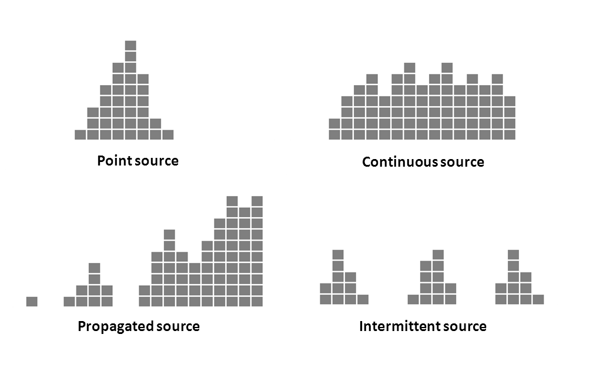
| Type | Patroon | Interpretatie |
|---|---|---|
| Point source | Eén piek, stijgt snel, daalt snel | Eenmalige blootstelling (bijv. besmet voedsel op feest) |
| Continuous source | Langgerekt plateau | Aanhoudende bron (bijv. besmet drinkwater) |
| Propagated source | Meerdere golven, elke golf groter | Mens-op-mens transmissie (bijv. mazelen) |
| Intermittent source | Gescheiden pieken | Periodieke blootstelling (bijv. wekelijkse markt) |